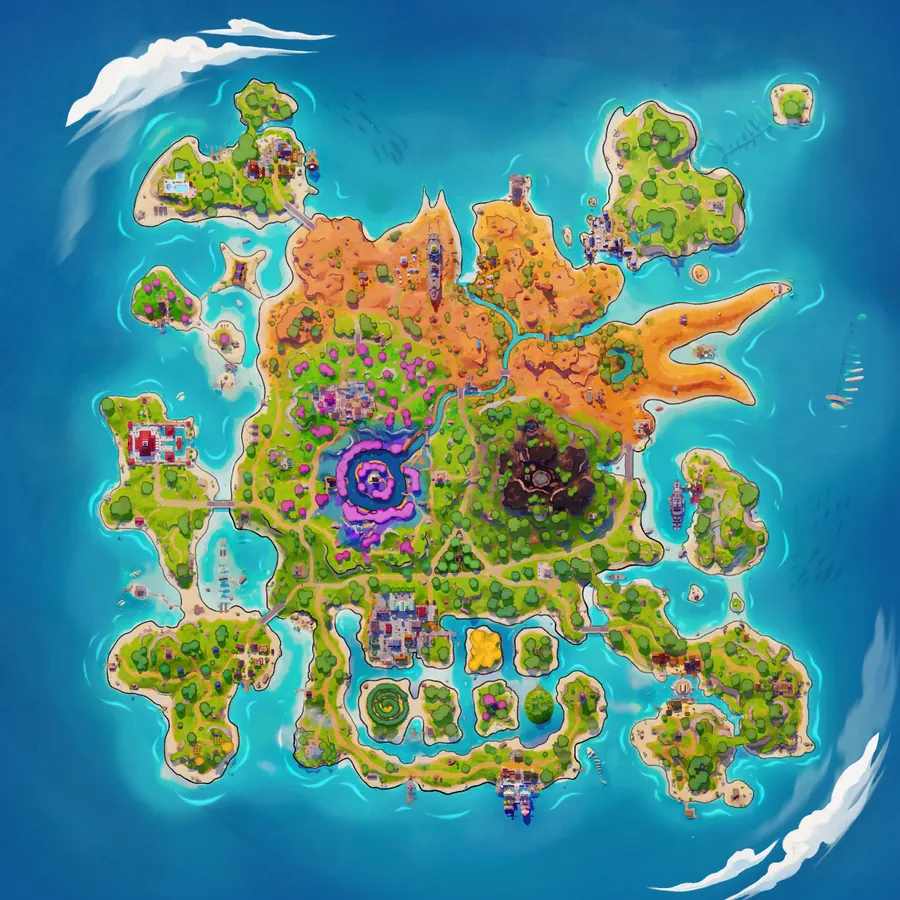
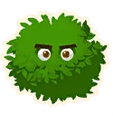
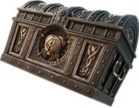

<!DOCTYPE html>
<html lang="en-AU">
<head>
<meta charset="utf-8">
<meta name="viewport" content="width=device-width, initial-scale=1">
<title>Storm Island</title>
<style>
  :root {
    --ink: #1b2a41; --ink-soft: #55627a; --line: #d8dde6; --paper: #ffffff; --field: #f3f5f8;
    --navy: #0d1330; --sky1: #16205c; --sky2: #5b2a9d; --gold: #ffe81a; --gold-deep: #ff9d1a; --storm: #8a3ff0;
    --good: #1e8a55; --good-bg: #e2f5ea; --bad: #c0392b; --bad-bg: #fde8e5; --kind: #0b6fa4;
  }
  * { box-sizing: border-box; }
  html { background: var(--sky2); }
  html, body { margin: 0; min-height: 100%; color: var(--ink);
    font-family: "Segoe UI", "Helvetica Neue", Arial, sans-serif; font-size: 17px; line-height: 1.5; }
  body { background: linear-gradient(160deg, var(--sky1), var(--sky2)) fixed; }
  button { font: inherit; cursor: pointer; color: inherit; }
  .wrap { max-width: 980px; margin: 0 auto; padding: 14px 14px 70px; }
  .caps { font-family: "Arial Black", Impact, sans-serif; font-style: italic; text-transform: uppercase; }

  /* ---- top bar ---- */
  .top { display: flex; align-items: center; gap: 10px; flex-wrap: wrap; color: #fff; margin-bottom: 12px; }
  .top h1 { font: italic 900 30px "Arial Black", Impact, sans-serif; text-transform: uppercase; margin: 0; letter-spacing: .5px; text-shadow: 0 3px 0 var(--navy); }
  .top h1 span { color: var(--gold); }
  .top .spacer { flex: 1; }
  .pill { background: rgba(13,19,48,.6); border: 2px solid rgba(255,255,255,.28); color: #fff; border-radius: 999px;
    padding: 4px 12px; font-size: 15px; font-weight: 700; white-space: nowrap; display: inline-flex; align-items: center; gap: 6px; }
  .pill img { width: 24px; height: 24px; object-fit: contain; }
  button.pill:hover { background: rgba(255,255,255,.22); }
  .btn { background: var(--gold); color: #2a2100; border: 3px solid var(--navy); border-bottom-width: 6px; border-radius: 10px; padding: 8px 20px;
    font: italic 900 18px "Arial Black", Impact, sans-serif; text-transform: uppercase; text-decoration: none; display: inline-block; }
  .btn:hover { filter: brightness(1.08); } .btn:active { transform: translateY(2px); border-bottom-width: 4px; }
  .btn.blue { background: #3fa7ff; color: #fff; } .btn.ghost { background: #fff; color: var(--ink); } .btn.small { font-size: 14px; padding: 4px 12px; border-width: 2px; border-bottom-width: 4px; }
  .btn:disabled { filter: grayscale(1); opacity: .6; cursor: default; }
  .note { background: #fff8e6; border: 2px dashed var(--gold-deep); border-radius: 14px; padding: 12px 16px; margin-bottom: 14px; display: flex; gap: 12px; align-items: center; flex-wrap: wrap; }
  .note .txt { flex: 1 1 240px; }
  .banner { background: var(--storm); color: #fff; border: 3px solid var(--navy); border-radius: 12px; padding: 8px 16px; margin-bottom: 12px; font-weight: 700; animation: pop .5s; }
  @keyframes pop { 0% { transform: scale(.9); opacity: 0; } }

  /* ---- Fortnite time ---- */
  .timecard { background: var(--navy); color: #fff; border-radius: 16px; padding: 12px 16px; margin-bottom: 14px; display: flex; align-items: center; gap: 16px; flex-wrap: wrap; }
  .pie { --p: 0; width: 112px; height: 112px; border-radius: 50%; flex: none; position: relative;
    background: conic-gradient(var(--gold) calc(var(--p) * 1%), #2b3566 0); border: 5px solid #fff; box-shadow: 0 0 0 4px var(--navy), 0 0 22px rgba(255,232,26,.5); }
  .pie::after { content: ""; position: absolute; inset: 0; border-radius: 50%; background: repeating-conic-gradient(rgba(13,19,48,.55) 0 1.2deg, transparent 1.2deg 60deg); }
  .timecard .txt { flex: 1 1 200px; }
  .timecard .lab { color: var(--gold); font-size: 16px; font-weight: 700; }
  .timecard .bigt { font: 900 34px/1.1 "Arial Black", Impact, sans-serif; }
  .timecard .of { opacity: .88; font-size: 15px; }
  .chest { width: 128px; height: 120px; object-fit: contain; flex: none; filter: drop-shadow(0 6px 4px rgba(0,0,0,.5)); }
  @media (max-width: 520px) { .pie { width: 84px; height: 84px; } .chest { width: 84px; height: 80px; } .timecard .bigt { font-size: 26px; } .top h1 { font-size: 24px; } }

  /* ---- the island ---- */
  .island { position: relative; width: 100%; max-width: 640px; margin: 0 auto 14px; aspect-ratio: 1; border-radius: 18px; overflow: hidden; border: 4px solid var(--navy); background: #1d6fd0; }
  .island svg, .island .mapimg { position: absolute; inset: 0; width: 100%; height: 100%; display: block; object-fit: cover; }
  .island #stormhole { transition: r 1.4s ease-in-out; }
  .mk { position: absolute; transform: translate(-50%, -50%); width: 68px; padding: 0; border: 0; background: none; text-align: center; color: #fff; line-height: 1.1; }
  .mk .pic { width: 60px; height: 60px; margin: 0 auto; border-radius: 50%; border: 3px solid var(--navy); background: var(--kind); display: flex; align-items: center; justify-content: center; position: relative; box-shadow: 0 4px 0 rgba(13,19,48,.6); }
  .mk .pic img { width: 100%; height: 100%; object-fit: cover; object-position: top; border-radius: 50%; }
  .mk .pic .em { font-size: 32px; }
  .mk .tag { position: absolute; right: -8px; bottom: -6px; font-size: 18px; background: #fff; border: 2px solid var(--navy); border-radius: 50%; width: 28px; height: 28px; display: flex; align-items: center; justify-content: center; }
  .mk .nm { display: inline-block; margin-top: 3px; font-size: 11.5px; font-weight: 800; background: rgba(13,19,48,.82); border-radius: 6px; padding: 1px 6px; white-space: nowrap; }
  .mk .mhp { height: 6px; width: 46px; margin: 3px auto 0; background: rgba(13,19,48,.7); border-radius: 4px; overflow: hidden; }
  .mk .mhp i { display: block; height: 100%; background: #ff5a4d; }
  .mk.open .pic { border-color: var(--gold); animation: glow 1.6s infinite; }
  .mk.open:hover .pic { transform: scale(1.08); }
  .mk.later { opacity: .8; } .mk.later .pic { filter: grayscale(.7) brightness(.8); }
  .mk.dead .pic { filter: grayscale(1) brightness(.55); } .mk.dead .nm { text-decoration: line-through; opacity: .8; }
  .mk.boss .pic { width: 74px; height: 74px; background: #7a1f3d; } .mk.boss { width: 84px; }
  .mk.spot .pic { background: #fff; border-radius: 14px; }
  .mk.spot.usedup { opacity: .55; }
  .mk:disabled { pointer-events: none; } .mk.open { z-index: 2; }
  @keyframes glow { 50% { box-shadow: 0 0 0 7px rgba(255,232,26,.35), 0 4px 0 rgba(13,19,48,.6); } }
  .dropin { position: absolute; inset: 0; display: flex; flex-direction: column; align-items: center; justify-content: center; gap: 10px; background: rgba(13,19,48,.45); text-align: center; color: #fff; padding: 20px; }
  .dropin .btn { font-size: 26px; padding: 12px 34px; }
  .dropin p { margin: 0; font-weight: 700; text-shadow: 0 2px 0 var(--navy); max-width: 420px; }
  @media (max-width: 520px) { .mk { width: 56px; } .mk .pic { width: 46px; height: 46px; } .mk.boss .pic { width: 56px; height: 56px; } .mk .nm { font-size: 10px; padding: 0 4px; } .mk .tag { width: 22px; height: 22px; font-size: 13px; } .mk .pic .em { font-size: 24px; } }
  .legend { color: #fff; font-size: 14.5px; text-align: center; margin: -4px 0 14px; opacity: .92; }
  .me-strip { background: rgba(13,19,48,.7); border: 2px solid rgba(255,255,255,.25); color: #fff; border-radius: 14px; padding: 8px 14px; margin-bottom: 12px; display: flex; gap: 14px; align-items: center; flex-wrap: wrap; }
  .me-strip .grow { flex: 1 1 180px; }

  /* ---- bars ---- */
  .bar { position: relative; height: 18px; background: rgba(13,19,48,.75); border: 2px solid var(--navy); border-radius: 6px; overflow: hidden; margin-top: 3px; min-width: 110px; }
  .bar i { display: block; height: 100%; transition: width .5s; }
  .bar.hp i { background: linear-gradient(180deg, #7dff6b, #23b53a); } .bar.sh i { background: linear-gradient(180deg, #7fd4ff, #2f8fff); } .bar.ehp i { background: linear-gradient(180deg, #ff8a65, #e5484d); }
  .bar span { position: absolute; inset: 0; text-align: center; font-size: 12px; line-height: 14px; font-weight: 800; color: #fff; text-shadow: 0 1px 0 #000; }
  .bar.sh { height: 12px; } .bar.sh span { line-height: 8px; font-size: 10px; }

  /* ---- battle ---- */
  .playbar { display: flex; align-items: center; gap: 8px; color: #fff; margin-bottom: 10px; flex-wrap: wrap; }
  .arena { position: relative; height: 290px; border-radius: 16px; overflow: hidden; border: 4px solid var(--navy); background: var(--navy) center bottom / cover no-repeat; margin-bottom: 10px; }
  .hud { position: absolute; top: 8px; width: 42%; max-width: 250px; color: #fff; background: rgba(13,19,48,.78); border-radius: 10px; padding: 6px 10px 8px; font-size: 14px; }
  .hud.me { left: 8px; } .hud.foe { right: 8px; }
  .hud b { font: italic 900 16px "Arial Black", Impact, sans-serif; text-transform: uppercase; display: block; white-space: nowrap; overflow: hidden; text-overflow: ellipsis; }
  .hud small { display: block; opacity: .9; font-size: 12.5px; }
  .fighter { position: absolute; bottom: 6px; width: 170px; height: 170px; padding: 0; border: 0; background: none; }
  .fighter img { width: 100%; height: 100%; object-fit: contain; filter: drop-shadow(0 6px 0 rgba(0,0,0,.45)); display: block; }
  .fighter.me { left: 6%; } .fighter.foe { right: 6%; }
  .fighter.foe:not(:disabled):hover img { filter: drop-shadow(0 0 12px #fff) drop-shadow(0 6px 0 rgba(0,0,0,.45)); }
  .fighter.foe:disabled { cursor: default; }
  .fighter.foe .cross { position: absolute; left: 50%; top: 50%; width: 70px; height: 70px; margin: -35px 0 0 -35px; border: 4px solid var(--gold); border-radius: 50%; opacity: 0; pointer-events: none; }
  .fighter.foe .cross::before, .fighter.foe .cross::after { content: ""; position: absolute; background: var(--gold); }
  .fighter.foe .cross::before { left: 50%; top: -12px; bottom: -12px; width: 4px; margin-left: -2px; } .fighter.foe .cross::after { top: 50%; left: -12px; right: -12px; height: 4px; margin-top: -2px; }
  .fighter.foe.aim .cross { opacity: .95; animation: aim 1.2s infinite; }
  @keyframes aim { 50% { transform: scale(1.15); } }
  .fighter.hit { animation: hit .55s; } .fighter.ko img { transform: rotate(80deg) translateY(30px); opacity: .5; transition: transform .6s, opacity .6s; }
  @keyframes hit { 20% { transform: translateX(-10px) rotate(-10deg); filter: brightness(2.2); } 60% { transform: translateX(8px) rotate(6deg); } }
  .float { position: absolute; top: 42%; font: italic 900 34px "Arial Black", Impact, sans-serif; color: var(--gold); text-shadow: 0 3px 0 var(--navy), 0 0 8px #000; pointer-events: none; animation: rise 1.5s forwards; white-space: nowrap; }
  .float.onfoe { right: 12%; } .float.onme { left: 10%; color: #ff6b5e; }
  @keyframes rise { 0% { transform: translateY(20px) scale(.6); opacity: 0; } 20% { opacity: 1; transform: translateY(0) scale(1.15); } 100% { transform: translateY(-60px); opacity: 0; } }
  .actions { display: flex; gap: 8px; margin-bottom: 12px; flex-wrap: wrap; }
  .act { flex: 1 1 130px; display: flex; align-items: center; gap: 8px; text-align: left; background: linear-gradient(180deg, color-mix(in srgb, var(--rar, #5d6578) 60%, #fff), color-mix(in srgb, var(--rar, #5d6578) 92%, #000));
    color: #fff; border: 3px solid var(--navy); border-bottom-width: 6px; border-radius: 10px; padding: 6px 10px; line-height: 1.2; min-width: 0; }
  .act b { font: italic 900 14.5px "Arial Black", Impact, sans-serif; text-transform: uppercase; display: block; text-shadow: 0 2px 0 rgba(0,0,0,.4); }
  .act small { font-size: 12.5px; display: block; }
  .gunpic { width: 76px; height: 38px; object-fit: cover; border-radius: 6px; border: 2px solid var(--navy); flex: none; display: block; }
  .ico { width: 30px; height: 30px; object-fit: contain; flex: none; vertical-align: middle; }
  .pill .ico { width: 24px; height: 24px; }
  .kit { text-align: center; font-size: 14px; font-weight: 700; } .kit small { display: block; }
  .banner { display: flex; align-items: center; gap: 10px; } .banner .ico { width: 44px; height: 44px; }
  .dropin .bus { width: 110px; height: 110px; object-fit: contain; animation: bob 3s ease-in-out infinite; }
  .mk.spot .pic img { object-fit: contain; border-radius: 0; padding: 5px; }
  .act.gun { flex: 2 1 220px; } .act.gun .go { margin-left: auto; background: var(--gold); color: #2a2100; border-radius: 8px; padding: 4px 12px; font: italic 900 17px "Arial Black", Impact, sans-serif; }
  .act:disabled { filter: grayscale(.8); opacity: .65; cursor: default; }
  @media (max-width: 520px) { .act.gun { flex-basis: 100%; } .arena { height: 236px; } .fighter { width: 124px; height: 124px; } .fighter.me { left: 2%; } .fighter.foe { right: 2%; } .float { font-size: 26px; } }

  /* ---- question ---- */
  .stage { display: grid; gap: 12px; }
  .stage.has-passage { grid-template-columns: minmax(0, 1fr) minmax(0, 1fr); align-items: start; }
  @media (max-width: 820px) { .stage.has-passage { grid-template-columns: minmax(0, 1fr); } }
  .card { background: var(--paper); border-radius: 16px; padding: 16px 18px; min-width: 0; }
  .passage h3 { margin: 0 0 4px; font-size: 20px; }
  .passage .pnote { color: var(--ink-soft); font-size: 14.5px; margin: 0 0 10px; }
  .passage p { margin: 0 0 10px; }
  .passage .poem { white-space: pre-line; font-size: 17px; line-height: 1.6; margin: 0 0 4px; }
  .passage .extract { border-left: 4px solid var(--kind); padding: 2px 0 2px 12px; margin: 0 0 14px; }
  .passage .extract b.tag { display: block; color: var(--kind); }
  .passage .gap { white-space: nowrap; font-weight: 700; background: #eef1f6; border-radius: 4px; padding: 0 4px; }
  .passage .gap.cur { background: var(--gold); box-shadow: 0 0 0 2px var(--navy); }
  @media (min-width: 821px) { .passage { position: sticky; top: 10px; max-height: calc(100vh - 20px); overflow: auto; } }
  .qhead { display: flex; justify-content: space-between; gap: 10px; font-size: 14px; color: var(--ink-soft); font-weight: 700; margin-bottom: 6px; }
  .stem { font-size: 18px; }
  .stem p { margin: 0 0 10px; }
  .stem .box { background: var(--field); border-left: 4px solid var(--kind); border-radius: 6px; padding: 10px 14px; margin: 0 0 10px; }
  .figure { margin: 10px 0; text-align: center; overflow-x: auto; }
  .figure svg, .opt svg { max-width: 100%; height: auto; }
  table.grid { border-collapse: collapse; margin: 8px auto; font-size: 17px; }
  table.grid th, table.grid td { border: 1.5px solid var(--ink-soft); padding: 5px 10px; text-align: center; }
  table.grid th { background: var(--field); }
  table.grid td.fill { background: #fff3bf; font-weight: 800; }
  .opts { display: grid; gap: 8px; margin-top: 12px; }
  .opts.visual { grid-template-columns: repeat(2, minmax(0, 1fr)); }
  .opt { display: flex; align-items: center; gap: 12px; text-align: left; background: var(--paper); border: 3px solid var(--line);
    border-radius: 10px; padding: 9px 12px; color: var(--ink); font-size: 17px; width: 100%; min-width: 0; }
  .opt:hover:not(:disabled) { border-color: var(--kind); background: var(--field); }
  .opt:disabled { cursor: default; }
  .opt .let { flex: none; width: 32px; height: 32px; border-radius: 8px; background: var(--field); border: 1.5px solid var(--line); font-weight: 800; display: flex; align-items: center; justify-content: center; transform: skewX(-6deg); }
  .opt.right { border-color: var(--good); background: var(--good-bg); } .opt.right .let { background: var(--good); color: #fff; border-color: var(--good); }
  .opt.wrong { border-color: var(--bad); background: var(--bad-bg); } .opt.wrong .let { background: var(--bad); color: #fff; border-color: var(--bad); }
  .opt.dim { opacity: .55; }
  .fb { margin-top: 14px; border-radius: 12px; padding: 12px 16px; }
  .fb.good { background: var(--good-bg); border: 2px solid var(--good); } .fb.miss { background: var(--bad-bg); border: 2px solid var(--bad); }
  .fb h4 { margin: 0 0 4px; font-size: 19px; }
  .fb p { margin: 0 0 8px; } .fb p:last-child { margin: 0; }
  .fb .why-not { color: var(--ink-soft); }
  .next { margin-top: 14px; display: flex; justify-content: flex-end; }
  .aimhelp { text-align: center; font-size: 18px; padding: 8px 0; }
  .aimhelp .btn { margin-top: 8px; font-size: 22px; }

  /* ---- shop, locker, results ---- */
  .shelf { background: var(--paper); border-radius: 16px; padding: 14px 16px; margin-bottom: 14px; }
  .shelf h3 { margin: 0 0 4px; font: italic 900 20px "Arial Black", Impact, sans-serif; text-transform: uppercase; }
  .shelf p.sub { margin: 0 0 10px; color: var(--ink-soft); font-size: 15px; }
  .tiles { display: grid; grid-template-columns: repeat(auto-fill, minmax(132px, 1fr)); gap: 10px; }
  .tile { border: 3px solid var(--navy); border-bottom-width: 7px; border-radius: 10px; text-align: center; padding: 8px 6px; font-size: 13.5px; line-height: 1.3; color: #fff;
    background: linear-gradient(180deg, color-mix(in srgb, var(--rar) 55%, #fff), color-mix(in srgb, var(--rar) 90%, #000)); display: flex; flex-direction: column; align-items: center; gap: 3px; }
  .tile b { font: italic 900 14px "Arial Black", Impact, sans-serif; text-transform: uppercase; text-shadow: 0 2px 0 rgba(0,0,0,.4); }
  .tile img { width: 88px; height: 88px; object-fit: contain; } .tile .gunpic { width: 116px; height: 58px; } .tile .itempic { width: 64px; height: 64px; object-fit: contain; }
  .tile .btn { margin-top: auto; }
  .tile.off { --rar: #5d6578 !important; } .tile.off img { filter: brightness(0) opacity(.55); }
  .tile.cur { box-shadow: 0 0 0 4px var(--gold); }
  button.tile { cursor: pointer; }
  .result { text-align: center; }
  .result h2 { font: italic 900 34px "Arial Black", Impact, sans-serif; text-transform: uppercase; margin: 6px 0; }
  .result .big img { width: 150px; height: 146px; object-fit: contain; animation: bob 2.6s ease-in-out infinite; }
  .result .big img.vic { width: 120px; height: 100px; animation-delay: -1.2s; }
  .result .rows { display: inline-grid; grid-template-columns: auto auto; gap: 4px 18px; text-align: left; margin: 10px auto; font-size: 18px; }
  .result .rows b { text-align: right; }
  @keyframes bob { 50% { transform: translateY(-7px); } }
  details.parents { background: rgba(255,255,255,.94); border-radius: 12px; padding: 10px 16px; font-size: 15px; }
  details.parents summary { cursor: pointer; font-weight: 700; color: var(--ink-soft); }
  details.parents table { border-collapse: collapse; width: 100%; margin: 10px 0; }
  details.parents td, details.parents th { border-bottom: 1px solid var(--line); padding: 5px 8px; text-align: left; }
  details.parents td.n, details.parents th.n { text-align: right; }
  details.parents input { font: inherit; width: 80px; padding: 4px 6px; }
  .row { display: flex; gap: 8px; align-items: center; flex-wrap: wrap; margin: 8px 0 14px; }
  .legal { color: rgba(255,255,255,.78); font-size: 12.5px; line-height: 1.45; margin: 16px 4px 0; text-align: center; }

  /* ---- battle royale: the bus, other players, the feed (Nov 2026 rebuild) ---- */
  .island.pick { cursor: crosshair; }
  .island .botdot { fill: #fff; stroke: #0d1330; stroke-width: 2.5; }
  .island .drop { animation: drop 1.1s ease-out both; transform-box: fill-box; transform-origin: center; }
  @keyframes drop { 0% { transform: translateY(-70px) scale(1.8); opacity: 0; } 60% { opacity: 1; } 100% { transform: none; opacity: 1; } }
  .island .kill { stroke: #ff4d4d; stroke-width: 4; stroke-linecap: round; fill: none; transform-box: fill-box; transform-origin: center; animation: killfade 2.6s ease-out forwards; }
  @keyframes killfade { 0% { opacity: 0; transform: scale(2.2); } 15% { opacity: 1; transform: scale(1); } 100% { opacity: 0; } }
  .island .stormanim { animation: storm 1.8s ease-in-out both; transform-box: view-box; }
  @keyframes storm { from { transform: translate(var(--dx), var(--dy)) scale(var(--k)); } to { transform: none; } }
  .feed { position: absolute; left: 8px; top: 8px; max-width: 66%; display: flex; flex-direction: column; gap: 3px; pointer-events: none; z-index: 3; }
  .fe { background: rgba(13,19,48,.8); color: #fff; font-size: 12.5px; font-weight: 700; border-radius: 6px; padding: 2px 8px; line-height: 1.35; width: fit-content; max-width: 100%; }
  .fe.me { background: rgba(255,178,26,.95); color: #2a2100; } .fe.storm { background: rgba(138,63,240,.92); } .fe.info { background: rgba(47,143,255,.9); }
  .fe.new { animation: slidein .5s ease-out both; }
  @keyframes slidein { from { transform: translateX(-30px); opacity: 0; } }
  .alivepill { position: absolute; right: 8px; top: 8px; z-index: 3; background: rgba(13,19,48,.88); color: #fff; font: italic 900 18px "Arial Black", Impact, sans-serif; border-radius: 8px; padding: 2px 10px; border: 2px solid #fff; }
  .flybus { position: absolute; top: 14%; left: -22%; width: 96px; z-index: 3; pointer-events: none; animation: fly 7s linear infinite; }
  @keyframes fly { to { left: 104%; } }
  .buspick { position: absolute; left: 0; right: 0; bottom: 0; padding: 14px 16px 18px; text-align: center; color: #fff; background: linear-gradient(0deg, rgba(13,19,48,.9), rgba(13,19,48,.55) 75%, transparent); z-index: 3; }
  .buspick p { margin: 0 0 8px; font-weight: 700; text-shadow: 0 2px 0 var(--navy); }
  .mk.me { pointer-events: none; z-index: 1; width: 52px; } .mk.me .pic { width: 40px; height: 40px; border-color: #fff; background: #ffb21a; box-shadow: 0 0 0 3px #ffb21a; }
  .mk.me .nm { background: #ffb21a; color: #2a2100; }
  @media (max-width: 520px) { .fe { font-size: 10.5px; padding: 1px 6px; } .feed { max-width: 72%; } .alivepill { font-size: 14px; } .flybus { width: 64px; } .mk.me { width: 40px; } .mk.me .pic { width: 30px; height: 30px; } .buspick { font-size: 15px; } }

  /* ---- battle: moves, chests, headshots ---- */
  .arena .afeed { position: absolute; left: 8px; bottom: 6px; display: flex; flex-direction: column; gap: 2px; z-index: 2; max-width: 62%; pointer-events: none; }
  .arena .afeed .fe { font-size: 11.5px; }
  .pips { margin-top: 4px; } .pips i { display: inline-block; width: 10px; height: 10px; border-radius: 50%; background: rgba(255,255,255,.3); margin-right: 3px; vertical-align: -1px; } .pips i.on { background: var(--gold); box-shadow: 0 0 6px var(--gold); }
  .wall { position: absolute; bottom: 8px; left: calc(6% + 120px); width: 84px; height: 130px; z-index: 2; animation: wallup .35s ease-out both; transform-origin: bottom; }
  .wall svg { width: 100%; height: 100%; display: block; }
  @keyframes wallup { from { transform: scaleY(0); } }
  .fighter.me.jumping { animation: jump .9s ease-out; } @keyframes jump { 40% { transform: translateY(-80px) rotate(-8deg); } }
  .fighter.me.rushing { animation: rush .8s ease-in-out; } @keyframes rush { 45% { transform: translateX(150px); } }
  .fighter.foe.dancing img { animation: dance .5s ease-in-out 5; } @keyframes dance { 25% { transform: rotate(-14deg) translateY(-10px); } 75% { transform: rotate(14deg) translateY(-10px); } }
  .boom { position: absolute; left: 8%; bottom: 30px; width: 150px; height: 150px; border-radius: 50%; z-index: 2; pointer-events: none;
    background: radial-gradient(circle, #fff6c2 0, #ffd21a 30%, #ff7a1a 55%, rgba(255,90,31,0) 70%); animation: boom .9s ease-out .25s both; }
  .boom.missed { bottom: 0; }
  @keyframes boom { 0% { transform: scale(.15); opacity: 1; } 100% { transform: scale(1.5); opacity: 0; } }
  .tracer { position: absolute; height: 4px; top: 56%; left: 26%; right: 26%; z-index: 2; pointer-events: none; background: linear-gradient(90deg, rgba(255,232,26,0), #ffe81a); transform-origin: right; animation: tracer .3s linear 4 both; }
  .tracer.t2 { top: 50%; animation-delay: .15s; }
  @keyframes tracer { 0% { opacity: 1; transform: scaleX(0); } 100% { opacity: 0; transform: scaleX(1); } }
  .bushhide { position: absolute; left: 4%; bottom: 0; width: 120px; z-index: 2; opacity: .92; pointer-events: none; }
  .float.head { color: #ff4dd8; font-size: 30px; } .float.heal { color: #7dff6b; } .float.safe { color: #7dff6b; }
  .threat { border: 4px solid #ff5a4d; }
  .threat .cue { display: flex; gap: 12px; align-items: center; font-size: 20px; font-weight: 800; }
  .threat .cue svg, .threat .cue .cuepic { width: 60px; height: 60px; flex: none; object-fit: contain; animation: pop .5s; }
  .threat .sub { margin: 12px 0 0; font-weight: 700; color: var(--ink-soft); }
  .counters { display: grid; grid-template-columns: repeat(auto-fit, minmax(120px, 1fr)); gap: 8px; margin-top: 10px; }
  .counter { display: flex; flex-direction: column; align-items: center; gap: 4px; padding: 10px 6px; border: 3px solid var(--navy); border-bottom-width: 7px; border-radius: 12px; background: #fff;
    font: italic 900 15px "Arial Black", Impact, sans-serif; text-transform: uppercase; color: var(--ink); }
  .counter:hover { background: #fff8d6; } .counter:active { transform: translateY(2px); border-bottom-width: 5px; }
  .counter svg, .counter img { width: 52px; height: 52px; object-fit: contain; }
  .counter.boog { background: #f3e8ff; }
  .chestcard { border: 4px solid #ffb21a; box-shadow: 0 0 26px rgba(255,178,26,.55); text-align: left; }
  .chestcard .chestimg { width: 160px; display: block; margin: 4px auto 8px; animation: chestglow 1.6s ease-in-out infinite; }
  .chestcard h3 { text-align: center; font-size: 24px; margin: 0 0 6px; }
  @keyframes chestglow { 50% { filter: drop-shadow(0 0 18px #ffd21a); transform: translateY(-5px); } }
  .loot { --rar: #888; display: flex; align-items: center; gap: 14px; border: 3px solid var(--navy); border-bottom-width: 7px; border-radius: 12px; padding: 10px 14px; margin-top: 14px; color: #fff;
    background: linear-gradient(180deg, color-mix(in srgb, var(--rar) 60%, #fff), color-mix(in srgb, var(--rar) 92%, #000)); animation: pop .6s; text-shadow: 0 1px 0 rgba(0,0,0,.4); }
  .loot img { width: 80px; height: 80px; object-fit: contain; flex: none; filter: drop-shadow(0 4px 0 rgba(0,0,0,.35)); }
  .loot b { font: italic 900 22px "Arial Black", Impact, sans-serif; text-transform: uppercase; display: block; }
  .loot small { text-transform: uppercase; font-weight: 800; letter-spacing: 1px; }
  @media (max-width: 520px) { .wall { left: calc(2% + 84px); width: 60px; height: 96px; } .boom { width: 110px; height: 110px; } .bushhide { width: 86px; } .threat .cue { font-size: 17px; } }
</style>
</head>
<body>
<div class="wrap" id="app"></div>
<script>
const INK = "#1b2a41";
const READING = [], THINKING = [], MATHS = [], GENS = [];
/* ---------------------------------------------------------------
   STORM ISLAND: shared drawing and option helpers for the question files.
   Loaded first (the files are joined in name order by tools/build_game3.py).
   --------------------------------------------------------------- */
const LIB = (() => {
  const T = (x, y, s, o = "") => `<text x="${x}" y="${y}" font-size="15" fill="${INK}" ${o}>${s}</text>`;
  const fig = (svg) => `<div class="figure">${svg}</div>`;
  const tbl = (head, rows, fill = []) => `<div class="figure"><table class="grid"><tr>${head.map(h => `<th>${h}</th>`).join("")}</tr>${rows.map((r, ri) => `<tr>${r.map((c, i) => i ? `<td${fill.some(f => f[0] === ri && f[1] === i) ? ' class="fill"' : ""}>${c}</td>` : `<th>${c}</th>`).join("")}</tr>`).join("")}</table></div>`;
  const money = c => "$" + (c / 100).toFixed(2);
  const clock = m => { m = ((m % 1440) + 1440) % 1440; const h = Math.floor(m / 60), mm = m % 60; return `${h % 12 === 0 ? 12 : h % 12}:${String(mm).padStart(2, "0")} ${h < 12 ? "am" : "pm"}`; };
  const dur = m => m < 60 ? `${m} minutes` : `${Math.floor(m / 60)} h ${m % 60 ? (m % 60) + " min" : ""}`.trim();
  const frac = (n, d) => `<sup>${n}</sup>⁄<sub>${d}</sub>`;

  /* a column graph: series = [{name, color, values}], gridlines every `step` up to `max` */
  function colGraph({ labels, series, max, step, ylabel, numbers = true, aria }) {
    const gw = series.length * 26 + 30, W = 70 + labels.length * gw, y = v => 205 - v * (170 / max);
    let g = "";
    for (let v = 0; v <= max; v += step) g += `<line x1="50" x2="${W - 10}" y1="${y(v)}" y2="${y(v)}" stroke="#c5ccd8" stroke-width="1"/>` + (numbers ? T(42, y(v) + 5, v, 'text-anchor="end"') : "");
    labels.forEach((n, i) => {
      const x0 = 66 + i * gw;
      series.forEach((s, k) => { g += `<rect x="${x0 + k * 26}" y="${y(s.values[i])}" width="24" height="${205 - y(s.values[i])}" fill="${s.color}" stroke="${INK}" stroke-width="1.5"/>`; });
      g += T(x0 + series.length * 13, 224, n, 'text-anchor="middle"');
    });
    g += `<line x1="50" x2="50" y1="${y(max)}" y2="205" stroke="${INK}" stroke-width="2"/><line x1="50" x2="${W - 10}" y1="205" y2="205" stroke="${INK}" stroke-width="2"/>`;
    g += `<text x="14" y="120" font-size="13" fill="${INK}" text-anchor="middle" transform="rotate(-90 14 120)">${ylabel}</text>`;
    if (series.length > 1) series.forEach((s, k) => { g += `<rect x="${60 + k * 110}" y="236" width="14" height="12" fill="${s.color}" stroke="${INK}"/>` + T(80 + k * 110, 247, s.name); });
    return fig(`<svg viewBox="0 0 ${W} ${series.length > 1 ? 256 : 238}" width="${W}" role="img" aria-label="${aria}">${g}</svg>`);
  }
  /* a picture graph: rows = [[label, symbols]] where symbols may end in .5; keyText is "" for a missing key */
  function pictGraph({ rows, keyText, color, aria }) {
    const sym = (x, y, half) => half ? `<path d="M${x + 13} ${y + 2}a13 13 0 0 0 0 26z" fill="${color}" stroke="${INK}" stroke-width="1.5"/>` : `<circle cx="${x + 13}" cy="${y + 15}" r="13" fill="${color}" stroke="${INK}" stroke-width="1.5"/>`;
    const wide = Math.max(...rows.map(r => Math.ceil(r[1]))), W = 118 + wide * 32 + 10;
    let g = "";
    rows.forEach(([d, n], i) => {
      const y = 10 + i * 40;
      g += T(98, y + 21, d, 'text-anchor="end"') + `<line x1="106" x2="106" y1="${y - 5}" y2="${y + 35}" stroke="${INK}" stroke-width="2"/>`;
      for (let k = 0; k < Math.floor(n); k++) g += sym(114 + k * 32, y);
      if (n % 1) g += sym(114 + Math.floor(n) * 32, y, true);
    });
    const ky = 14 + rows.length * 40;
    if (keyText) g += sym(114, ky) + T(148, ky + 21, "= " + keyText);
    return fig(`<svg viewBox="0 0 ${Math.max(W, 290)} ${ky + (keyText ? 36 : 0)}" width="${Math.max(W, 290)}" role="img" aria-label="${aria}">${g}</svg>`);
  }
  /* a dot plot of counts for the values first..first+n-1 */
  function dotPlot({ counts, first = 0, label, aria }) {
    const W = 60 + counts.length * 40, top = Math.max(...counts), base = 30 + top * 22;
    let g = `<line x1="20" x2="${W - 10}" y1="${base}" y2="${base}" stroke="${INK}" stroke-width="2"/>`;
    counts.forEach((c, v) => {
      const x = 45 + v * 40;
      g += `<line x1="${x}" x2="${x}" y1="${base}" y2="${base + 6}" stroke="${INK}" stroke-width="2"/>` + T(x, base + 22, first + v, 'text-anchor="middle"');
      for (let k = 0; k < c; k++) g += `<circle cx="${x}" cy="${base - 12 - k * 22}" r="8" fill="#ff8a65" stroke="${INK}" stroke-width="1.5"/>`;
    });
    g += T(W / 2, base + 42, label, 'text-anchor="middle"');
    return fig(`<svg viewBox="0 0 ${W} ${base + 50}" width="${W}" role="img" aria-label="${aria}">${g}</svg>`);
  }
  /* an upright container with a scale: labels every `major` up to `max`, `minor` small steps between labels, liquid at `level` */
  function jugSvg({ x = 0, max, major, minor, level, unit, color = "#f6c453", title = "" }) {
    const y = v => 240 - v * (200 / max), small = major / minor;
    let g = `<path d="M${x + 40} 30 L${x + 40} 242 Q${x + 40} 250 ${x + 48} 250 L${x + 132} 250 Q${x + 140} 250 ${x + 140} 242 L${x + 140} 30" fill="none" stroke="${INK}" stroke-width="3"/>`;
    g += `<rect x="${x + 42}" y="${y(level)}" width="96" height="${248 - y(level)}" fill="${color}" opacity=".75"/>`;
    for (let i = 0; i <= max / small + 1e-9; i++) {
      const v = i * small, big = i % minor === 0;
      g += `<line x1="${x + 40}" x2="${x + (big ? 66 : 54)}" y1="${y(v)}" y2="${y(v)}" stroke="${INK}" stroke-width="2"/>`;
      if (big && v) g += T(x + 71, y(v) + 5, v + (unit ? " " + unit : ""), 'font-size="13"');
    }
    if (title) g += T(x + 90, 18, title, 'text-anchor="middle" font-weight="700"');
    return g;
  }
  const jugAria = ({ max, major, minor, level, unit, title = "A container" }) => `${title}: the scale is labelled every ${major} ${unit} up to ${max} ${unit}, with ${minor - 1} small unlabelled mark${minor - 1 === 1 ? "" : "s"} between each pair of labels. The liquid reaches ${level % major === 0 ? "the " + level + " " + unit + " label" : "small mark number " + ((level % major) / (major / minor)) + " above the " + (level - level % major) + " " + unit + " label"}.`;

  /* cube models drawn at a slant: cells = [[x, y, z], …] (x to the right, y going back, z up); only faces you can see are drawn */
  function blocks(cells, { u = 30, aria = "", fill = ["#ffd8a8", "#ffe9cf", "#e8a06a"] } = {}) {
    const dx = u * 0.5, dy = u * 0.4, has = new Set(cells.map(c => c.join(",")));
    const X = Math.max(...cells.map(c => c[0])) + 1, Y = Math.max(...cells.map(c => c[1])) + 1, Z = Math.max(...cells.map(c => c[2])) + 1;
    const W = Math.round(X * u + Y * dx + 8), H = Math.round(Z * u + Y * dy + 8), ox = 4, oy = H - 4;
    const P = (x, y, z) => `${(ox + x * u + y * dx).toFixed(1)},${(oy - z * u - y * dy).toFixed(1)}`;
    const k = (x, y, z) => has.has(`${x},${y},${z}`);
    const poly = (pts, f) => `<polygon class="face" points="${pts.join(" ")}" fill="${f}" stroke="${INK}" stroke-width="1.6" stroke-linejoin="round"/>`;
    let g = "";
    for (const [x, y, z] of cells.slice().sort((a, b) => b[1] - a[1] || a[2] - b[2] || a[0] - b[0])) {
      if (!k(x, y - 1, z)) g += poly([P(x, y, z), P(x + 1, y, z), P(x + 1, y, z + 1), P(x, y, z + 1)], fill[0]);
      if (!k(x, y, z + 1)) g += poly([P(x, y, z + 1), P(x + 1, y, z + 1), P(x + 1, y + 1, z + 1), P(x, y + 1, z + 1)], fill[1]);
      if (!k(x + 1, y, z)) g += poly([P(x + 1, y, z), P(x + 1, y + 1, z), P(x + 1, y + 1, z + 1), P(x + 1, y, z + 1)], fill[2]);
    }
    return `<svg viewBox="0 0 ${W} ${H}" width="${W}" role="img" aria-label="${aria}">${g}</svg>`;
  }
  /* a plan seen from above: rows of tower heights, front row last */
  const plan = (rows, note = "") => `<div class="figure"><div style="display:inline-block"><table class="grid" style="font-weight:700;margin:0">${rows.map(r => `<tr>${r.map(h => `<td>${h}</td>`).join("")}</tr>`).join("")}</table><div style="font-size:14px;font-weight:700;letter-spacing:2px;margin-top:4px">▲ FRONT ▲</div>${note}</div></div>`;
  /* cells of towers standing on a plan (rows listed back to front) */
  const towers = rows => { const cells = [], n = rows.length; rows.forEach((r, i) => r.forEach((h, x) => { for (let z = 0; z < h; z++) cells.push([x, n - 1 - i, z]); })); return cells; };

  /* random helpers on top of a seeded random-number function */
  const R = r => ({
    int: (a, b) => a + Math.floor(r() * (b - a + 1)),
    pick: a => a[Math.floor(r() * a.length)],
    shuffle: a => { a = a.slice(); for (let i = a.length - 1; i > 0; i--) { const j = Math.floor(r() * (i + 1)); [a[i], a[j]] = [a[j], a[i]]; } return a; },
    chance: p => r() < p,
  });
  /* Number options in order of size. `wrongs` are the values real mistakes give, most tempting first: the first two are
     always used. The correct value is then steered to a random letter by choosing how many options sit below and above it,
     topping up with near misses (a `step` out) where there are not enough real mistakes on that side. */
  function opts(R, correct, wrongs, fmt = String, n = 5, step = 1) {
    const w = []; for (const x of wrongs) if (Number.isFinite(x) && x > 0 && x !== correct && !w.includes(x)) w.push(x);
    const must = w.slice(0, 2), room = Math.floor((correct - 1e-9) / step);            // how many near misses fit below
    const lo = w.filter(x => x < correct), hi = w.filter(x => x > correct);
    const tMin = must.filter(x => x < correct).length, tMax = Math.min(n - 1 - must.filter(x => x > correct).length, lo.length + room);
    const t = tMax >= tMin ? R.int(tMin, tMax) : tMin;
    const take = (list, need, dir) => { const out = list.slice(0, need); for (let k = 1; out.length < need && k < 60; k++) { const c = correct + dir * k * step; if (c > 0 && !out.includes(c) && !w.includes(c)) out.push(c); } return out; };
    const below = take(lo, t, -1), above = take(hi, n - 1 - below.length, 1);
    const vals = [...below, correct, ...above].sort((a, b) => a - b);
    return { options: vals.map(fmt), answer: vals.indexOf(correct) };
  }
  const gen = (id, kind, tier, cat, fn) => GENS.push({ id, kind, tier, cat, make: r => fn(R(r)) });
  const NAMES = ["Ava", "Ben", "Cleo", "Dev", "Esha", "Finn", "Gia", "Hugo", "Isla", "Jai", "Kira", "Leo", "Mila", "Noah", "Omar", "Pia", "Remy", "Suki", "Theo", "Uma", "Vera", "Will", "Yusuf", "Zoe"];
  return { T, fig, tbl, money, clock, dur, frac, colGraph, pictGraph, dotPlot, jugSvg, jugAria, R, opts, gen, NAMES, blocks, plan, towers };
})();

/* STORM ISLAND: where the land is on the map picture, made by game3/art/landmask.py (do not edit by hand).
   40 x 40 squares, each 2.5% of the map; 1 = land. */
const LAND = [
  "0000000000000000000000000000000000000000",
  "0000000000000000000000000000000000000000",
  "0000000000000000000000000000000000000000",
  "0000000000000000000000000000000000000000",
  "0000000000011000000000000000000000010000",
  "0000000000010000000000000001111000000000",
  "0000000010011000000000000001111000000000",
  "0000000111111100000000000001111000000000",
  "0000001111111000000000000001111110000000",
  "0000001111111000000101110001111110000000",
  "0000000000000111011101110011011110000000",
  "0000000000100111111101111000000000000000",
  "0000001100100111111101111110000000000000",
  "0000001110001111111111111110000011000000",
  "0000000000001111111111111100111110000000",
  "0000000001101111111111111111110000000000",
  "0000000000111111111111111110111100000000",
  "0000000000001111111111111111111110000000",
  "0000011000011111011111111111100000000000",
  "0000011000011110000111111111100000000000",
  "0000001110011100000111111111000100000000",
  "0000011111111110000111111111100110000000",
  "0000011110111100000111111111100110000000",
  "0000001110001110001111111111100111000000",
  "0000000110000110111111111111111111000000",
  "0000000110001111111111111110000000000000",
  "0000000010001111111111111101100000000000",
  "0000000011110110100100101101100000000000",
  "0000011111110010111101011001111111000000",
  "0000011111110010000101010000111111100000",
  "0000011111000010110100000100000111110000",
  "0000000111000010111101100110001001110000",
  "0000000011000111010100000100111111110000",
  "0000000011000111100001111000011100000000",
  "0000000010000000111111111000001100000000",
  "0000000000000000000000000000000000000000",
  "0000000000000000000000000000000000000000",
  "0000000000000000000000000000000000000000",
  "0000000000000000000000000000000000000000",
  "0000000000000000000000000000000000000000"
];

/* ---------------------------------------------------------------
   STORM ISLAND: question templates that redraw themselves with new numbers.
   Each template takes a seeded random source and returns
   { stem, options, answer, explain, data }. `data` holds the numbers the
   picture was drawn from; tools/check_game3.js re-solves every question from
   `data` with its own separate working, over many seeds.
   Maths templates have five options (A–E); thinking templates have four.
   --------------------------------------------------------------- */
(() => {
  const { T, fig, tbl, money, clock, colGraph, pictGraph, dotPlot, jugSvg, jugAria, opts, gen, NAMES } = LIB;
  const DAYS = ["Monday", "Tuesday", "Wednesday", "Thursday", "Friday", "Saturday", "Sunday"];
  const B = s => `<b>${s}</b>`;
  const sum = a => a.reduce((x, y) => x + y, 0);
  const list = a => a.length < 2 ? a.join("") : a.slice(0, -1).join(", ") + " and " + a[a.length - 1];
  const sy = n => n === 0.5 ? "half a symbol" : Number.isInteger(n) ? `${n} symbol${n === 1 ? "" : "s"}` : `${Math.floor(n)} and a half symbols`;

  /* ================= MATHS, circle 1 ================= */

  gen("pict", "maths", 1, "Graphs & data", R => {
    const c = R.pick([
      { intro: "The picture graph shows how many books a library lent each day.", rows: ["Mon", "Tue", "Wed", "Thu"], item: "books", verb: "were lent on", col: "#4dabf7" },
      { intro: "The picture graph shows how many ice creams a kiosk sold each day.", rows: ["Fri", "Sat", "Sun", "Mon"], item: "ice creams", verb: "were sold on", col: "#f783ac" },
      { intro: "The picture graph shows how many trees each class planted.", rows: ["Class 4A", "Class 4B", "Class 4C", "Class 4D"], item: "trees", verb: "were planted by", col: "#51cf66" },
      { intro: "The picture graph shows how many shells each child collected.", rows: ["Mai", "Otis", "Priya", "Sam"], item: "shells", verb: "were collected by", col: "#ffa94d" },
    ]);
    const key = R.pick([2, 4, 6, 10, 20]);
    let h, i, j;
    do { h = R.shuffle([2, 3, 4, 5, 6, 7, 8, 9, 10]).slice(0, 4); [i, j] = R.shuffle([0, 1, 2, 3]); if (h[i] < h[j]) [i, j] = [j, i]; } while ((h[i] % 2 === 0 && h[j] % 2 === 0) || h[i] - h[j] < 2);
    const rows = c.rows.map((n, k) => [n, h[k] / 2]), a = rows[i][1], b = rows[j][1], correct = (a - b) * key;
    const o = opts(R, correct, [Math.ceil(a - b), a * key, (Math.ceil(a) - Math.ceil(b)) * key, (a + b) * key], String, 5, key / 2);
    return { ...o, data: { rows, key, a: i, b: j },
      stem: `<p>${c.intro}</p>${pictGraph({ rows, keyText: `${key} ${c.item}`, color: c.col, aria: `A picture graph. ${rows.map(r => `${r[0]}: ${sy(r[1])}`).join(". ")}. Key: one whole symbol = ${key} ${c.item}.` })}<p>How many ${B("more")} ${c.item} ${c.verb} ${B(rows[i][0])} than ${B(rows[j][0])}?</p>`,
      explain: `<p>One symbol stands for ${key} ${c.item}, so half a symbol stands for ${key / 2}.</p><p>${rows[i][0]}: ${sy(a)} = ${a * key}. ${rows[j][0]}: ${sy(b)} = ${b * key}. The difference is ${a * key} − ${b * key} = ${B(correct)}.</p><p class="why-not">Counting the symbols without using the key gives a number that is far too small. Counting a half symbol as a whole one, or giving only ${rows[i][0]}’s amount (${a * key}), are the other common slips.</p>` };
  });

  gen("jug", "maths", 1, "Measurement & scales", R => {
    const [major, minor] = R.pick([[100, 2], [100, 4], [200, 4], [100, 5], [200, 2], [500, 5]]), small = major / minor, max = major * 5;
    const base = major * R.int(2, 4), t = R.int(1, minor - 1), level = base + t * small;
    const p = R.pick([small, 2 * small, major, major + small].filter(v => v < level - small));
    const who = R.pick(NAMES), liquid = R.pick(["juice", "milk", "water", "soup"]);
    const o = opts(R, level - p, [level, base + t * 10 - p, base - p, base + major - p, level + p], v => v + " mL", 5, small);
    const spec = { max, major, minor, level, unit: "mL", color: liquid === "milk" ? "#dfe7f5" : liquid === "water" ? "#8fd3ff" : "#f6c453" };
    return { ...o, data: { major, minor, level, p },
      stem: `<p>The jug shows how much ${liquid} ${who} has.</p>${fig(`<svg viewBox="0 0 200 262" width="200" role="img" aria-label="${jugAria({ ...spec, title: "A measuring jug" })}">${jugSvg(spec)}</svg>`)}<p>${who} pours out ${B(p + " mL")}. How much ${liquid} is left in the jug?</p>`,
      explain: `<p>From one label to the next is ${major} mL, split into ${minor} equal steps, so each small step is ${major} ÷ ${minor} = ${small} mL.</p><p>The ${liquid} is ${t} small step${t === 1 ? "" : "s"} above ${base} mL: ${base} + ${t * small} = ${level} mL. After pouring: ${level} − ${p} = ${B(level - p + " mL")}.</p><p class="why-not">${level} mL is the amount before pouring. Reading only the nearest label (${base} or ${base + major}), or counting each small mark as 10 mL when it is not, gives the other wrong answers.</p>` };
  });

  gen("endtime", "maths", 1, "Time & timetables", R => {
    const c = R.pick([["A film", "starts", "runs for", "finish"], ["A train", "leaves", "travels for", "arrive"], ["A swimming carnival", "starts", "lasts", "finish"], ["A bushwalk", "starts", "takes", "end"]]);
    const sm = R.pick([30, 35, 40, 45, 50, 55]), start = R.int(8, 16) * 60 + sm, h = R.int(1, 2), m = R.pick([15, 20, 25, 30, 35, 40, 45, 50].filter(v => v + sm >= 65));
    const correct = start + h * 60 + m;
    const o = opts(R, correct, [correct - 60, start + m, start + h * 60, correct + 60], clock, 5, 10);
    return { ...o, data: { start, h, m },
      stem: `<p>${c[0]} ${c[1]} at ${B(clock(start))} and ${c[2]} ${B(`${h} hour${h > 1 ? "s" : ""} ${m} minutes`)}.</p><p>What time does it ${c[3]}?</p>`,
      explain: `<p>Add the hours first: ${clock(start)} + ${h} hour${h > 1 ? "s" : ""} = ${clock(start + h * 60)}.</p><p>Then the minutes: ${60 - sm} minutes takes you to ${clock(start + h * 60 + 60 - sm)}, and the other ${m - (60 - sm)} minutes makes ${B(clock(correct))}.</p><p class="why-not">${clock(correct - 60)} forgets that the minutes go past the hour. ${clock(start + m)} forgets the hour${h > 1 ? "s" : ""}, and ${clock(start + h * 60)} forgets the minutes.</p>` };
  });

  gen("change", "maths", 1, "Money & best value", R => {
    const shop = R.pick([["a pen", "a ruler", "a notebook"], ["a drink", "a muffin", "an apple"], ["a comic", "a sticker sheet", "a bookmark"], ["a bun", "a juice", "a yoghurt"]]);
    const n = R.int(2, 3), who = R.pick(NAMES);
    let prices, total, note;
    do { prices = Array.from({ length: n }, () => R.int(24, 139) * 5); total = sum(prices); note = total < 900 ? 1000 : 2000; } while (total > 1800 || prices.some(p => p % 100 === 0) || total % 100 === 0);
    const correct = note - total;
    const o = opts(R, correct, [total, correct + 100, note - prices[0], correct + 10, note - total + prices[n - 1]], money, 5, 5);
    return { ...o, data: { prices, note },
      stem: `<p>${who} buys ${list(prices.map((p, k) => `${shop[k]} for ${B(money(p))}`))}.</p><p>${who} pays with a ${B("$" + note / 100 + " note")}. How much change does ${who} get?</p>`,
      explain: `<p>Add the prices: ${prices.map(money).join(" + ")} = ${money(total)}.</p><p>Change: ${money(note)} − ${money(total)} = ${B(money(correct))}.</p><p class="why-not">${money(total)} is what was spent, not the change. ${money(correct + 100)} comes from a slip when taking away the dollars, and ${money(note - prices[0])} leaves out part of the shopping.</p>` };
  });

  gen("missing", "maths", 1, "Number & place value", R => {
    const form = R.int(1, 3), a = R.int(12, 48), c = R.int(6, 25);
    let b, correct, line, wrongs, how;
    if (form === 1) { b = a + c + R.int(11, 40); correct = b - c - a; line = `${a} + ☐ = ${b} − ${c}`; wrongs = [b - a, b - c, b - c + a, b + c - a]; how = `The right-hand side is ${b} − ${c} = ${b - c}. So ${a} + ☐ = ${b - c}, and ☐ = ${b - c} − ${a} = ${B(correct)}.`; }
    else if (form === 2) { b = R.int(20, 60); correct = a + b + c; line = `☐ − ${a} = ${b} + ${c}`; wrongs = [b + c - a, b + c, a + b, correct + 10]; how = `The right-hand side is ${b} + ${c} = ${b + c}. So ☐ − ${a} = ${b + c}, and ☐ = ${b + c} + ${a} = ${B(correct)}.`; }
    else { b = a + c + R.int(11, 40); correct = b - a - c; line = `${b} − ☐ = ${a} + ${c}`; wrongs = [a + c, b + a + c, b - a, b - c]; how = `The right-hand side is ${a} + ${c} = ${a + c}. So ${b} − ☐ = ${a + c}, and ☐ = ${b} − ${a + c} = ${B(correct)}.`; }
    const o = opts(R, correct, wrongs);
    return { ...o, data: { form, a, b, c },
      stem: `<p>What number goes in the box to make this true?</p><p style="text-align:center;font-size:22px;font-weight:700">${line}</p>`,
      explain: `<p>Both sides of the equals sign must be worth the same. ${how}</p><p class="why-not">The other answers come from working out only one side, or from adding where you should subtract (or the other way round). Check by putting your number back in the box.</p>` };
  });

  gen("bar", "maths", 1, "Graphs & data", R => {
    const c = R.pick([
      { labels: ["Red", "Blue", "Green", "Gold"], y: "House points", q: (a, b, d) => `How many more points do ${B(a)} and ${B(b)} have ${B("together")} than ${B(d)}?`, col: "#ffa94d" },
      { labels: ["Apple", "Pear", "Plum", "Fig"], y: "Trees in the orchard", q: (a, b, d) => `How many more ${B(a.toLowerCase())} and ${B(b.toLowerCase())} trees are there ${B("altogether")} than ${B(d.toLowerCase())} trees?`, col: "#69db7c" },
      { labels: ["Bus", "Car", "Bike", "Train"], y: "Children", q: (a, b, d) => `How many more children travel by ${B(a.toLowerCase())} or ${B(b.toLowerCase())} than by ${B(d.toLowerCase())}?`, col: "#4dabf7" },
    ]);
    const step = R.pick([2, 10, 20]);
    let v, i, j, k;
    do { v = Array.from({ length: 4 }, () => R.int(2, 10) * step / 2); [i, j, k] = R.shuffle([0, 1, 2, 3]); } while (new Set(v).size < 4 || v[i] + v[j] - v[k] < step || (v[i] % step === 0 && v[j] % step === 0 && v[k] % step === 0));
    const correct = v[i] + v[j] - v[k], fl = x => x - x % step;
    const o = opts(R, correct, [v[i] + v[j], Math.abs(v[i] - v[k]), fl(v[i]) + fl(v[j]) - fl(v[k]), v[i] + v[j] + v[k]], String, 5, step / 2);
    const say = x => x % step === 0 ? `reaches ${x}` : `is halfway between ${x - step / 2} and ${x + step / 2}`;
    return { ...o, data: { labels: c.labels, values: v, step, pick: [i, j, k] },
      stem: colGraph({ labels: c.labels, series: [{ name: "", color: c.col, values: v }], max: 5 * step, step, ylabel: c.y, aria: `A column graph. The scale goes up in steps of ${step} to ${5 * step}. ${c.labels.map((l, n) => `${l} ${say(v[n])}`).join(". ")}.` }) + `<p>${c.q(c.labels[i], c.labels[j], c.labels[k])}</p>`,
      explain: `<p>The lines go up in ${step}s, so a column that stops halfway between two lines is ${step / 2} more than the lower line.</p><p>${c.labels[i]} = ${v[i]}, ${c.labels[j]} = ${v[j]}, ${c.labels[k]} = ${v[k]}. Together ${v[i]} + ${v[j]} = ${v[i] + v[j]}, and ${v[i] + v[j]} − ${v[k]} = ${B(correct)}.</p><p class="why-not">${v[i] + v[j]} is only the first step: the question asks how many <i>more</i>. Reading a halfway column as if it stopped on the line below gives a different wrong answer.</p>` };
  });

  gen("tabletotal", "maths", 1, "Graphs & data", R => {
    const c = R.pick([{ what: "how many fiction and non-fiction books a library lent each day", cols: ["Fiction", "Non-fiction"], q: "On which day did the library lend the most books altogether?" }, { what: "how many adults and children visited a museum each day", cols: ["Adults", "Children"], q: "On which day did the museum have the most visitors altogether?" }, { what: "how many hot and cold drinks a kiosk sold each day", cols: ["Hot drinks", "Cold drinks"], q: "On which day did the kiosk sell the most drinks altogether?" }]);
    const days = ["Monday", "Tuesday", "Wednesday", "Thursday", "Friday"];
    let v, tot, best, big;
    do { v = days.map(() => [R.int(12, 58), R.int(12, 58)]); tot = v.map(r => r[0] + r[1]); best = tot.indexOf(Math.max(...tot)); big = Math.max(...v.flat()); } while (tot.filter(t => t === tot[best]).length > 1 || v[best].includes(big) || tot.slice().sort((a, b) => b - a)[0] - tot.slice().sort((a, b) => b - a)[1] > 9);
    const top = v.findIndex(r => r.includes(big));
    return { options: days, answer: best, data: { rows: v },
      stem: `<p>The table shows ${c.what}.</p>${tbl(["", ...c.cols], days.map((d, i) => [d, ...v[i]]))}<p>${c.q}</p>`,
      explain: `<p>Add the two numbers in each row: ${days.map((d, i) => `${d} ${v[i][0]} + ${v[i][1]} = ${tot[i]}`).join(", ")}.</p><p>The biggest total is ${B(days[best])} with ${tot[best]}.</p><p class="why-not">${days[top]} has the biggest single number in the table (${big}), but its other number is small, so its total is only ${tot[top]}. “Altogether” means both columns must be added.</p>` };
  });

  /* ================= MATHS, circle 2 ================= */

  gen("dot", "maths", 2, "Graphs & data", R => {
    const c = R.pick([["goals scored in a shoot-out", "Goals scored", "scored"], ["books read in the holidays", "Books read", "read"], ["pets at home", "Number of pets", "have"], ["laps swum at the carnival", "Laps swum", "swam"]]);
    let counts; do { counts = Array.from({ length: 7 }, () => R.int(0, 5)); } while (sum(counts) < 14 || sum(counts) > 24 || counts.filter(x => x === 0).length > 1);
    const k = R.int(2, 4), type = R.pick(["more than", "fewer than", "at least"]);
    const cnt = f => sum(counts.filter((_, v) => f(v)));
    const correct = type === "more than" ? cnt(v => v > k) : type === "fewer than" ? cnt(v => v < k) : cnt(v => v >= k);
    const slip = type === "more than" ? cnt(v => v >= k) : type === "fewer than" ? cnt(v => v <= k) : cnt(v => v > k);
    const cols = type === "more than" ? 6 - k : type === "fewer than" ? k : 7 - k;
    const o = opts(R, correct, [slip, counts[k], sum(counts) - correct, cols]);
    const which = type === "more than" ? `${k + 1} or more` : type === "fewer than" ? `${k - 1} or fewer` : `${k} or more`;
    return { ...o, data: { counts, type, k },
      stem: `<p>Some children were asked about ${c[0]}. Each dot is one child.</p>${dotPlot({ counts, label: c[1], aria: `A dot plot. ${counts.map((n, v) => `${v}: ${n} dot${n === 1 ? "" : "s"}`).join(". ")}.` })}<p>How many children ${c[2]} ${B(type + " " + k)}?</p>`,
      explain: `<p>“${type[0].toUpperCase() + type.slice(1)} ${k}” means ${which}. Count the dots above those numbers only: ${counts.map((n, v) => [n, v]).filter(([n, v]) => type === "more than" ? v > k : type === "fewer than" ? v < k : v >= k).map(([n]) => n).join(" + ")} = ${B(correct)}.</p><p class="why-not">${slip} ${type === "at least" ? "leaves out" : "wrongly includes"} the dots above ${k} itself. ${counts[k]} is only the dots above ${k}. ${cols} counts the numbers along the bottom, not the children.</p>` };
  });

  gen("bus", "maths", 2, "Time & timetables", R => {
    const stops = R.pick([["Wharf", "Market", "Library", "Zoo"], ["Station", "Pool", "Museum", "Beach"], ["Depot", "School", "Park", "Harbour"]]);
    const gaps = [R.int(7, 14), R.int(9, 18), R.int(11, 19)], t0 = R.int(8, 14) * 60 + R.pick([5, 10, 15, 20, 35, 40]);
    const offs = [0, R.int(5, 8) * 5, 0]; offs[2] = offs[1] + R.int(6, 9) * 5;
    const times = offs.map(o => { const r = [t0 + o]; gaps.forEach(g => r.push(r[r.length - 1] + g)); return r; });
    const s = R.int(0, 1), d = R.int(s + 1, 3), missed = R.int(0, 1), who = R.pick(NAMES);
    const arrive = times[missed][s] + R.int(2, 9), next = missed + 1;
    const correct = times[next][d] - arrive, ride = times[next][d] - times[next][s], wait = times[next][s] - arrive;
    const o = opts(R, correct, [ride, wait, times[missed][d] - arrive, correct + (times[next][s] - times[missed][s])], v => v + " minutes", 5, 5);
    return { ...o, data: { times, s, d, arrive },
      stem: `<p>Three buses run along the same route.</p>${tbl(["", "Bus 1", "Bus 2", "Bus 3"], stops.map((n, r) => [n, ...times.map(b => clock(b[r]))]))}<p>${who} gets to the ${B(stops[s])} stop at ${B(clock(arrive))} and takes the next bus to the ${B(stops[d])}.</p><p>How long is it from the moment ${who} reaches the stop until ${who} gets off at the ${stops[d]}?</p>`,
      explain: `<p>Bus ${missed + 1} left the ${stops[s]} at ${clock(times[missed][s])}, before ${who} arrived. The next one is Bus ${next + 1} at ${clock(times[next][s])}, which reaches the ${stops[d]} at ${clock(times[next][d])}.</p><p>From ${clock(arrive)} to ${clock(times[next][d])} is ${wait} minutes of waiting + ${ride} minutes on the bus = ${B(correct + " minutes")}.</p><p class="why-not">${ride} minutes is only the bus ride and ${wait} minutes is only the wait. Using Bus ${missed + 1} is no good: it had already gone.</p>` };
  });

  gen("rectperim", "maths", 2, "Area, perimeter & 3D", R => {
    const w = R.int(3, 8), l = R.int(w + 2, 12), A = w * l, thing = R.pick(["rug", "garden bed", "poster", "tabletop"]), u = thing === "garden bed" ? "m" : "cm";
    const o = opts(R, 2 * (w + l), [l, w + l, 4 * l, 2 * l + w, A + w], v => `${v} ${u}`);
    return { ...o, data: { A, w },
      stem: `<p>A rectangular ${thing} has an area of ${B(`${A} ${u}²`)}. One of its sides is ${B(`${w} ${u}`)} long.</p>${fig(`<svg viewBox="0 0 260 130" width="260" role="img" aria-label="A rectangle. One short side is labelled ${w} ${u}. The inside is labelled Area = ${A} square ${u}. The long side is not labelled. Not to scale."><rect x="50" y="18" width="170" height="78" fill="#dff0d8" stroke="${INK}" stroke-width="2.4"/>${T(135, 62, `Area = ${A} ${u}²`, 'text-anchor="middle" font-weight="700"')}${T(42, 62, `${w} ${u}`, 'text-anchor="end" font-weight="700"')}<text x="135" y="118" font-size="13" text-anchor="middle" fill="#55607a">not to scale</text></svg>`)}<p>What is the ${B("perimeter")} of the ${thing}?</p>`,
      explain: `<p>Area = length × width, so the other side is ${A} ÷ ${w} = ${l} ${u}.</p><p>The perimeter is the distance all the way round: ${l} + ${w} + ${l} + ${w} = ${B(`${2 * (w + l)} ${u}`)}.</p><p class="why-not">${l} ${u} is only the missing side. ${w + l} ${u} adds just two of the four sides, and ${4 * l} ${u} treats the shape as a square.</p>` };
  });

  gen("towers", "maths", 2, "Area, perimeter & 3D", R => {
    let g; do { g = Array.from({ length: 9 }, () => R.int(1, 5)); } while (new Set(g).size < 3 || g.filter(x => x === Math.max(...g)).length > 2);
    const mx = Math.max(...g), correct = sum(g.map(x => mx - x));
    const o = opts(R, correct, [sum(g), 9 * mx, g.filter(x => x < mx).length, mx - Math.min(...g)]);
    const rows = [0, 1, 2].map(r => g.slice(r * 3, r * 3 + 3));
    return { ...o, data: { grid: g },
      stem: `<p>${R.pick(NAMES)} builds nine towers of cubes on a 3 by 3 board. The plan shows the board from above. Each number tells you how many cubes are in that tower.</p><div class="figure"><table class="grid" style="font-weight:700">${rows.map(r => `<tr>${r.map(x => `<td>${x}</td>`).join("")}</tr>`).join("")}</table></div><p>How many ${B("more")} cubes are needed to make ${B("every")} tower as tall as the tallest one?</p>`,
      explain: `<p>The tallest tower has ${mx} cubes. For each tower, work out how many it is short: ${rows.map(r => r.map(x => mx - x).join(", ")).join(" | ")}.</p><p>Add them up: ${B(correct)} more cubes.</p><p class="why-not">${sum(g)} is the number of cubes already there, and ${9 * mx} is how many there will be at the end (${9 * mx} − ${sum(g)} = ${correct}). ${g.filter(x => x < mx).length} is the number of short towers, not the number of cubes they need.</p>` };
  });

  gen("pattern", "maths", 2, "Patterns & sequences", R => {
    const S = R.shuffle(["🔺", "🟦", "🟡", "⭐"]), block = R.pick([[0, 1, 0, 2], [0, 0, 1, 2, 1], [0, 1, 2, 0, 2], [0, 1, 1, 0, 2], [0, 2, 0, 1]]).map(i => S[i]);
    const L = block.length, target = block[0], per = block.filter(x => x === target).length;
    const full = R.int(4, 7), rem = R.int(1, L - 1), N = full * L + rem, extra = block.slice(0, rem).filter(x => x === target).length;
    const correct = full * per + extra;
    const o = opts(R, correct, [full * per, (full + 1) * per, full, N - correct]);
    return { ...o, data: { block, N, target },
      stem: `<p>These shapes repeat in the same order for ever:</p><p style="font-size:24px;letter-spacing:2px;text-align:center">${block.join("")}${block.join("")}${block.join("")} …</p><p>How many of the ${B("first " + N)} shapes are ${target}?</p>`,
      explain: `<p>The repeating block is ${block.join("")}: ${L} shapes, with ${per} ${target} in it.</p><p>${N} ÷ ${L} = ${full} whole blocks with ${rem} shape${rem === 1 ? "" : "s"} left over. The whole blocks give ${full} × ${per} = ${full * per}. The leftover ${block.slice(0, rem).join("")} ${extra ? `add${rem === 1 ? "s" : ""} ${extra} more` : "add none"}: ${B(correct)}.</p><p class="why-not">${full * per} forgets the leftover shapes at the end${extra ? "" : " (here they add nothing, so check them anyway)"}. ${(full + 1) * per} counts a whole extra block that is not finished. ${full} is the number of blocks, not the number of ${target}.</p>` };
  });

  gen("unitprice", "maths", 2, "Money & best value", R => {
    const item = R.pick([["muesli bars", "bar"], ["pencils", "pencil"], ["bread rolls", "roll"], ["tennis balls", "ball"]]);
    let off, best, text;
    do {
      const ns = R.shuffle([2, 3, 4, 5, 6, 8, 10]).slice(0, 5).sort((a, b) => a - b), us = R.shuffle([45, 50, 55, 60, 65, 70, 75, 80, 85, 90]).slice(0, 5);
      off = ns.map((n, i) => [n, n * us[i]]);
      best = off.findIndex(o => o[1] / o[0] === Math.min(...us));
      text = off.map(o => `${o[0]} for ${money(o[1])}`);
    } while (best === 4 || off[best][1] === Math.min(...off.map(o => o[1])) || (text.filter(t => t.length === text[best].length).length === 1 && text[best].length === Math.max(...text.map(t => t.length))));
    return { options: text, answer: best, data: { offers: off },
      stem: `<p>Five shops sell the same ${item[0]} in packs of different sizes.</p><p>Which pack has the ${B(`lowest price for each ${item[1]}`)}?</p>`,
      explain: `<p>Divide each price by the number of ${item[0]} to find the price of one:</p><p>${off.map(o => `${o[0]} for ${money(o[1])} → ${o[1] / o[0]}c each`).join("<br>")}</p><p>The lowest is ${B(text[best])}, at ${off[best][1] / off[best][0]}c each.</p><p class="why-not">The pack with the smallest price tag is not the best value: it just has fewer ${item[0]} in it. The biggest pack is not always the cheapest for each ${item[1]} either. You have to divide.</p>` };
  });

  gen("daysago", "maths", 2, "Time & timetables", R => {
    const d = R.int(0, 6), N = R.pick([23, 25, 26, 30, 31, 33, 37, 38, 40, 44, 45, 47, 50, 52, 54, 58, 60]), back = ((d - N) % 7 + 7) % 7, fwd = (d + N) % 7;
    const set = [back]; for (const x of [fwd, d, (back + 1) % 7, (back + 6) % 7, (back + 2) % 7, (back + 5) % 7]) if (!set.includes(x) && set.length < 5) set.push(x);
    set.sort((a, b) => a - b);
    const what = R.pick(["a school camp ended", "a kitten was born", "the swimming term began", "a tooth fell out"]);
    return { options: set.map(x => DAYS[x]), answer: set.indexOf(back), data: { day: d, N },
      stem: `<p>Today is ${B(DAYS[d])}. Exactly ${B(N + " days ago")}, ${what}.</p><p>What day of the week was that?</p>`,
      explain: `<p>Every 7 days is the same day of the week. ${N} = ${Math.floor(N / 7)} × 7 + ${N % 7}, so ${Math.floor(N / 7) * 7} days ago was also a ${DAYS[d]}.</p><p>Now count back the other ${N % 7} day${N % 7 === 1 ? "" : "s"} from ${DAYS[d]}: ${B(DAYS[back])}.</p><p class="why-not">${DAYS[fwd]} comes from counting forwards instead of back. ${DAYS[d]} would be right only if ${N} were a multiple of 7. The other days are one step out, from counting today as the first day.</p>` };
  });

  gen("gridperim", "maths", 2, "Area, perimeter & 3D", R => {
    let h; do { h = Array.from({ length: R.int(4, 5) }, () => R.int(1, 4)); } while (new Set(h).size < 3 || !h.some((x, i) => i > 0 && i < h.length - 1 && x < h[i - 1] && x < h[i + 1]));
    const n = h.length, mx = Math.max(...h), correct = 2 * n + h[0] + h[n - 1] + sum(h.slice(1).map((x, i) => Math.abs(x - h[i])));
    const u = 28, W = n * u + 20, H = mx * u + 20;
    let g = ""; h.forEach((c, x) => { for (let k = 0; k < c; k++) g += `<rect x="${10 + x * u}" y="${H - 10 - (k + 1) * u}" width="${u}" height="${u}" fill="#c9d6f2" stroke="${INK}" stroke-width="1.5"/>`; });
    const o = opts(R, correct, [sum(h), 2 * (n + mx), correct - 2, correct + 2, correct + 4], v => v + " cm");
    return { ...o, data: { heights: h },
      stem: `<p>This shape is made of small squares. Each small square has sides ${B("1 cm")} long.</p>${fig(`<svg viewBox="0 0 ${W} ${H}" width="${W}" role="img" aria-label="A shape made of columns of small squares standing side by side on a flat base. From left to right the columns are ${h.join(", ")} squares tall.">${g}</svg>`)}<p>What is the ${B("perimeter")} of the whole shape?</p>`,
      explain: `<p>The perimeter is the distance round the outside. Go round the edge and count 1 cm for each side of a small square you pass.</p><p>Along the bottom: ${n}. Along the tops: ${n}. Up and down the sides and steps: ${correct - 2 * n}. Altogether ${B(correct + " cm")}.</p><p class="why-not">${sum(h)} is the number of squares (the area), not the distance round. ${2 * (n + mx)} cm is the perimeter of a plain rectangle drawn round the shape: it misses the extra up-and-down edges inside the dip.</p>` };
  });

  gen("recipe", "maths", 2, "Rates", R => {
    const c = R.pick([["cups of flour", "muffins", "A baker uses"], ["scoops of seed", "budgies", "A bird keeper needs"], ["tins of paint", "fence panels", "A painter uses"], ["bags of soil", "flower pots", "A gardener uses"]]);
    const u = R.int(3, 6), a = R.int(2, 4), b = a * u; let x; do { x = R.int(5, 9); } while (x === a || x === 2 * a);
    const cc = x * u;
    const o = opts(R, x, [cc - b + a, u, cc - b, Math.round(cc / a)]);
    return { ...o, data: { a, b, c: cc },
      stem: `<p>${c[2]} ${B(`${a} ${c[0]}`)} for every ${B(`${b} ${c[1]}`)}.</p><p>At the same rate, how many ${c[0]} are needed for ${B(`${cc} ${c[1]}`)}?</p>`,
      explain: `<p>First find what one ${c[0].replace(/s? of/, " of")} does: ${b} ÷ ${a} = ${u} ${c[1]}.</p><p>Then ${cc} ÷ ${u} = ${B(x)} ${c[0]}.</p><p class="why-not">${cc - b + a} comes from adding: “${cc - b} more ${c[1]}, so ${cc - b} more ${c[0].split(" ")[0]}”. A rate works by multiplying and dividing, not by adding. ${u} is the number of ${c[1]} for one ${c[0].replace(/s? of.*/, "")}, which is only the first step.</p>` };
  });

  /* ================= MATHS, circle 3 (and the boss) ================= */

  gen("twojugs", "maths", 3, "Measurement & scales", R => {
    const [sa, sb] = R.shuffle([[100, 4], [50, 5], [100, 5], [200, 4], [100, 2], [20, 4]]).slice(0, 2);
    const mk = ([major, minor], title, color) => { const base = major * R.int(1, 3), t = R.int(1, minor - 1); return { max: major * 4, major, minor, level: base + t * (major / minor), unit: "mL", title, color, base, t }; };
    let A, Bj; do { A = mk(sa, "Flask A", "#8fd3ff"); Bj = mk(sb, "Flask B", "#f6c453"); } while (A.level === Bj.level);
    const total = R.chance(.6), big = A.level > Bj.level ? A : Bj, sm = big === A ? Bj : A;
    const correct = total ? A.level + Bj.level : big.level - sm.level;
    const mis = (j, small) => j.base + j.t * small, sA = A.major / A.minor, sB = Bj.major / Bj.minor;
    const other = total ? big.level - sm.level : A.level + Bj.level;
    const o = opts(R, correct, [total ? A.level + mis(Bj, sA) : Math.abs(A.level - mis(Bj, sA)), total ? mis(A, sB) + Bj.level : Math.abs(mis(A, sB) - Bj.level), total ? A.base + Bj.base : Math.abs(A.base - Bj.base), other], v => v + " mL", 5, Math.min(sA, sB));
    return { ...o, data: { A: { major: A.major, minor: A.minor, level: A.level }, B: { major: Bj.major, minor: Bj.minor, level: Bj.level }, total },
      stem: `<p>Two flasks hold coloured water. Look carefully: their scales are ${B("different")}.</p>${fig(`<svg viewBox="0 0 360 262" width="360" role="img" aria-label="${jugAria(A)} ${jugAria(Bj)}">${jugSvg(A)}${jugSvg({ ...Bj, x: 175 })}</svg>`)}<p>${total ? `All the water from both flasks is poured into one bucket. How much water is in the bucket?` : `How much ${B("more")} water is in Flask ${big === A ? "A" : "B"} than in Flask ${big === A ? "B" : "A"}?`}</p>`,
      explain: `<p>Work out each small step separately. Flask A: ${A.major} ÷ ${A.minor} = ${sA} mL a step, so it holds ${A.base} + ${A.t} × ${sA} = ${A.level} mL. Flask B: ${Bj.major} ÷ ${Bj.minor} = ${sB} mL a step, so it holds ${Bj.base} + ${Bj.t} × ${sB} = ${Bj.level} mL.</p><p>${total ? `${A.level} + ${Bj.level}` : `${big.level} − ${sm.level}`} = ${B(correct + " mL")}.</p><p class="why-not">The trap is using one flask’s step size for both. Reading only the labels and ignoring the small marks is the other slip. ${other} mL answers the wrong question (${total ? "the difference, not the total" : "the total, not the difference"}).</p>` };
  });

  gen("pictkey", "maths", 3, "Graphs & data", R => {
    const c = R.pick([{ rows: ["Kai", "Lena", "Moss", "Nell"], item: "stickers", say: "The four friends have", col: "#b197fc" }, { rows: ["North", "South", "East", "West"], item: "tickets", say: "The four gates sold", col: "#ffa94d" }, { rows: ["Mon", "Tue", "Wed", "Thu"], item: "pies", say: "Over the four days the bakery sold", col: "#e8a05b" }]);
    const key = R.pick([4, 6, 8, 10, 20]);
    let h, x; do { h = R.shuffle([2, 3, 4, 5, 6, 7, 8, 9]).slice(0, 4); x = R.int(0, 3); } while (sum(h) % 2 || h.every(v => v % 2 === 0) || h[x] === 2);
    const rows = c.rows.map((n, i) => [n, h[i] / 2]), syms = sum(h) / 2, total = syms * key, correct = rows[x][1] * key;
    const o = opts(R, correct, [total / 4, key, Math.ceil(rows[x][1]) * key, total - correct, Math.ceil(rows[x][1])].filter(Number.isInteger), String, 5, key / 2);
    return { ...o, data: { rows, total, x },
      stem: `<p>The key has been torn off this picture graph. Every whole symbol stands for the same number of ${c.item}.</p>${pictGraph({ rows, keyText: "", color: c.col, aria: `A picture graph with no key. ${rows.map(r => `${r[0]}: ${sy(r[1])}`).join(". ")}.` })}<p>${c.say} ${B(`${total} ${c.item}`)} altogether.</p><p>How many ${c.item} does the row for ${B(rows[x][0])} show?</p>`,
      explain: `<p>Count all the symbols: ${rows.map(r => r[1]).join(" + ")} = ${syms}. They stand for ${total} ${c.item}, so one whole symbol is ${total} ÷ ${syms} = ${key}.</p><p>${rows[x][0]} has ${sy(rows[x][1])}: ${rows[x][1]} × ${key} = ${B(correct)}.</p><p class="why-not">${key} is the value of one symbol: one step too early. Sharing ${total} equally among the four rows ignores the picture. Counting a half symbol as a whole one makes the answer too big.</p>` };
  });

  gen("backwards", "maths", 3, "Number & place value", R => {
    const a = R.int(3, 9), m = R.int(2, 5), c = R.int(2, 12), x = R.int(4, 15), r = (x + a) * m - c, who = R.pick(NAMES);
    const o = opts(R, x, [(r + a) * m - c, x + a, (r + c) % m === 0 && (r + c - a) > 0 ? r + c - a : -1, Number.isInteger(r / m) ? r / m + c - a : -1, r + c]);
    return { ...o, data: { a, m, c, r },
      stem: `<p>${who} thinks of a number, ${B("adds " + a)}, ${B("multiplies the result by " + m)} and then ${B("subtracts " + c)}.</p><p>The answer is ${B(r)}. What number did ${who} start with?</p>`,
      explain: `<p>Work backwards, undoing each step in reverse order.</p><p>Undo “subtract ${c}”: ${r} + ${c} = ${r + c}. Undo “multiply by ${m}”: ${r + c} ÷ ${m} = ${x + a}. Undo “add ${a}”: ${x + a} − ${a} = ${B(x)}.</p><p>Check: (${x} + ${a}) × ${m} − ${c} = ${r}.</p><p class="why-not">${x + a} stops one step early. ${(r + a) * m - c} does the steps forwards starting from ${r} instead of undoing them.</p>` };
  });

  gen("sumdiff", "maths", 3, "Number & place value", R => {
    const c = R.pick([["marbles", "have", "does", "have", "has"], ["trading cards", "have", "does", "have", "has"], ["points", "scored", "did", "score", "scored"], ["laps", "ran", "did", "run", "ran"]]), [p, q] = R.shuffle(NAMES).slice(0, 2);
    const small = R.int(9, 30), D = 2 * R.int(2, 8), S = 2 * small + D, big = small + D, askBig = R.chance(.5), correct = askBig ? big : small;
    const o = opts(R, correct, [S / 2, askBig ? small : big, S - D, S / 2 + D, S / 2 - D].filter(Number.isInteger));
    return { ...o, data: { S, D, askBig },
      stem: `<p>Together ${p} and ${q} ${c[1]} ${B(`${S} ${c[0]}`)}. ${p} ${c[4]} ${B(D + " more")} than ${q}.</p><p>How many ${c[0]} ${c[2]} ${askBig ? p : q} ${c[3]}?</p>`,
      explain: `<p>Take away the extra ${D} first: ${S} − ${D} = ${S - D}. That is two equal shares, so ${q}’s number is ${S - D} ÷ 2 = ${small} and ${p}’s is ${small} + ${D} = ${big}.</p><p>Check: ${big} + ${small} = ${S}, and ${big} − ${small} = ${D}. The answer is ${B(correct)}.</p><p class="why-not">${S / 2} just halves the total, which would make them equal. ${askBig ? small : big} is the other child’s number. ${S - D} stops before sharing into two.</p>` };
  });

  gen("tworates", "maths", 3, "Rates", R => {
    const [p, q] = R.pick([[5, 10], [10, 15], [4, 6], [6, 9], [10, 20], [5, 15]]), a = R.int(2, 6), b = R.int(3, 9), c = R.pick([["printers", "pages", "prints"], ["bakers", "pies", "makes"], ["machines", "badges", "makes"], ["taps", "litres", "pours"]]);
    const lcm = [p, q].reduce((x, y) => { let g = x, h = y; while (h) [g, h] = [h, g % h]; return x * y / g; }), T = lcm * R.int(2, 4);
    const correct = T / p * a + T / q * b;
    const o = opts(R, correct, [(a + b) * T / p, (a + b) * T / q, T / p * a, a + b, Number.isInteger(T / (p + q)) ? (a + b) * T / (p + q) : -1]);
    const one = c[0].slice(0, -1), cap = one[0].toUpperCase() + one.slice(1);
    return { ...o, data: { a, p, b, q, T },
      stem: `<p>${cap} A ${c[2]} ${B(`${a} ${c[1]} every ${p} minutes`)}. ${cap} B ${c[2]} ${B(`${b} ${c[1]} every ${q} minutes`)}.</p><p>Both start together and keep going at the same rate. How many ${c[1]} do they ${c[2] === "pours" ? "pour" : c[2] === "prints" ? "print" : "make"} altogether in ${B(T + " minutes")}?</p>`,
      explain: `<p>Work each one out for the whole ${T} minutes. A: ${T} ÷ ${p} = ${T / p} lots of ${a} = ${T / p * a}. B: ${T} ÷ ${q} = ${T / q} lots of ${b} = ${T / q * b}.</p><p>Altogether ${T / p * a} + ${T / q * b} = ${B(correct)} ${c[1]}.</p><p class="why-not">You can’t add ${a} and ${b} and use one time, because the two times (${p} and ${q} minutes) are different: that gives ${(a + b) * T / p} or ${(a + b) * T / q}. ${T / p * a} counts only ${one} A.</p>` };
  });

  gen("statements", "maths", 3, "Graphs & data", R => {
    const c = R.pick([{ labels: ["Mon", "Tue", "Wed", "Thu", "Fri"], y: "Pies sold", n: "pies", v: "sold", col: "#e8a05b" }, { labels: ["Ali", "Bea", "Cam", "Dot", "Eve"], y: "Laps swum", n: "laps", v: "swam", col: "#4dabf7" }, { labels: ["Ash", "Bay", "Elm", "Oak", "Fir"], y: "Nests counted", n: "nests", v: "had", col: "#69db7c" }]);
    const NAMESETS = ["1 only", "2 only", "3 only", "1 and 2 only", "1 and 3 only", "2 and 3 only", "1, 2 and 3"], label = t => t[0] && t[1] && t[2] ? "1, 2 and 3" : t.filter(Boolean).length === 2 ? `${t[0] ? 1 : 2} and ${t[2] ? 3 : 2} only` : `${t.indexOf(true) + 1} only`;
    let v, st, truth;
    for (;;) {
      v = Array.from({ length: 5 }, () => R.int(2, 12));
      const [x, y] = R.shuffle([0, 1, 2, 3, 4]), [p, q, r, s] = R.shuffle([0, 1, 2, 3, 4]), tot = sum(v), n = tot + R.pick([-6, -4, -2, 2, 4]), k = R.pick([2, 3]);
      st = [{ t: "times", x, y, k }, { t: "pairs", p, q, r, s }, { t: "total", n }];
      truth = [v[x] === k * v[y], v[p] + v[q] > v[r] + v[s], tot > n];
      if (new Set(v).size >= 4 && truth.some(Boolean) && v[x] > v[y] && Math.abs(v[x] - k * v[y]) <= 2 && v[p] + v[q] !== v[r] + v[s] && Math.abs(v[p] + v[q] - v[r] - v[s]) <= 4) break;
    }
    const L = c.labels;
    const text = [`The column for ${L[st[0].x]} shows exactly ${st[0].k === 2 ? "twice" : "three times"} as many ${c.n} as the column for ${L[st[0].y]}.`,
      `${L[st[1].p]} and ${L[st[1].q]} together show more ${c.n} than ${L[st[1].r]} and ${L[st[1].s]} together.`,
      `The five columns show more than ${st[2].n} ${c.n} altogether.`];
    const right = label(truth), others = R.shuffle(NAMESETS.filter(n => n !== right)).slice(0, 4), options = NAMESETS.filter(n => n === right || others.includes(n));
    const why = [`${L[st[0].x]} = ${v[st[0].x]} and ${L[st[0].y]} = ${v[st[0].y]}; ${st[0].k} × ${v[st[0].y]} = ${st[0].k * v[st[0].y]}`, `${v[st[1].p]} + ${v[st[1].q]} = ${v[st[1].p] + v[st[1].q]} and ${v[st[1].r]} + ${v[st[1].s]} = ${v[st[1].r] + v[st[1].s]}`, `the total is ${v.join(" + ")} = ${sum(v)}`];
    return { options, answer: options.indexOf(right), data: { values: v, st },
      stem: colGraph({ labels: L, series: [{ name: "", color: c.col, values: v }], max: 12, step: 2, ylabel: c.y, aria: `A column graph. The scale goes 0, 2, 4, 6, 8, 10, 12. ${L.map((l, i) => `${l} ${v[i] % 2 ? "is halfway between " + (v[i] - 1) + " and " + (v[i] + 1) : "reaches " + v[i]}`).join(". ")}.` }) + `<p>Here are three statements about the graph.</p><div class="box">${text.map((t, i) => `${i + 1}. ${t}`).join("<br>")}</div><p>Which statements are ${B("correct")}?</p>`,
      explain: `<p>Read each column first (a column halfway between two lines is the odd number in between): ${L.map((l, i) => `${l} ${v[i]}`).join(", ")}.</p><p>${truth.map((t, i) => `Statement ${i + 1} is ${B(t ? "correct" : "wrong")}: ${why[i]}.`).join("<br>")}</p><p>So the answer is ${B(right)}.</p><p class="why-not">Each statement has to be tested with the real numbers. “About twice” is not “exactly twice”, and a total that is close to ${st[2].n} must still be added up carefully.</p>` };
  });

  gen("lshape", "maths", 3, "Area, perimeter & 3D", R => {
    const W = R.int(7, 12), H = R.int(6, 10), a = R.int(2, W - 3), b = R.int(2, H - 3), top = W - a, right = H - b, correct = W * H - a * b, thing = R.pick(["playground", "courtyard", "vegetable patch", "hall floor"]);
    const o = opts(R, correct, [W * H, top * H + W * right, top * right, 2 * (W + H), W + H + top + right], v => v + " m²");
    const sx = 190 / 12, X = v => 40 + v * sx, Y = v => 150 - v * (120 / 10);
    return { ...o, data: { W, H, top, right },
      stem: `<p>The plan shows an L-shaped ${thing}. Every corner is a right angle.</p>${fig(`<svg viewBox="0 0 300 190" width="300" role="img" aria-label="An L-shaped plan with six sides. The bottom side is ${W} m and the left side is ${H} m. The top side is ${top} m and the right side is ${right} m. The two sides of the step cut out of the top right corner are not labelled. Not to scale."><path d="M${X(0)} ${Y(0)}H${X(11)}V${Y(4.5)}H${X(6.5)}V${Y(9)}H${X(0)}Z" fill="#dff0d8" stroke="${INK}" stroke-width="2.4"/>${T(X(5.5), Y(0) + 18, W + " m", 'text-anchor="middle" font-weight="700"')}${T(X(0) - 6, Y(4.5) + 5, H + " m", 'text-anchor="end" font-weight="700"')}${T(X(3.2), Y(9) - 6, top + " m", 'text-anchor="middle" font-weight="700"')}${T(X(11) + 6, Y(2.2) + 5, right + " m", 'font-weight="700"')}<text x="150" y="186" font-size="13" text-anchor="middle" fill="#55607a">not to scale</text></svg>`)}<p>What is the ${B("area")} of the ${thing}?</p>`,
      explain: `<p>Split the L into two rectangles with a line straight down from the inside corner. The left part is ${top} m wide and ${H} m tall: ${top} × ${H} = ${top * H}. The right part is ${W} − ${top} = ${a} m wide and ${right} m tall: ${a} × ${right} = ${a * right}.</p><p>${top * H} + ${a * right} = ${B(correct + " m²")}. (Or take the missing corner from the full rectangle: ${W} × ${H} − ${a} × ${b} = ${correct}.)</p><p class="why-not">${W * H} m² is the full rectangle with nothing cut out. ${top * H + W * right} m² counts the overlapping part twice. ${2 * (W + H)} is the perimeter, not the area.</p>` };
  });

  gen("fracleft", "maths", 3, "Fractions", R => {
    const a = R.int(3, 5), b = R.int(2, 4), k = R.int(1, 4), N = a * b * k * (a * b * k < 12 ? 2 : 1), who = R.pick(NAMES), c = R.pick(["stickers", "grapes", "marbles", "football cards"]);
    const g1 = N / a, rest = N - g1, g2 = rest / b, correct = rest - g2, [f1, f2] = R.shuffle(["a cousin", "a neighbour", "a friend", "a brother"]).slice(0, 2);
    const o = opts(R, correct, [N - g1 - N / b, rest, g2, g1 + g2, g1].filter(Number.isInteger));
    const fr = d => d === 2 ? "one half" : d === 3 ? "one third" : d === 4 ? "one quarter" : "one fifth";
    return { ...o, data: { N, a, b },
      stem: `<p>${who} has ${B(`${N} ${c}`)}. ${who} gives ${B(fr(a))} of them to ${f1}, and then gives ${B(fr(b) + " of what is left")} to ${f2}.</p><p>How many ${c} does ${who} have now?</p>`,
      explain: `<p>First gift: ${N} ÷ ${a} = ${g1}, leaving ${N} − ${g1} = ${rest}.</p><p>Second gift: ${fr(b)} of <i>what is left</i> is ${rest} ÷ ${b} = ${g2}, leaving ${rest} − ${g2} = ${B(correct)}.</p><p class="why-not">${rest} stops after the first gift. ${g2} is the second gift, not what ${who} keeps. ${Number.isInteger(N / b) ? `${N - g1 - N / b} takes ${fr(b)} of all ${N} instead of ${fr(b)} of the ${rest} left.` : `Taking ${fr(b)} of all ${N}, instead of the ${rest} left, is the other trap.`}</p>` };
  });

  /* ================= THINKING (four options) ================= */

  gen("freeday", "thinking", 1, "Tables & timetables", R => {
    const kids = R.shuffle(NAMES).slice(0, 4), acts = R.shuffle(["Swimming", "Chess", "Dance", "Soccer", "Choir", "Drama", "Tennis", "Art", "Judo", "Band"]);
    const days = [0, 1, 2, 3, 4], [dc, d1, ...rest] = R.shuffle(days), X = R.int(0, 3), other = R.pick([0, 1, 2, 3].filter(k => k !== X));
    const busy = days.map(() => [false, false, false, false]);
    busy[dc][X] = true; busy[d1][other] = true;
    rest.forEach((d, i) => R.shuffle([0, 1, 2, 3]).slice(0, i === 2 ? 3 : 2).forEach(k => busy[d][k] = true));
    const act = kids.map((_, k) => acts[k]), short = DAYS.slice(0, 5);
    const set = [dc, d1, ...R.shuffle(rest).slice(0, 2)].sort((x, y) => x - y);
    return { options: set.map(d => short[d]), answer: set.indexOf(dc), data: { busy, cancel: [X, dc] },
      stem: `<p>The table shows the days when four friends have an after-school activity.</p>${tbl(["", "Mon", "Tue", "Wed", "Thu", "Fri"], kids.map((n, k) => [n, ...days.map(d => busy[d][k] ? act[k] : "–")]))}<p>This week, ${B(`${kids[X]}’s ${act[X].toLowerCase()} on ${short[dc]} has been cancelled`)}.</p><p>On which day this week can ${B("all four")} friends meet after school?</p>`,
      explain: `<p>Go down each day’s column and look for a day with no activities at all. In the table as printed, every day has at least one.</p><p>Now use the extra fact: on ${short[dc]} the only activity is ${kids[X]}’s ${act[X].toLowerCase()}, and it is cancelled. So ${B(short[dc])} is free for everyone.</p><p class="why-not">${short[d1]} also has just one activity, but it is ${kids[other]}’s, and that one is still on. The other days have two or more friends busy.</p>` };
  });

  gen("shiftcode", "thinking", 1, "Rules & codes", R => {
    const s = R.int(2, 3), word = R.pick(["PLAY", "MAZE", "ROXY", "JUMP", "FIZZ", "KITE", "WAVY", "LYNX", "ZERO", "BOXY", "COZY", "YARD", "HAZY", "STORM", "WHIZ"]);
    const enc = (w, k) => [...w].map(ch => String.fromCharCode((ch.charCodeAt(0) - 65 + k + 26) % 26 + 65)).join("");
    const right = enc(word, s), i = R.int(1, word.length - 1), part = right.slice(0, i) + word[i] + right.slice(i + 1);
    const nowrap = [...word].map(ch => { const c = ch.charCodeAt(0) - 65 + s; return c > 25 ? ch : String.fromCharCode(c + 65); }).join("");
    const set = [right]; for (const w of [enc(word, -s), nowrap, enc(word, s === 2 ? 3 : 2), part, enc(word, 1)]) if (!set.includes(w) && set.length < 4) set.push(w);
    const options = R.shuffle(set);
    return { options, answer: options.indexOf(right), data: { word, s },
      stem: `<p>In a secret code, each letter is swapped for the letter ${B(`${s === 2 ? "two" : "three"} places later`)} in the alphabet. After Z the alphabet starts again at A.</p><p>So ${B("CAB")} is written as ${B(enc("CAB", s))}.</p><p>How is ${B(word)} written in the code?</p>`,
      explain: `<p>Move each letter ${s} places on, one letter at a time: ${[...word].map(ch => `${ch} → ${enc(ch, s)}`).join(", ")}.</p><p>${word} becomes ${B(right)}.</p><p class="why-not">${enc(word, -s)} moves the letters backwards instead of forwards. Watch the letters near the end of the alphabet: after Z you carry on from A. A code word with one letter left unchanged, or moved the wrong number of places, is also wrong.</p>` };
  });

  gen("droplow", "thinking", 2, "Tables & timetables", R => {
    const names = R.shuffle(NAMES).slice(0, 4), c = R.pick([["a spelling contest", "round", "points"], ["a diving contest", "dive", "points"], ["a quiz", "round", "marks"]]);
    let sc, best, tot;
    for (;;) {
      sc = names.map(() => [R.int(3, 10), R.int(3, 10), R.int(3, 10)]);
      best = sc.map(r => sum(r) - Math.min(...r)); tot = sc.map(sum);
      const w = best.indexOf(Math.max(...best)), t = tot.indexOf(Math.max(...tot));
      if (best.filter(x => x === best[w]).length === 1 && tot.filter(x => x === tot[t]).length === 1 && w !== t) break;
    }
    const w = best.indexOf(Math.max(...best)), t = tot.indexOf(Math.max(...tot));
    const cap = c[1][0].toUpperCase() + c[1].slice(1);
    return { options: names, answer: w, data: { scores: sc },
      stem: `<p>Four children took part in ${c[0]} with three ${c[1]}s. Each child’s ${B(`lowest ${c[1]} does not count`)}. The winner is the child with the highest total from the other two ${c[1]}s.</p>${tbl(["", `${cap} 1`, `${cap} 2`, `${cap} 3`], names.map((n, i) => [n, ...sc[i]]))}<p>Who won?</p>`,
      explain: `<p>For each child, cross out the lowest ${c[1]} and add the other two:</p><p>${names.map((n, i) => `${n}: ${sc[i].slice().sort((x, y) => y - x).slice(0, 2).join(" + ")} = ${best[i]}`).join("<br>")}</p><p>The highest is ${B(names[w])} with ${best[w]}.</p><p class="why-not">${names[t]} has the biggest total when all three ${c[1]}s are added (${tot[t]}), but the rule throws one ${c[1]} away. Having the single best ${c[1]} is not enough either: two ${c[1]}s count.</p>` };
  });

  /* tables with totals: the same method and the same words every time */
  const METHOD = `<p>Find a row or column with only <b>one</b> number missing. Total − the numbers you know = the missing number. Fill it in, then look again: a new row or column may now have only one gap.</p>`;
  const CIRC = ["①", "②", "③"];
  gen("totals2", "thinking", 2, "Tables & timetables", R => {
    const c = R.pick([{ rows: ["Mon", "Tue", "Wed"], cols: R.shuffle(NAMES).slice(0, 3), what: "how many pages three children read on three days" }, { rows: ["Week 1", "Week 2", "Week 3"], cols: ["Cans", "Bottles", "Boxes"], what: "what a class recycled over three weeks" }, { rows: ["Red team", "Blue team", "Gold team"], cols: ["Run", "Swim", "Jump"], what: "the points three teams won in three events" }]);
    let v, r1, r2, r3, c1;
    do { v = [0, 1, 2].map(() => [0, 1, 2].map(() => R.int(3, 15))); [r1, r2, r3] = R.shuffle([0, 1, 2]); c1 = R.int(0, 2); } while (v[r1][c1] === v[r2][c1]);
    const rt = v.map(sum), ct = [0, 1, 2].map(j => v[0][j] + v[1][j] + v[2][j]), g1 = v[r1][c1], g2 = v[r2][c1];
    const cells = v.map((row, i) => [...row.map((x, j) => (j === c1 && (i === r1 || i === r2)) ? null : x), i === r2 ? null : rt[i]]);
    const show = (fillIn) => tbl(["", ...c.cols, "Total"], [...cells.map((row, i) => [c.rows[i], ...row.map((x, j) => x !== null ? x : fillIn ? (j === 3 ? `③ ${rt[i]}` : i === r1 ? `① ${g1}` : `② ${g2}`) : "?")]), ["Total", ...ct, ""]], fillIn ? [[r1, c1 + 1], [r2, c1 + 1], [r2, 4]] : []);
    const c2 = (c1 + 1) % 3, wrongRow = ct[c1] - v[r3][c1] - v[r1][c2];
    const o = opts(R, g2, [g1, g1 + g2, wrongRow, ct[c1]], String, 4);
    return { ...o, data: { cells, colTotals: ct, ask: [r2, c1] },
      stem: `<p>The table shows ${c.what}. Some of the numbers are missing.</p>${show(false)}<p>What number belongs in the ${B(c.rows[r2])} row under ${B(c.cols[c1])}?</p>`,
      explain: `${METHOD}<p>① The ${c.rows[r1]} row has one gap: ${rt[r1]} − ${cells[r1].slice(0, 3).filter(x => x !== null).join(" − ")} = ${g1}.<br>② Now the ${c.cols[c1]} column has only one gap: ${ct[c1]} − ${g1} − ${v[r3][c1]} = ${B(g2)}.<br>③ (The ${c.rows[r2]} total could now be filled in too: ${rt[r2]}.)</p>${show(true)}<p class="why-not">${g1} is the first number you find, but it sits in the ${c.rows[r1]} row, not the one asked for. ${g1 + g2} comes from taking away only the number that was printed in the column and stopping. ${ct[c1]} is the column’s total, not a missing number.</p>` };
  });

  gen("totals3", "thinking", 3, "Tables & timetables", R => {
    const c = R.pick([{ rows: ["Class 4A", "Class 4B", "Class 4C", "Class 4D"], cols: ["Cats", "Dogs", "Fish"], what: "the pets owned by the children in four classes", all: "pets" }, { rows: ["Friday", "Saturday", "Sunday", "Monday"], cols: ["Apples", "Pears", "Plums"], what: "the boxes of fruit a stall sold over four days", all: "boxes" }, { rows: ["North", "South", "East", "West"], cols: ["Gold", "Silver", "Bronze"], what: "the medals four houses won at a carnival", all: "medals" }]);
    const v = [0, 1, 2, 3].map(() => [0, 1, 2].map(() => R.int(4, 16))), rt = v.map(sum), grand = sum(rt), r = R.int(0, 3), j = R.int(0, 2), g = v[r][j];
    const known = sum(v[r]) - g;
    const cells = v.map((row, i) => [...row.map((x, k) => i === r && k === j ? null : x), i === r ? null : rt[i]]);
    const show = fillIn => tbl(["", ...c.cols, "Total"], [...cells.map((row, i) => [c.rows[i], ...row.map((x, k) => x !== null ? x : fillIn ? (k === 3 ? `① ${rt[r]}` : `② ${g}`) : "?")]), ["All " + c.all, "", "", "", grand]], fillIn ? [[r, 4], [r, j + 1]] : []);
    const others = rt.filter((_, i) => i !== r);
    const o = opts(R, g, [rt[r], known, rt[r] + others[2] - known], String, 4);
    return { ...o, data: { cells, grand, ask: [r, j] },
      stem: `<p>The table shows ${c.what}. Two numbers are missing, and the bottom row shows only the grand total.</p>${show(false)}<p>What number belongs in the ${B(c.rows[r])} row under ${B(c.cols[j])}?</p>`,
      explain: `${METHOD}<p>The ${c.rows[r]} row has <i>two</i> gaps, so start somewhere else. The Total column has only one gap, and its total is the grand total.</p><p>① ${c.rows[r]} total: ${grand} − ${others.join(" − ")} = ${rt[r]}.<br>② Now the ${c.rows[r]} row has one gap: ${rt[r]} − ${v[r].filter((_, k) => k !== j).join(" − ")} = ${B(g)}.</p>${show(true)}<p class="why-not">${rt[r]} is the row’s total: one step too early. ${known} is just the two numbers already printed in the row, added together. Leaving one of the other row totals out of the subtraction gives a number that is too big.</p>` };
  });

  gen("sessions", "thinking", 2, "Number problems", R => {
    const club = R.pick(["Chess club", "The choir", "Robotics club", "The running group"]), ds = R.pick([["Tuesday", "Thursday"], ["Monday", "Wednesday", "Friday"], ["Monday", "Thursday"], ["Tuesday", "Wednesday", "Friday"]]), d = ds.length, W = R.int(8, 11), wk = R.int(3, W - 2);
    const hol = ds[d - 1], correct = d * W - d - 1;
    const o = opts(R, correct, [d * W, d * W - d, d * W - 1, d * W - 2, d * (W - 1) - d], String, 4);
    return { ...o, data: { d, W },
      stem: `<p>${club} meets every ${ds.slice(0, -1).join(", ")} and ${hol} during a term of ${B(W + " weeks")}.</p><p>There were no meetings at all in week ${wk} because of camp. In a different week, one ${hol} was a public holiday, so that meeting was missed too.</p><p>How many meetings were held in the term?</p>`,
      explain: `<p>A normal term would have ${d} × ${W} = ${d * W} meetings.</p><p>Camp week takes away ${d}, and the holiday takes away 1 more: ${d * W} − ${d} − 1 = ${B(correct)}.</p><p class="why-not">${d * W} ignores both changes. ${d * W - d} forgets the public holiday, and ${d * W - 1} forgets camp week. Camp week cancels ${d} meetings, not one.</p>` };
  });
})();

/* ---------------------------------------------------------------
   STORM ISLAND: cube and solid-shape templates (Nov 2026, second question set).
   "How many faces of this cube" questions, drawn fresh each time:
   painted cubes, cube models on a plan, staircases, prisms and pyramids,
   nets (which face is opposite, which shape folds into a cube).
   tools/check_game3.js works every answer out again by its own method.
   --------------------------------------------------------------- */
(() => {
  const { T, fig, opts, gen, blocks, plan, towers } = LIB;
  const B = s => `<b>${s}</b>`;
  const sum = a => a.reduce((x, y) => x + y, 0);

  /* ---------- painted cube cut into small cubes ---------- */
  gen("paintcube", "maths", 3, "Area, perimeter & 3D", R => {
    let n, k;
    do { n = R.int(3, 5); k = R.int(0, 3); } while (n === 3 && k === 2);   // Crown Quest already asks 3 × 3 × 3 with two faces
    const m = n - 2, cnt = [m ** 3, 6 * m * m, 12 * m, 8];
    const words = ["no painted faces at all", "exactly one painted face", "exactly two painted faces", "exactly three painted faces"];
    const wrongs = [[(n - 1) ** 3, m * m, 6 * m * m, n * n], [6 * n * n, 4 * m * m, 6 * m, 12 * m], [12 * n, 24, 6 * m * m, 8], [6, 12 * m, 4, 24]][k];
    const cells = []; for (let x = 0; x < n; x++) for (let y = 0; y < n; y++) for (let z = 0; z < n; z++) cells.push([x, y, z]);
    const o = opts(R, cnt[k], wrongs);
    const where = [`hidden inside, in a ${m} × ${m} × ${m} block: ${m} × ${m} × ${m} = ${cnt[0]}`, `in the middle of each of the 6 faces, a ${m} × ${m} square: 6 × ${m * m} = ${cnt[1]}`,
      `along each of the 12 edges, between the corners: ${m} on each edge, 12 × ${m} = ${cnt[2]}`, `at the 8 corners: ${cnt[3]}`][k];
    return { ...o, data: { n, k },
      stem: `<p>A large cube is made of ${B(n ** 3)} small cubes, ${n} long, ${n} wide and ${n} high. The whole outside of the large cube is painted, and then it is taken apart.</p>${fig(blocks(cells, { u: n > 4 ? 22 : 26, aria: `A large cube made of small cubes, ${n} along each edge.` }))}<p>How many small cubes have ${B(words[k])}?</p>`,
      explain: `<p>Think about where each small cube sits. Corner cubes have 3 painted faces. Cubes along an edge, between two corners, have 2. Cubes in the middle of a face have 1. Cubes hidden inside have none.</p><p>The cubes asked for are ${where}. So the answer is ${B(cnt[k])}.</p><p>Check: ${cnt[3]} + ${cnt[2]} + ${cnt[1]} + ${cnt[0]} = ${n ** 3}, the number of small cubes.</p><p class="why-not">The usual slips: counting a whole edge (${n} cubes) instead of only the ${m} between the corners, counting a whole face (${n} × ${n}) instead of the ${m} × ${m} middle, or forgetting that a cube has 12 edges and 6 faces.</p>` };
  });

  /* ---------- a cube model standing on a plan ---------- */
  const faces = rows => {   // exposed faces of towers on a plan, counted side by side
    let top = 0, side = 0, n = 0;
    const H = (i, j) => (rows[i] && rows[i][j]) || 0;
    rows.forEach((r, i) => r.forEach((h, j) => { if (!h) return; n += h; top++; for (const [a, b] of [[1, 0], [-1, 0], [0, 1], [0, -1]]) side += Math.max(0, h - H(i + a, j + b)); }));
    return { n, top, side, all: 2 * top + side };
  };
  gen("stack", "maths", 3, "Area, perimeter & 3D", R => {
    let rows, f;
    do {
      rows = [0, 1].map(() => [0, 1, 2].map(() => R.int(0, 3)));
      f = faces(rows);
    } while (f.n < 5 || f.n > 9 || rows.flat().filter(h => !h).length > 1 || !rows[1].some(Boolean) || rows.flat().filter(h => h === 3).length > 2);
    const ask = R.pick(["paint", "hidden", "see"]);
    const correct = ask === "paint" ? f.all : ask === "hidden" ? 6 * f.n - f.all + f.top : f.all - f.top;
    const drawn = blocks(towers(rows), { u: 30, aria: `A model of cubes built on the plan.` });
    const inPicture = (drawn.match(/class="face"/g) || []).length;
    const q = { paint: `The whole outside of the model is painted, ${B("including the bottom")}. How many small square faces are painted?`,
      hidden: `How many faces of the small cubes are ${B("hidden")}, because they touch another cube or the table?`,
      see: `Mia walks all the way round the model and looks down on it from above. How many small square faces can she see altogether? (She can’t see the bottom.)` }[ask];
    const o = opts(R, correct, ask === "paint" ? [6 * f.n, f.all - f.top, inPicture, f.n * 4] : ask === "hidden" ? [6 * f.n - f.all, f.top, f.n, 6 * f.n - inPicture] : [inPicture, f.all, 6 * f.n, 5 * f.n]);
    return { ...o, data: { rows, ask },
      stem: `<p>Cubes are glued together on a table to make this model. The plan shows how many cubes are in each tower.</p><div class="figure" style="display:flex;gap:18px;align-items:center;justify-content:center;flex-wrap:wrap">${blocks(towers(rows), { u: 30, aria: `A model of ${f.n} cubes standing in towers. Seen from above, the back row of towers is ${rows[0].join(", ")} cubes tall and the front row is ${rows[1].join(", ")} cubes tall, from left to right.` })}${plan(rows)}</div><p>${q}</p>`,
      explain: `<p>Count the outside faces in groups. Tops: one for each tower, ${f.top}. Bottoms: also ${f.top}. Sides: go round every tower and count the squares that don’t touch a neighbouring tower: ${f.side}.</p><p>So the outside has ${f.top} + ${f.top} + ${f.side} = ${f.all} faces. ${ask === "paint" ? `All of them are painted: ${B(correct)}.` : ask === "see" ? `Mia can see all of them except the ${f.top} on the bottom: ${f.all} − ${f.top} = ${B(correct)}.` : `The ${f.n} cubes have 6 × ${f.n} = ${6 * f.n} faces altogether. ${f.all} are on the outside, but the ${f.top} on the bottom touch the table, so the hidden ones are ${6 * f.n} − ${f.all} + ${f.top} = ${B(correct)}.`}</p><p class="why-not">The picture only shows three sides of the model (${inPicture} faces): the back, the left side and the bottom are there too. ${6 * f.n} counts every face of every cube, even where two cubes are glued together.</p>` };
  });

  /* ---------- a staircase of cubes ---------- */
  gen("stairs", "maths", 2, "Area, perimeter & 3D", R => {
    const k = R.int(3, 5), d = R.int(1, 3), ask = R.pick(["cubes", "paint"]);
    const cubes = d * k * (k + 1) / 2, paint = k * (k + 1) + 4 * k * d;
    const cells = []; for (let x = 0; x < k; x++) for (let z = 0; z < k - x; z++) for (let y = 0; y < d; y++) cells.push([x, y, z]);
    const front = k * (k + 1) / 2;
    const o = ask === "cubes" ? opts(R, cubes, [front, k * k * d, front + (d - 1) * k, cubes + k]) : opts(R, paint, [6 * cubes, paint - k * d, front * 2 + 3 * k * d, paint - k * d - k * d]);
    return { ...o, data: { k, d, ask },
      stem: `<p>This staircase is made of cubes. It has ${B(k + " steps")}, and it is ${B(d === 1 ? "one cube deep" : d + " cubes deep")}: every step goes ${d === 1 ? "back just one cube" : `all the way back, ${d} cubes`}.</p>${fig(blocks(cells, { u: 26, aria: `A staircase of cubes with ${k} steps, ${d} cube${d > 1 ? "s" : ""} deep. The tallest column, on the left, is ${k} cubes high; each column to its right is one cube lower.` }))}<p>${ask === "cubes" ? `How many cubes are in the staircase?` : `The whole staircase is painted, ${B("including the bottom")}. How many small square faces are painted?`}</p>`,
      explain: ask === "cubes"
        ? `<p>Count one slice from the front: the columns are ${Array.from({ length: k }, (_, i) => k - i).join(" + ")} = ${front} cubes. There are ${d} slice${d > 1 ? "s" : ""} going back, so ${front} × ${d} = ${B(cubes)} cubes.</p><p class="why-not">${front} counts only the front slice${d > 1 ? " you can see" : ""}. ${k * k * d} would be a full block with no steps cut out.</p>`
        : `<p>Count the faces side by side. Front and back: ${front} + ${front} = ${2 * front}. Tops of the steps: ${k} × ${d} = ${k * d}. Bottom: ${k * d}. The tall left side: ${k} × ${d} = ${k * d}. The step edges on the right: one row of ${d} for each step, ${k * d}.</p><p>${2 * front} + ${k * d} + ${k * d} + ${k * d} + ${k * d} = ${B(paint)}.</p><p class="why-not">${6 * cubes} counts every face of every cube, even where cubes are glued together. ${paint - k * d} forgets the bottom.</p>` };
  });

  /* ---------- prisms and pyramids: faces, edges and corners ---------- */
  const BASE = { 3: ["triangular", "triangles"], 4: ["square", "squares"], 5: ["pentagonal", "pentagons"], 6: ["hexagonal", "hexagons"], 8: ["octagonal", "octagons"] };
  function solid(type, n) {
    const cx = 110, cy = 140, rx = 80, ry = 26, hgt = type === "prism" ? 90 : 110, a0 = Math.PI / 2 + Math.PI / n + 0.32;   // turned a little so no face is seen flat on
    const pt = (i, up) => [cx + rx * Math.cos(a0 + 2 * Math.PI * i / n), cy + ry * Math.sin(a0 + 2 * Math.PI * i / n) - up];
    const back = i => Math.sin(a0 + 2 * Math.PI * i / n) + Math.sin(a0 + 2 * Math.PI * (i + 1) / n) < -0.001;
    const line = (p, q, dash) => `<line x1="${p[0].toFixed(1)}" y1="${p[1].toFixed(1)}" x2="${q[0].toFixed(1)}" y2="${q[1].toFixed(1)}" stroke="${INK}" stroke-width="2" ${dash ? 'stroke-dasharray="5 4" opacity=".6"' : ""}/>`;
    let g = "";
    for (let i = 0; i < n; i++) g += line(pt(i, 0), pt(i + 1, 0), back(i));
    if (type === "prism") {
      for (let i = 0; i < n; i++) g += line(pt(i, hgt), pt(i + 1, hgt), false);
      for (let i = 0; i < n; i++) g += line(pt(i, 0), pt(i, hgt), back(i) && back((i + n - 1) % n));   // hidden only when both base edges beside it are at the back
    } else {
      const ap = [cx, cy - hgt];
      for (let i = 0; i < n; i++) g += line(pt(i, 0), ap, back(i) && back((i + n - 1) % n));
    }
    return `<svg viewBox="0 0 220 ${type === "prism" ? 180 : 180}" width="220" role="img" aria-label="${n === 8 ? "An" : "A"} ${BASE[n][0]} ${type}. Edges at the back are dashed.">${g}</svg>`;
  }
  gen("solidparts", "maths", 2, "Area, perimeter & 3D", R => {
    const n = R.pick([3, 4, 5, 6, 8]), type = R.pick(["prism", "pyramid"]), ask = R.pick(["faces", "edges", "corners"]);
    const P = { faces: n + 2, edges: 3 * n, corners: 2 * n }, Y = { faces: n + 1, edges: 2 * n, corners: n + 1 }, me = type === "prism" ? P : Y, other = type === "prism" ? Y : P;
    const correct = me[ask], wrongs = [other[ask], ...["faces", "edges", "corners"].filter(x => x !== ask).map(x => me[x]), ask === "faces" ? me.faces - 1 : ask === "edges" ? n : me.corners - n];
    const an = n === 8 ? "an" : "a", name = type === "prism" ? (n === 4 ? "a prism with square ends" : `${an} ${BASE[n][0]} prism`) : `${an} ${BASE[n][0]} pyramid`;
    const o = opts(R, correct, wrongs);
    const how = type === "prism"
      ? { faces: `two ends (both ${BASE[n][1]}) plus one rectangle for each of the ${n} sides of an end: ${n} + 2 = ${B(correct)}`, edges: `${n} round the bottom end, ${n} round the top end and ${n} joining them: ${n} × 3 = ${B(correct)}`, corners: `${n} on the bottom end and ${n} on the top end: ${n} × 2 = ${B(correct)}` }[ask]
      : { faces: `one base (a ${BASE[n][0].replace("al", "")} shape with ${n} sides) plus one triangle for each side of the base: ${n} + 1 = ${B(correct)}`.replace("a square shape", "a square").replace("a triangular shape", "a triangle"), edges: `${n} round the base and ${n} going up to the point: ${n} × 2 = ${B(correct)}`, corners: `${n} round the base and 1 at the point: ${n} + 1 = ${B(correct)}` }[ask];
    return { ...o, data: { n, type, ask },
      stem: `<p>This solid is ${B(name)}.</p>${fig(solid(type, n))}<p>How many ${B(ask)} does it have?${ask === "corners" ? " (Corners are also called vertices.)" : ""}</p>`,
      explain: `<p>Count it in parts. ${name[0].toUpperCase() + name.slice(1)} has ${how}.</p><p class="why-not">${other[ask]} is the number for a ${type === "prism" ? "pyramid" : "prism"} with the same ${type === "prism" ? "ends" : "base"}. Mixing up faces, edges and corners gives the other numbers. Remember the dashed edges at the back: they count too.</p>` };
  });

  /* ---------- nets of a cube ---------- */
  const K = cs => cs.map(c => c.join(",")).sort().join(";");
  const norm = cs => { const x0 = Math.min(...cs.map(c => c[0])), y0 = Math.min(...cs.map(c => c[1])); return cs.map(([x, y]) => [x - x0, y - y0]); };
  const canon = cs => { let best = null; for (let r = 0; r < 8; r++) { const t = norm(cs.map(([x, y]) => { let p = r & 4 ? [-x, y] : [x, y]; for (let i = 0; i < (r & 3); i++) p = [-p[1], p[0]]; return p; })); const k = K(t); if (best === null || k < best) best = k; } return best; };
  /* fold a net: each square gets the direction its face points once folded (the first square is the bottom) */
  function fold(cells) {
    const at = new Map(cells.map((c, i) => [c.join(","), i])), fr = [{ N: [0, 0, -1], E: [1, 0, 0], S: [0, 1, 0] }], neg = v => v.map(a => -a), q = [0];
    while (q.length) {
      const i = q.shift(), f = fr[i], [x, y] = cells[i];
      for (const [dx, dy] of [[1, 0], [-1, 0], [0, 1], [0, -1]]) {
        const j = at.get(`${x + dx},${y + dy}`);
        if (j === undefined || fr[j]) continue;
        fr[j] = dx === 1 ? { N: f.E, E: neg(f.N), S: f.S } : dx === -1 ? { N: neg(f.E), E: f.N, S: f.S } : dy === 1 ? { N: f.S, E: f.E, S: neg(f.N) } : { N: neg(f.S), E: f.E, S: f.N };
        q.push(j);
      }
    }
    return fr.map(f => f.N.join(","));
  }
  const folds = cs => new Set(fold(cs)).size === 6;
  const SHAPES = (() => {   // every shape of 6 squares joined edge to edge
    let polys = new Map([["0,0", [[0, 0]]]]);
    for (let n = 1; n < 6; n++) {
      const nx = new Map();
      for (const cs of polys.values()) for (const [x, y] of cs) for (const [a, b] of [[1, 0], [-1, 0], [0, 1], [0, -1]]) {
        if (cs.some(d => d[0] === x + a && d[1] === y + b)) continue;
        const ncs = norm([...cs, [x + a, y + b]]); nx.set(K(ncs), ncs);
      }
      polys = nx;
    }
    const all = [...polys.values()].filter(cs => { const w = Math.max(...cs.map(c => c[0])) + 1, h = Math.max(...cs.map(c => c[1])) + 1; return (w <= 4 && h <= 3) || (w <= 3 && h <= 4) || (w === 5 && h === 2); });
    return { good: all.filter(folds), bad: all.filter(cs => !folds(cs)) };
  })();
  const netSvg = (cells, labels = null, u = 32) => {
    const w = Math.max(...cells.map(c => c[0])) + 1, h = Math.max(...cells.map(c => c[1])) + 1;
    const g = cells.map(([x, y], i) => `<rect x="${3 + x * u}" y="${3 + y * u}" width="${u}" height="${u}" fill="${labels ? "#fff3c4" : "#c9e8ff"}" stroke="${INK}" stroke-width="2"/>` + (labels ? `<text x="${3 + x * u + u / 2}" y="${3 + y * u + u / 2 + 7}" font-size="20" font-weight="700" text-anchor="middle" fill="${INK}">${labels[i]}</text>` : "")).join("");
    const rows = Array.from({ length: h }, (_, y) => `Row ${y + 1}: ` + Array.from({ length: w }, (_, x) => { const i = cells.findIndex(c => c[0] === x && c[1] === y); return i < 0 ? "empty" : labels ? labels[i] : "square"; }).join(", ")).join(". ");
    return `<svg viewBox="0 0 ${w * u + 6} ${h * u + 6}" width="${w * u + 6}" height="${h * u + 6}" role="img" aria-label="A shape of six squares on a grid ${w} wide and ${h} tall. ${rows}.">${g}</svg>`;
  };
  gen("netopp", "thinking", 1, "Spatial", R => {
    const cells = R.pick(SHAPES.good), labels = R.shuffle(["A", "B", "C", "D", "E", "F"]), f = fold(cells);
    const i = R.int(0, 5), opp = f.findIndex(v => v === f[i].split(",").map(a => String(-Number(a) || 0)).join(","));
    const others = R.shuffle([0, 1, 2, 3, 4, 5].filter(j => j !== i && j !== opp)).slice(0, 3);
    const set = R.shuffle([opp, ...others]), options = set.map(j => labels[j]);
    return { options, answer: set.indexOf(opp), data: { cells, labels, ask: labels[i] },
      stem: `<p>This net is folded up to make a cube.</p>${fig(netSvg(cells, labels))}<p>Which letter ends up on the face ${B("opposite")} ${B(labels[i])}?</p>`,
      explain: `<p>Fold it in your head, one flap at a time: keep ${labels[i]} on the table as the bottom and fold the squares next to it up to make the walls. The face that ends up on top, ${B(labels[opp])}, is opposite ${labels[i]}.</p><p>A quick check: two squares in a straight line with exactly one square between them are always opposite.</p><p class="why-not">A face that touches ${labels[i]} in the net, even at a corner, can’t be opposite it: once folded it is one of the four walls next to ${labels[i]}.</p>` };
  });
  gen("isnet", "thinking", 2, "Spatial", R => {
    const good = R.pick(SHAPES.good), seen = new Set([canon(good)]), bad = [];
    while (bad.length < 3) { const b = R.pick(SHAPES.bad), c = canon(b); if (!seen.has(c)) { seen.add(c); bad.push(b); } }
    const list = R.shuffle([good, ...bad]);
    return { visual: true, options: list.map(cs => netSvg(cs)), answer: list.indexOf(good), data: { list },
      stem: `<p>Each shape is made of six squares. Only one of them can be folded along the lines to make a closed cube.</p><p>Which one?</p>`,
      explain: `<p>Fold each shape in your head: pick one square as the bottom and fold the squares around it up into walls. In the shapes that don’t work, two squares land on the same side of the cube and one side is left open.</p><p>Warning signs: four squares in a 2 by 2 block, five squares in a row, or a row of four with two squares sticking out on the same side.</p><p class="why-not">A shape with six squares has the right number of faces, but that isn’t enough: they also have to be arranged so that no two of them overlap when folded.</p>` };
  });
})();

/* ---------------------------------------------------------------
   STORM ISLAND: maths questions (hand-written). Five options (A–E).
   These cover the topics the self-redrawing templates (generators.js) do not:
   place value, turns and angles, mass, chance, combinations, symmetry, 3D shapes,
   sequences, coins, fractions on a number line, dates, and the boss questions.
   tier 1–3 = storm circle 1–3; tier 4 = the boss.
   --------------------------------------------------------------- */
(() => {
  const { T, fig, frac } = LIB;

  /* m201: a spinner with eight equal sections */
  const SPINNER = (() => {
    const cols = ["#e5484d", "#4dabf7", "#e5484d", "#51cf66", "#ffd43b", "#4dabf7", "#e5484d", "#51cf66"], names = { "#e5484d": "R", "#4dabf7": "B", "#51cf66": "G", "#ffd43b": "Y" };
    let g = "";
    cols.forEach((c, i) => {
      const a0 = i * Math.PI / 4 - Math.PI / 2, a1 = a0 + Math.PI / 4, am = (a0 + a1) / 2, p = a => `${(100 + 80 * Math.cos(a)).toFixed(1)} ${(100 + 80 * Math.sin(a)).toFixed(1)}`;
      g += `<path d="M100 100L${p(a0)}A80 80 0 0 1 ${p(a1)}Z" fill="${c}" stroke="${INK}" stroke-width="2"/>` + T((100 + 52 * Math.cos(am)).toFixed(1), (105 + 52 * Math.sin(am)).toFixed(1), names[c], 'text-anchor="middle" font-weight="700"');
    });
    g += `<path d="M100 100L128 62" stroke="${INK}" stroke-width="5" stroke-linecap="round"/><circle cx="100" cy="100" r="7" fill="${INK}"/>`;
    return fig(`<svg viewBox="0 0 200 200" width="200" role="img" aria-label="A spinner divided into eight equal sections: three red (R), two blue (B), two green (G) and one yellow (Y).">${g}</svg>`);
  })();

  /* m203: five capital letters drawn with straight strokes */
  const LETTERS = (() => {
    const L = { A: "M6 54L24 6L42 54M13 36H35", H: "M8 6V54M40 6V54M8 30H40", N: "M8 54V6L40 54V6", T: "M6 6H42M24 6V54", Z: "M8 6H40L8 54H40" };
    return k => `<svg viewBox="0 0 48 60" width="48" height="60" role="img" aria-label="The capital letter ${k}"><path d="${L[k]}" fill="none" stroke="${INK}" stroke-width="6" stroke-linecap="square" stroke-linejoin="miter"/></svg>`;
  })();

  /* m303: six square tiles in a 2 by 3 rectangle */
  const TILES = fig(`<svg viewBox="0 0 200 140" width="200" role="img" aria-label="Six identical square tiles joined edge to edge to make a rectangle that is three tiles long and two tiles wide.">${[0, 1, 2].map(c => [0, 1].map(r => `<rect x="${16 + c * 56}" y="${10 + r * 56}" width="56" height="56" fill="#ffe8b3" stroke="${INK}" stroke-width="2.2"/>`).join("")).join("")}</svg>`);

  /* m403: a rectangle with a square cut from one corner */
  const NOTCH = fig(`<svg viewBox="-16 0 316 200" width="316" role="img" aria-label="A rectangle 12 cm long and 8 cm wide. A small square with sides of 3 cm has been cut out of its top right corner. Not to scale."><path d="M40 30H200V75H250V160H40Z" fill="#dff0d8" stroke="${INK}" stroke-width="2.4"/><path d="M200 30H250V75" fill="none" stroke="${INK}" stroke-width="1.5" stroke-dasharray="5 4"/>${T(145, 180, "12 cm", 'text-anchor="middle" font-weight="700"')}${T(32, 100, "8 cm", 'text-anchor="end" font-weight="700"')}${T(225, 22, "3 cm", 'text-anchor="middle" font-weight="700"')}${T(256, 56, "3 cm", 'font-weight="700"')}<text x="150" y="197" font-size="13" text-anchor="middle" fill="#55607a">not to scale</text></svg>`);

  MATHS.push(
    /* ===================== circle 1 ===================== */
    { id: "m101", tier: 1, cat: "Number & place value",
      stem: `<p>What is <b>4 052 − 300</b>?</p>`,
      options: ["3 752", "3 952", "4 022", "4 049", "4 352"], answer: 0,
      explain: `<p>300 is 3 hundreds, but 4 052 has no hundreds to take them from. So break a thousand into 10 hundreds: 4 052 is 40 hundreds and 52. Then 40 hundreds − 3 hundreds = 37 hundreds, which gives <b>3 752</b>.</p><p class="why-not">4 022 takes away 30 and 4 049 takes away 3: the 3 is in the wrong place. 4 352 adds instead of subtracting. 3 952 trades the thousand but takes away only one hundred.</p>` },
    { id: "m102", tier: 1, cat: "Fractions",
      stem: `<p>A block of chocolate has <b>20</b> squares. Ned eats <b>one quarter</b> of the block. Then his mum eats <b>3</b> squares.</p><p>How many squares are left?</p>`,
      options: ["10", "12", "13", "15", "17"], answer: 1,
      explain: `<p>One quarter of 20 is 20 ÷ 4 = 5 squares. After Ned: 20 − 5 = 15. After Mum: 15 − 3 = <b>12</b>.</p><p class="why-not">15 forgets Mum’s squares and 17 forgets Ned’s. 13 treats “one quarter” as 4 squares. A quarter means the block is split into 4 equal parts, and each part is 5 squares.</p>` },
    { id: "m103", tier: 1, cat: "Measurement & scales",
      stem: `<p>The minute hand of a clock turns from <b>2:00 pm</b> to <b>2:45 pm</b>.</p><p>How many <b>right angles</b> does the minute hand turn through?</p>`,
      options: ["1", "2", "3", "4", "9"], answer: 2,
      explain: `<p>A full turn of the minute hand takes 60 minutes and is 4 right angles. So every 15 minutes is one right angle (a quarter turn). 45 minutes is 3 lots of 15: <b>3</b> right angles.</p><p class="why-not">4 would be a whole hour. 9 is the number the hand points to at the end, not the amount of turning.</p>` },
    { id: "m104", tier: 1, cat: "Measurement & scales",
      stem: `<p>A bag holds <b>350 g</b> of rice.</p><p>How much more rice is needed to make exactly <b>one and a half kilograms</b>?</p>`,
      options: ["150 g", "650 g", "850 g", "1 150 g", "1 850 g"], answer: 3,
      explain: `<p>One kilogram is 1 000 g, so one and a half kilograms is 1 500 g. 1 500 − 350 = <b>1 150 g</b>.</p><p class="why-not">650 g only reaches one kilogram and 150 g only reaches half a kilogram. 1 850 g adds the 350 g instead of taking it away.</p>` },

    /* ===================== circle 2 ===================== */
    { id: "m201", tier: 2, cat: "Chance & counting",
      stem: `<p>This spinner has eight equal sections.</p>${SPINNER}<p>Here are three statements about one spin.</p><div class="box">1. Red is the most likely colour.<br>2. Landing on blue is just as likely as landing on green.<br>3. It is impossible for the spinner to land on yellow.</div><p>Which statements are <b>correct</b>?</p>`,
      options: ["1 only", "2 only", "1 and 2 only", "1 and 3 only", "1, 2 and 3"], answer: 2,
      explain: `<p>Count the sections: red 3, blue 2, green 2, yellow 1.</p><p>1 is correct: red has the most sections. 2 is correct: blue and green have 2 each. 3 is wrong: yellow is the <i>least likely</i> colour, but it has a section, so it can happen.</p><p>So the answer is <b>1 and 2 only</b>.</p><p class="why-not">“Unlikely” is not the same as “impossible”. Impossible would mean no yellow section at all.</p>` },
    { id: "m202", tier: 2, cat: "Chance & counting",
      stem: `<p>A lunch deal lets you pick <b>one</b> sandwich, <b>one</b> drink and <b>one</b> piece of fruit.</p><p>There are 4 kinds of sandwich, 3 kinds of drink and 2 kinds of fruit.</p><p>How many different lunches can be made?</p>`,
      options: ["9", "12", "14", "24", "48"], answer: 3,
      explain: `<p>Each sandwich can go with each of the 3 drinks: 4 × 3 = 12 pairs. Each pair can go with either fruit: 12 × 2 = <b>24</b>.</p><p class="why-not">9 adds the numbers instead of multiplying. 12 forgets the fruit. 14 multiplies the first two and then adds the fruit.</p>` },
    { id: "m203", tier: 2, cat: "Area, perimeter & 3D", visual: true,
      stem: `<p>A line of symmetry splits a shape into two halves that are mirror images of each other.</p><p>Which of these letters has exactly <b>two</b> lines of symmetry?</p>`,
      options: ["A", "H", "N", "T", "Z"].map(k => LETTERS(k)), answer: 1,
      explain: `<p>The letter <b>H</b> can be folded in half top to bottom, and also left to right. That is two lines of symmetry.</p><p class="why-not">A and T each have only one (a line straight down the middle). N and Z have none: they look the same after a half turn, but turning is not folding. Fold either of them and the halves do not match.</p>` },
    { id: "m204", tier: 2, cat: "Patterns & sequences",
      stem: `<p>In a number pattern, each number is found by <b>doubling</b> the number before it and then <b>subtracting 4</b>.</p><p>The <b>fourth</b> number in the pattern is 36.</p><p>What is the <b>first</b> number?</p>`,
      options: ["8", "10", "12", "20", "68"], answer: 0,
      explain: `<p>Work backwards: undo “subtract 4” by adding 4, then undo “double” by halving.</p><p>Third number: (36 + 4) ÷ 2 = 20. Second: (20 + 4) ÷ 2 = 12. First: (12 + 4) ÷ 2 = <b>8</b>.</p><p>Check forwards: 8, 12, 20, 36.</p><p class="why-not">20 and 12 stop too early (they are the third and second numbers). 68 goes forwards from 36 instead of backwards.</p>` },
    { id: "m205", tier: 2, cat: "Area, perimeter & 3D",
      stem: `<p>A solid shape has <b>5 faces</b>: one square and four triangles. The four triangles meet at a point.</p><p>How many <b>edges</b> does the shape have?</p>`,
      options: ["5", "6", "8", "12", "16"], answer: 2,
      explain: `<p>The shape is a square-based pyramid. The square base has 4 edges, and 4 more edges run from the corners of the base up to the point: 4 + 4 = <b>8</b>.</p><p class="why-not">5 is the number of faces (and also the number of corners). 16 counts 4 edges for the square and 3 for every triangle, but each edge is shared by two faces, so that counts every edge twice. 12 counts the triangles’ edges only.</p>` },

    /* ===================== circle 3 ===================== */
    { id: "m301", tier: 3, cat: "Money & best value",
      stem: `<p>Ella has only <b>20c</b> and <b>50c</b> coins in her purse. She has <b>9 coins</b> altogether, and they are worth exactly <b>$3.00</b>.</p><p>How many 50c coins does Ella have?</p>`,
      options: ["3", "4", "5", "6", "7"], answer: 1,
      explain: `<p>Suppose all 9 coins were 20c: that is $1.80, which is $1.20 short. Each time a 20c coin is swapped for a 50c coin, the total goes up by 30c. $1.20 ÷ 30c = 4 swaps, so there are <b>4</b> fifty-cent coins.</p><p>Check: 4 × 50c = $2.00 and 5 × 20c = $1.00, which makes $3.00 with 9 coins.</p><p class="why-not">5 is the number of 20c coins. 6 fifty-cent coins already make $3.00, but that is only 6 coins, not 9.</p>` },
    { id: "m302", tier: 3, cat: "Fractions",
      stem: `<p>A frog sits at <b>0</b> on a number line. Every jump takes it exactly ${frac(3, 4)} of a unit forward.</p><p>How many jumps does the frog need to get <b>past 5</b>?</p>`,
      options: ["5", "6", "7", "8", "9"], answer: 2,
      explain: `<p>Four jumps make 4 × ${frac(3, 4)} = 3 whole units. Six jumps make 4${frac(1, 2)}, which is not there yet. The seventh jump lands on 5${frac(1, 4)}: <b>7</b> jumps.</p><p class="why-not">6 jumps only reach 4${frac(1, 2)}. 5 treats every jump as a whole unit. 8 is one jump more than is needed.</p>` },
    { id: "m303", tier: 3, cat: "Area, perimeter & 3D",
      stem: `<p>Six identical square tiles are joined to make this rectangle. The perimeter of <b>one tile</b> is <b>20 cm</b>.</p>${TILES}<p>What is the perimeter of the rectangle?</p>`,
      options: ["25 cm", "30 cm", "50 cm", "120 cm", "150 cm"], answer: 2,
      explain: `<p>A square has 4 equal sides, so each tile’s side is 20 ÷ 4 = 5 cm. The rectangle is 3 tiles long (15 cm) and 2 tiles wide (10 cm).</p><p>Perimeter: 15 + 10 + 15 + 10 = <b>50 cm</b>.</p><p class="why-not">120 cm is 6 × 20: it counts the sides where tiles touch, and those are inside the rectangle, not on its edge. 150 is the area in square centimetres. 25 cm adds only two of the four sides.</p>` },
    { id: "m304", tier: 3, cat: "Time & timetables",
      stem: `<p>School camp starts on <b>9 March</b>. Permission notes must be handed in exactly <b>three weeks</b> before camp starts.</p><p>It is not a leap year, so February has 28 days.</p><p>On what date must the notes be handed in?</p>`,
      options: ["15 February", "16 February", "17 February", "18 February", "19 February"], answer: 1,
      explain: `<p>Three weeks is 21 days. Going back 9 days from 9 March reaches the last day of February (28 February). There are 21 − 9 = 12 more days to go back: 28 − 12 = <b>16 February</b>.</p><p>Check: 16 February + 12 days = 28 February, + 9 more days = 9 March.</p><p class="why-not">17 February would be right in a leap year. 18 and 19 February come from giving February 30 or 31 days.</p>` },
    { id: "m305", tier: 3, cat: "Measurement & scales",
      stem: `<p>A full jar of honey weighs <b>900 g</b>. When exactly <b>half</b> of the honey has been used, the jar and the honey left in it weigh <b>550 g</b>.</p><p>How much does the empty jar weigh?</p>`,
      options: ["200 g", "350 g", "450 g", "550 g", "700 g"], answer: 0,
      explain: `<p>The weight dropped by 900 − 550 = 350 g, and that was half the honey. So all the honey weighs 700 g, and the jar weighs 900 − 700 = <b>200 g</b>.</p><p class="why-not">350 g is half the honey and 700 g is all the honey: both stop before finding the jar. 450 g just halves 900, as if the jar were made of honey too.</p>` },

    /* ===================== the boss ===================== */
    { id: "m401", tier: 4, cat: "Rates",
      stem: `<p>At a fair, prizes are swapped for tickets.</p><div class="box">4 blue tickets are worth the same as 6 red tickets.<br>9 red tickets are worth the same as 2 gold tickets.</div><p>How many <b>blue</b> tickets are worth the same as <b>4 gold</b> tickets?</p>`,
      options: ["12", "16", "18", "24", "27"], answer: 0,
      explain: `<p>Go through red. 2 gold = 9 red, so 4 gold = 18 red.</p><p>6 red = 4 blue, and 18 red is 3 lots of 6 red, so it is worth 3 × 4 = <b>12</b> blue.</p><p class="why-not">18 stops at red tickets. 27 turns red into blue the wrong way round (18 red is worth fewer blue tickets, not more). 16 and 24 come from multiplying the numbers in the box without matching up the colours.</p>` },
    { id: "m402", tier: 4, cat: "Number & place value",
      stem: `<p>Ana is <b>4 years older</b> than Ben. Ben is <b>twice as old</b> as Cara. The three children’s ages add up to <b>34</b>.</p><p>How old is Ana?</p>`,
      options: ["10", "12", "16", "18", "20"], answer: 2,
      explain: `<p>Think of Cara’s age as one block. Ben is two blocks, and Ana is two blocks and 4. Together that is five blocks and 4, which equals 34. So five blocks = 30 and one block = 6.</p><p>Cara is 6, Ben is 12 and Ana is 12 + 4 = <b>16</b>. Check: 6 + 12 + 16 = 34.</p><p class="why-not">12 is Ben’s age: one step short. 10 adds the 4 to Cara’s age instead of Ben’s. 18 and 20 do not give three ages that add up to 34.</p>` },
    { id: "m403", tier: 4, cat: "Area, perimeter & 3D",
      stem: `<p>A rectangle is 12 cm long and 8 cm wide. A square with sides of 3 cm is cut out of one corner.</p>${NOTCH}<p>What is the <b>perimeter</b> of the shape that is left?</p>`,
      options: ["37 cm", "40 cm", "43 cm", "46 cm", "49 cm"], answer: 1,
      explain: `<p>The rectangle’s perimeter was 12 + 8 + 12 + 8 = 40 cm. Cutting out the corner removes 3 cm from the top edge and 3 cm from the side edge, but it adds two new 3 cm edges inside the notch. What is taken away is put straight back: the perimeter is still <b>40 cm</b>.</p><p>Go round to check: 12 + 5 + 3 + 3 + 9 + 8 = 40.</p><p class="why-not">46 cm adds the two new edges without taking off the two that were lost. 37 cm thinks a smaller shape must have a smaller perimeter. Cutting a corner changes the area (it is now 96 − 9 = 87 cm²), not the distance round.</p>` },
    { id: "m404", tier: 4, cat: "Money & best value",
      stem: `<p>Zed starts saving on a <b>Monday</b>. He puts <b>$2.00</b> in his money box that day. Every day after that he puts in <b>50c more</b> than he did the day before.</p><p>On which day does the total in his money box first become <b>more than $15</b>?</p>`,
      options: ["Wednesday", "Thursday", "Friday", "Saturday", "Sunday"], answer: 3,
      explain: `<p>Keep a running total. Monday $2.00 (total $2.00). Tuesday $2.50 (total $4.50). Wednesday $3.00 (total $7.50). Thursday $3.50 (total $11.00). Friday $4.00 (total $15.00). Saturday $4.50 (total $19.50).</p><p>On Friday the total is exactly $15, which is not <i>more than</i> $15. It first passes $15 on <b>Saturday</b>.</p><p class="why-not">Friday is the trap: “more than $15” does not include $15 itself. The earlier days come from adding $2 every day and forgetting the amounts grow.</p>` },
  );
})();

/* ---------------------------------------------------------------
   STORM ISLAND: second set of maths questions (Nov 2026). Five options (A–E).
   tier 1–3 = storm circle 1–3; tier 4 = the boss.
   --------------------------------------------------------------- */
(() => {
  const { fig, blocks, frac, T, tbl, colGraph } = LIB;
  const THERMO = (() => {
    const y = v => 230 - v * 5;
    let g = `<rect x="60" y="20" width="22" height="220" rx="11" fill="#fff" stroke="${INK}" stroke-width="2.5"/><circle cx="71" cy="248" r="16" fill="#e5484d" stroke="${INK}" stroke-width="2.5"/><rect x="66" y="${y(26)}" width="10" height="${248 - y(26)}" fill="#e5484d"/>`;
    for (let v = 0; v <= 40; v += 2) { const big = v % 10 === 0; g += `<line x1="82" x2="${big ? 100 : 92}" y1="${y(v)}" y2="${y(v)}" stroke="${INK}" stroke-width="2"/>`; if (big) g += T(106, y(v) + 5, v + " °C"); }
    return fig(`<svg viewBox="0 0 180 272" width="170" role="img" aria-label="A thermometer marked 0, 10, 20, 30 and 40 °C, with four small marks between each pair of labels. The red liquid reaches the third small mark above 20 °C.">${g}</svg>`);
  })();
  const LINE = (() => {
    const times = ["6 am", "9 am", "12 pm", "3 pm", "6 pm"], temps = [8, 14, 22, 24, 18], X = i => 70 + i * 64, Y = v => 220 - v * 7.5;
    let g = "";
    for (let v = 0; v <= 26; v += 2) g += `<line x1="56" x2="340" y1="${Y(v)}" y2="${Y(v)}" stroke="#c5ccd8" stroke-width="1"/>` + (v % 4 === 0 ? T(48, Y(v) + 5, v, 'text-anchor="end"') : "");
    g += `<line x1="56" x2="56" y1="${Y(26)}" y2="220" stroke="${INK}" stroke-width="2"/><line x1="56" x2="340" y1="220" y2="220" stroke="${INK}" stroke-width="2"/>`;
    g += `<polyline points="${temps.map((t, i) => `${X(i)},${Y(t)}`).join(" ")}" fill="none" stroke="#e5484d" stroke-width="3"/>` + temps.map((t, i) => `<circle cx="${X(i)}" cy="${Y(t)}" r="5" fill="#e5484d" stroke="${INK}" stroke-width="1.5"/>`).join("");
    times.forEach((t, i) => { g += T(X(i), 240, t, 'text-anchor="middle"'); });
    g += `<text x="14" y="120" font-size="13" fill="${INK}" text-anchor="middle" transform="rotate(-90 14 120)">Temperature (°C)</text>`;
    return fig(`<svg viewBox="0 0 350 250" width="350" role="img" aria-label="A line graph of the temperature during one day. The scale has a line every 2 degrees, labelled every 4. 6 am: 8 degrees. 9 am: 14 degrees. 12 pm: 22 degrees. 3 pm: 24 degrees. 6 pm: 18 degrees.">${g}</svg>`);
  })();
  const box = (X, Y, Z, opt) => { const c = []; for (let x = 0; x < X; x++) for (let y = 0; y < Y; y++) for (let z = 0; z < Z; z++) c.push([x, y, z]); return fig(blocks(c, opt)); };

  MATHS.push(
    /* ===================== circle 1 ===================== */
    { id: "n101", tier: 1, cat: "Number & place value",
      stem: `<p>Which number is <b>300 less</b> than <b>5 105</b>?</p>`,
      options: ["2 105", "4 805", "4 905", "5 075", "5 405"], answer: 1,
      explain: `<p>Take 3 hundreds from 5 105. There is only 1 hundred, so swap a thousand for 10 hundreds: 5 105 is 4 thousands, 11 hundreds and 5. Take away 3 hundreds: 4 thousands, 8 hundreds and 5 = <b>4 805</b>.</p><p class="why-not">5 075 takes away 30 and 2 105 takes away 3 000. 5 405 adds. 4 905 takes away only 200.</p>` },
    { id: "n102", tier: 1, cat: "Money & best value",
      stem: `<p>Mia buys <b>3 apples</b> at <b>65c each</b>. She pays with a <b>$5 note</b>.</p><p>How much change does she get?</p>`,
      options: ["$1.95", "$3.05", "$3.15", "$3.95", "$4.35"], answer: 1,
      explain: `<p>3 × 65c = $1.95. Change: $5.00 − $1.95 = <b>$3.05</b>.</p><p class="why-not">$1.95 is what she spent. $4.35 is the change for one apple. $3.15 and $3.95 come from slips when taking away the cents.</p>` },
    { id: "n103", tier: 1, cat: "Area, perimeter & 3D",
      stem: `<p>Sam builds a solid cube that is <b>3 small cubes</b> long, 3 wide and 3 high.</p>${box(3, 3, 3, { u: 34, aria: "A large cube made of small cubes, 3 along each edge." })}<p>How many small cubes does he use?</p>`,
      options: ["9", "18", "27", "36", "81"], answer: 2,
      explain: `<p>Each layer is 3 × 3 = 9 cubes, and there are 3 layers: 9 × 3 = <b>27</b>.</p><p class="why-not">9 is just one layer. 18 is two layers. Counting only the faces you can see in the picture misses the cubes hidden inside and at the back.</p>` },
    { id: "n104", tier: 1, cat: "Time & timetables",
      stem: `<p>A cake goes into the oven at <b>3:45 pm</b> and needs <b>50 minutes</b>.</p><p>When should it come out?</p>`,
      options: ["4:15 pm", "4:25 pm", "4:35 pm", "4:45 pm", "5:35 pm"], answer: 2,
      explain: `<p>15 minutes takes it to 4:00 pm, and the other 35 minutes takes it to <b>4:35 pm</b>.</p><p class="why-not">4:45 pm adds an hour instead of 50 minutes. 5:35 pm adds an extra hour. 4:25 pm and 4:15 pm come from counting the minutes to the hour wrongly.</p>` },

    { id: "n105", tier: 1, cat: "Measurement & scales",
      stem: `<p>What temperature does this thermometer show?</p>${THERMO}`,
      options: ["21 °C", "23 °C", "24 °C", "26 °C", "30 °C"], answer: 3,
      explain: `<p>From one label to the next is 10 degrees, split into 5 equal steps, so each small mark is 10 ÷ 5 = 2 degrees. The liquid is 3 marks above 20: 20 + 3 × 2 = <b>26 °C</b>.</p><p class="why-not">23 °C counts each small mark as 1 degree. 24 °C counts only two marks, and 30 °C is the next label up.</p>` },

    /* ===================== circle 2 ===================== */
    { id: "n201", tier: 2, cat: "Fractions",
      stem: `<p>A box holds <b>24 pencils</b>. One third of them are red and one quarter are blue. The rest are green.</p><p>How many pencils are green?</p>`,
      options: ["7", "10", "12", "14", "17"], answer: 1,
      explain: `<p>Red: 24 ÷ 3 = 8. Blue: 24 ÷ 4 = 6. Green: 24 − 8 − 6 = <b>10</b>.</p><p class="why-not">12 takes the rest as half. 17 subtracts 3 and 4 instead of the fractions of 24. 14 forgets one of the colours.</p>` },
    { id: "n202", tier: 2, cat: "Area, perimeter & 3D",
      stem: `<p>A square-based pyramid is glued on top of a cube so that the pyramid’s base fits exactly over the top of the cube.</p><p>How many <b>faces</b> does the new solid have?</p>`,
      options: ["8", "9", "10", "11", "12"], answer: 1,
      explain: `<p>The cube has 6 faces and the pyramid has 5. When they are glued, the top of the cube and the base of the pyramid are hidden inside: 6 + 5 − 2 = <b>9</b>.</p><p>Check by counting: the cube’s bottom and 4 sides, plus the pyramid’s 4 triangles, is 9.</p><p class="why-not">11 just adds the two solids. 10 takes away only one of the glued faces, but both are hidden.</p>` },
    { id: "n203", tier: 2, cat: "Chance & counting",
      stem: `<p>A bag holds <b>4 red</b>, <b>4 blue</b> and <b>2 green</b> counters. Lee takes one without looking.</p><div class="box">1. Red and blue are equally likely.<br>2. Green is more likely than blue.<br>3. It is impossible to take a yellow counter.</div><p>Which statements are <b>correct</b>?</p>`,
      options: ["1 only", "3 only", "1 and 2 only", "1 and 3 only", "1, 2 and 3"], answer: 3,
      explain: `<p>1 is correct: there are 4 red and 4 blue. 2 is wrong: there are fewer green (2) than blue (4), so green is less likely. 3 is correct: there are no yellow counters. So <b>1 and 3 only</b>.</p><p class="why-not">Statement 2 has the comparison the wrong way round, so any answer that includes 2 is wrong.</p>` },
    { id: "n204", tier: 2, cat: "Patterns & sequences",
      stem: `<p>Matchsticks are used to make a row of squares. One square needs 4 matchsticks, two squares in a row need 7, and three need 10.</p><p>How many matchsticks are needed for a row of <b>12 squares</b>?</p>`,
      options: ["34", "36", "37", "40", "48"], answer: 2,
      explain: `<p>The first square needs 4 matchsticks. Every square after that shares a side with the one before, so it needs only 3 more: 4 + 11 × 3 = <b>37</b>.</p><p class="why-not">48 = 12 × 4 forgets that the squares share sides. 36 = 12 × 3 forgets the extra matchstick at the start.</p>` },
    { id: "n205", tier: 2, cat: "Measurement & scales",
      stem: `<p>What is the angle between the hour hand and the minute hand of a clock at exactly <b>4:00</b>?</p>`,
      options: ["90°", "100°", "120°", "140°", "160°"], answer: 2,
      explain: `<p>A full turn is 360° and the 12 numbers split it into 12 equal parts of 30°. At 4:00 the hands point at 12 and 4, four parts apart: 4 × 30° = <b>120°</b>.</p><p class="why-not">90° is a quarter turn (3:00). 100° and 140° come from using 25° or 35° for each step between numbers.</p>` },

    { id: "n206", tier: 2, cat: "Graphs & data",
      stem: colGraph({ labels: ["Mar", "Apr", "May", "Jun"], series: [{ name: "", color: "#69db7c", values: [15, 10, 25, 20] }], max: 30, step: 5, ylabel: "Books read",
        aria: "A column graph of books read each month. The scale goes 0, 5, 10, 15, 20, 25, 30. March reaches 15, April 10, May 25 and June 20." }) + `<p>How many more books were read in the <b>two busiest</b> months together than in the <b>two quietest</b> months together?</p>`,
      options: ["5", "10", "15", "20", "45"], answer: 3,
      explain: `<p>Read each column: March 15, April 10, May 25, June 20. Busiest two: May and June, 25 + 20 = 45. Quietest two: March and April, 15 + 10 = 25. Difference: 45 − 25 = <b>20</b>.</p><p class="why-not">45 stops after adding the busiest months. 15 compares only the busiest and quietest single months (25 − 10).</p>` },
    { id: "n207", tier: 2, cat: "Time & timetables",
      stem: `<p>Ferries run from City Wharf to Palm Isle.</p>${tbl(["", "Ferry 1", "Ferry 2", "Ferry 3", "Ferry 4"], [["City Wharf", "9:15 am", "10:05 am", "10:45 am", "11:25 am"], ["Palm Isle", "9:50 am", "10:40 am", "11:20 am", "12:00 pm"]])}<p>Zoe reaches City Wharf at <b>10:20 am</b> and takes the next ferry. How long is it from when she reaches the wharf until she arrives at Palm Isle?</p>`,
      options: ["1 hour", "25 minutes", "35 minutes", "55 minutes", "1 hour 20 minutes"], answer: 0,
      explain: `<p>Ferry 2 left at 10:05, before Zoe arrived. The next is Ferry 3 at 10:45, which reaches Palm Isle at 11:20. From 10:20 to 11:20 is <b>1 hour</b> (25 minutes waiting and 35 minutes on the ferry).</p><p class="why-not">35 minutes is only the trip and 25 minutes only the wait. 1 hour 20 minutes would mean taking Ferry 4.</p>` },

    /* ===================== circle 3 ===================== */
    { id: "n301", tier: 3, cat: "Area, perimeter & 3D",
      stem: `<p>The six faces of a cube have a total area of <b>54 cm²</b>.</p><p>How long is one edge of the cube?</p>`,
      options: ["3 cm", "4.5 cm", "6 cm", "9 cm", "27 cm"], answer: 0,
      explain: `<p>The 6 faces are equal squares, so one face is 54 ÷ 6 = 9 cm². A square of 9 cm² has sides of <b>3 cm</b>, because 3 × 3 = 9.</p><p class="why-not">9 cm is the area of one face, not its side. 4.5 cm halves the area instead of finding the square root. 27 cm halves 54.</p>` },
    { id: "n302", tier: 3, cat: "Rates",
      stem: `<p>Three taps, all running together, fill a tub in <b>12 minutes</b>.</p><p>How long would <b>four</b> taps, running at the same rate, take to fill it?</p>`,
      options: ["8 minutes", "9 minutes", "11 minutes", "13 minutes", "16 minutes"], answer: 1,
      explain: `<p>One tap alone would take 3 × 12 = 36 minutes. Four taps share the job: 36 ÷ 4 = <b>9 minutes</b>.</p><p class="why-not">16 minutes thinks more taps take longer. 13 and 11 just add or take away one minute for one tap.</p>` },
    { id: "n303", tier: 3, cat: "Number & place value",
      stem: `<p>Three numbers in a row (like 5, 6, 7) add up to <b>72</b>.</p><p>What is the <b>largest</b> of the three?</p>`,
      options: ["23", "24", "25", "26", "36"], answer: 2,
      explain: `<p>The middle number is 72 ÷ 3 = 24, so the numbers are 23, 24 and 25. The largest is <b>25</b>.</p><p class="why-not">24 is the middle number and 23 the smallest. 36 is half of 72, which would be two numbers, not three.</p>` },
    { id: "n304", tier: 3, cat: "Chance & counting",
      stem: `<p>At a bike shop you choose one bike, one helmet and one bell. There are <b>3 bikes</b>, <b>2 helmets</b> and <b>5 bells</b>.</p><p>How many different sets can you choose?</p>`,
      options: ["10", "11", "15", "30", "60"], answer: 3,
      explain: `<p>Each bike can go with either helmet: 3 × 2 = 6 pairs. Each pair can go with any of 5 bells: 6 × 5 = <b>30</b>.</p><p class="why-not">11 adds instead of multiplying. 15 forgets the helmets, and 10 forgets the bikes.</p>` },
    { id: "n305", tier: 3, cat: "Money & best value",
      stem: `<p>The same juice is sold in five sizes.</p><p>Which is the <b>cheapest for each litre</b>?</p>`,
      options: ["250 mL for $0.65", "500 mL for $1.30", "1 L for $2.40", "2 L for $4.60", "3 L for $6.60"], answer: 4,
      explain: `<p>Work out the price of 1 litre each time. 250 mL × 4: $2.60. 500 mL × 2: $2.60. 1 L: $2.40. 2 L ÷ 2: $2.30. 3 L ÷ 3: $2.20. The cheapest is <b>3 L for $6.60</b>.</p><p class="why-not">The 250 mL bottle has the smallest price tag, but you get very little juice. A bigger size isn’t always better value, so you have to work each one out.</p>` },

    { id: "n306", tier: 3, cat: "Graphs & data",
      stem: `<p>The graph shows the temperature on one day.</p>${LINE}<p>Between which two times <b>next to each other</b> did the temperature rise the most?</p>`,
      options: ["6 am and 9 am", "9 am and 12 pm", "12 pm and 3 pm", "3 pm and 6 pm", "It rose the same each time"], answer: 1,
      explain: `<p>Read each point (the lines are 2 degrees apart): 8, 14, 22, 24, 18. The rises are 6 (6 am to 9 am), 8 (9 am to 12 pm) and 2 (12 pm to 3 pm), and then it falls. The biggest rise is <b>between 9 am and 12 pm</b>.</p><p class="why-not">The highest temperature is at 3 pm, but the rise into it is only 2. Between 3 pm and 6 pm the temperature goes down.</p>` },

    /* ===================== the boss ===================== */
    { id: "n401", tier: 4, cat: "Area, perimeter & 3D",
      stem: `<p>A block is made of small cubes: <b>5 long</b>, <b>3 wide</b> and <b>4 high</b>. The whole outside is painted, and then the block is taken apart.</p>${box(5, 3, 4, { u: 26, aria: "A block of small cubes, 5 long, 3 wide and 4 high." })}<p>How many small cubes have <b>no paint at all</b>?</p>`,
      options: ["2", "6", "12", "24", "60"], answer: 1,
      explain: `<p>The unpainted cubes are hidden inside, one layer in from every face. Take one cube off each end of every direction: 5 − 2 = 3 long, 3 − 2 = 1 wide, 4 − 2 = 2 high. That hidden block has 3 × 1 × 2 = <b>6</b> cubes.</p><p class="why-not">60 is every cube. 12 and 24 only take one layer off one side of each direction instead of both.</p>` },
    { id: "n402", tier: 4, cat: "Fractions",
      stem: `<p>Ava spent <b>one quarter</b> of her money on a book and then <b>$6</b> on lunch. She now has exactly <b>half</b> of her money left.</p><p>How much did she start with?</p>`,
      options: ["$12", "$18", "$24", "$32", "$48"], answer: 2,
      explain: `<p>She spent half of her money altogether: one quarter on the book and $6 on lunch. So the $6 must be the other quarter. One quarter is $6, so she started with 4 × $6 = <b>$24</b>.</p><p>Check: $24 − $6 (book) − $6 (lunch) = $12, which is half of $24.</p><p class="why-not">$12 is what she has left. $48 treats $6 as one eighth.</p>` },
    { id: "n403", tier: 4, cat: "Time & timetables",
      stem: `<p>In a year that is <b>not</b> a leap year, what date is exactly <b>100 days after 1 January</b>?</p>`,
      options: ["9 April", "10 April", "11 April", "12 April", "10 May"], answer: 2,
      explain: `<p>Count the days. 31 January is 30 days after 1 January. 28 February is 30 + 28 = 58 days after. 31 March is 58 + 31 = 89 days after. 11 more days reaches <b>11 April</b>.</p><p class="why-not">10 April counts 1 January itself as the first day. 12 April counts the days in February as 29 or 30. 10 May is a month too far.</p>` },
    { id: "n404", tier: 4, cat: "Measurement & scales",
      stem: `<p>On a map, <b>1 cm</b> stands for <b>250 m</b>. Two towns are <b>6.4 cm</b> apart on the map.</p><p>How far apart are they really?</p>`,
      options: ["160 m", "250 m", "640 m", "1.6 km", "16 km"], answer: 3,
      explain: `<p>6 cm is 6 × 250 = 1 500 m, and 0.4 cm is 0.4 × 250 = 100 m. Altogether 1 600 m = <b>1.6 km</b>.</p><p class="why-not">640 m treats every centimetre as 100 m. 16 km is ten times too big, and 160 m is ten times too small.</p>` },
    { id: "n405", tier: 4, cat: "Graphs & data",
      stem: colGraph({ labels: ["Chess", "Drama", "Art"], series: [{ name: "Boys", color: "#4dabf7", values: [8, 4, 6] }, { name: "Girls", color: "#ffa94d", values: [6, 10, 9] }], max: 12, step: 2, ylabel: "Children",
        aria: "A column graph with two columns for each club, boys and girls. The scale goes up in 2s to 12. Chess: boys 8, girls 6. Drama: boys 4, girls 10. Art: boys 6, girls halfway between 8 and 10." }) + `<p>The graph shows how many boys and girls are in three clubs. Nobody is in more than one club.</p><p>Altogether, how many more girls than boys are in the clubs?</p>`,
      options: ["7", "3", "5", "9", "25"], answer: 0,
      explain: `<p>Girls: 6 + 10 + 9 = 25. Boys: 8 + 4 + 6 = 18. Difference: 25 − 18 = <b>7</b>. (The girls’ Art column stops halfway between 8 and 10, so it is 9.)</p><p class="why-not">25 is the number of girls, not the difference. Reading the Art column as 8 or 10 gives 6 or 8. Comparing only one club gives a different answer again.</p>` },
  );
})();

/* ---------------------------------------------------------------
   STORM ISLAND: reading passages (hand-written, all original). Four options (A–D),
   except the missing-sentences passage, where the bank of six sentences is the
   option set for every gap. A reading opponent shows one passage and asks several
   of its questions. tier 1–3 = storm circle 1–3.
   All five reading formats are here: cloze ×2, story ×2, missing sentences, poem, four extracts ×2.
   --------------------------------------------------------------- */
(() => {
  const G = n => `<span data-g="${n}" class="gap">(${n}) ______</span>`;
  const gapQ = (id, n, options, answer, explain) => ({ id, gap: n, cat: "Vocabulary & idioms", stem: `<p>Which word fits <b>gap ${n}</b>?</p>`, options, answer, explain });
  const EX = ["Extract A", "Extract B", "Extract C", "Extract D"];

  /* ============ circle 1: cloze ============ */
  READING.push({
    id: "wheel", tier: 1, format: "cloze", title: "At the Wheel",
    note: "Some words are missing from this piece about a first pottery lesson. Choose the word that fits each gap best.",
    html: `<p>I had watched potters at work on television and privately decided that it looked easy. A lump of clay, a spinning wheel, a pair of wet hands: within seconds a bowl would ${G(1)} as if by magic. So when my uncle offered me a lesson in his studio, I accepted without ${G(2)}.</p>
<p>My confidence ${G(3)} about a minute. The clay must sit in the exact centre of the wheel, and mine would not. It wobbled, lurched sideways and finally flew off, landing on the floor with a slap. My uncle said nothing. He simply handed me another lump.</p>
<p>By the fourth attempt I had learned to keep my elbows tucked in and my hands still, letting the wheel do the work. Slowly, a wall of clay began to rise between my fingers. I was so ${G(4)} in watching it grow that I forgot to breathe. Then I pressed a fraction too hard, and the whole thing folded in on itself like a tired balloon.</p>
<p>I expected to feel ${G(5)}. Instead I found myself laughing, and reaching for the clay again. The bowl I finally took home is thick, lopsided and far from perfect, yet I would not ${G(6)} it for the finest one in my uncle’s shop.</p>`,
    questions: [
      gapQ("r1a", 1, ["arrive", "emerge", "happen", "result"], 1, `<p>A bowl slowly appears out of a shapeless lump, so it would <b>emerge</b>: come into view out of something.</p><p class="why-not">A bowl does not “arrive” (it was never travelling) or “happen” (events happen, objects don’t). “Result” would need more words, such as “result from the spinning”.</p>`),
      gapQ("r1b", 2, ["exception", "permission", "interruption", "hesitation"], 3, `<p>To accept “without <b>hesitation</b>” is to say yes at once, without stopping to think. It fits a writer who is sure the job will be easy.</p><p class="why-not">“Without exception” means “every single one”. “Without permission” and “without interruption” are real phrases, but nobody is giving permission or interrupting here.</p>`),
      gapQ("r1c", 3, ["lasted", "stayed", "kept", "continued"], 0, `<p>Something that goes on for a length of time <b>lasts</b> that long: “My confidence lasted about a minute.”</p><p class="why-not">“Stayed” and “kept” need something after them (stayed high, kept going). “Continued” would need “for”: “continued for about a minute”.</p>`),
      gapQ("r1d", 4, ["fascinated", "attracted", "absorbed", "delighted"], 2, `<p>The clue is the little word “in”. You are <b>absorbed in</b> something when it takes all your attention.</p><p class="why-not">The others take different words after them: fascinated <i>by</i>, attracted <i>to</i>, delighted <i>with</i> or <i>by</i>.</p>`),
      gapQ("r1e", 5, ["crushed", "thrilled", "relieved", "amused"], 0, `<p>Read on: “Instead I found myself laughing.” The word “instead” tells us the gap is the opposite of laughing. After watching the bowl collapse, the writer expected to feel <b>crushed</b> (bitterly disappointed).</p><p class="why-not">“Thrilled”, “relieved” and “amused” are all happy feelings, so “instead” would make no sense after them. “Crushed” also echoes what has just happened to the clay.</p>`),
      gapQ("r1f", 6, ["alter", "replace", "convert", "swap"], 3, `<p>You <b>swap</b> one thing <i>for</i> another. The writer means the wobbly bowl is worth more to them than a perfect one.</p><p class="why-not">You replace something <i>with</i> another and convert something <i>into</i> another, so “for” does not fit them. “Alter” means to change a thing a little, not to exchange it.</p>`),
    ],
  });

  /* ============ circle 1: story ============ */
  READING.push({
    id: "biscuit", tier: 1, format: "story", title: "Biscuit",
    note: "Read the story, then answer the questions.",
    html: `<p>The dog arrived in the middle of a thunderstorm, which Mum said was typical of uninvited guests. He was small, the colour of toast, and so wet that he seemed to be made mostly of ears. Arlo found him shivering under the carport and carried him inside wrapped in a beach towel.</p>
<p>“One night,” said Mum. “He belongs to somebody.”</p>
<p>By the third day the dog had a name, Biscuit, a bed made from a washing basket, and a habit of sleeping across Arlo’s feet. Arlo had also put up posters, because Mum made him. He drew them himself. The dog in his drawing was rather larger and fiercer than Biscuit, and the phone number was written in the smallest writing Arlo could manage.</p>
<p>On Saturday the phone rang anyway.</p>
<p>The woman who came to the door was older than Arlo’s grandmother and leaned on a stick. Before she could say a word, Biscuit shot between Arlo’s ankles, skidded on the tiles and flung himself at her knees, making a noise Arlo had never heard from him: a high, wobbling song.</p>
<p>“Pepper,” the woman said. That was all. She lowered herself onto the front step, not seeming to notice that it was still damp, and the dog climbed into her lap as if he were pouring himself into a bowl.</p>
<p>Arlo looked at his own feet. They felt strangely light.</p>
<p>“He likes his ears rubbed,” he said at last. “Sort of backwards. And he’s scared of the vacuum cleaner.”</p>
<p>“He always was,” said the woman, and she smiled at Arlo for the first time. “You’ve looked after him beautifully. I can see that.” She glanced at the washing basket in the hall, then back at him. “I’m only two streets away, you know. Pepper needs walking every afternoon, and my legs aren’t what they were.”</p>
<p>Arlo went to find the lead before she had finished the sentence.</p>`,
    questions: [
      { id: "r2a", cat: "Purpose of a detail", stem: `<p>On Arlo’s posters the dog was “<b>larger and fiercer than Biscuit</b>” and the phone number was in “<b>the smallest writing Arlo could manage</b>”. What do these details show?</p>`,
        options: ["Arlo was not very good at drawing dogs.", "Arlo did not really want the owner to ring.", "Arlo wanted to finish the posters quickly.", "Arlo thought a fierce dog would be noticed."], answer: 1,
        explain: `<p>A picture that doesn’t look like the dog and a number that is hard to read make a poster that is unlikely to work. Arlo did as he was told, but in a way that gave him the best chance of keeping Biscuit: <b>he didn’t want the owner to ring</b>.</p><p class="why-not">The tiny phone number can’t be explained by bad drawing or by hurrying: he made it small on purpose (“the smallest … he could manage”). Wanting the poster noticed is the opposite of what he was up to.</p>` },
      { id: "r2b", cat: "Vocabulary & idioms", stem: `<p>“On Saturday the phone rang <b>anyway</b>.” What does the word “anyway” tell us?</p>`,
        options: ["The telephone often rang on Saturdays.", "Mum had telephoned the owner herself.", "Arlo had been hoping all week that it would ring.", "The call came in spite of what Arlo had done."], answer: 3,
        explain: `<p>“Anyway” means “even so”. Arlo had made the posters as unhelpful as he could, and the owner still found the dog: the call came <b>in spite of</b> what he had done.</p><p class="why-not">Nothing says Mum rang anyone or that Saturdays were busy. Arlo was hoping for the opposite: that the phone would stay silent.</p>` },
      { id: "r2c", cat: "Feelings & inference", stem: `<p>“Arlo looked at his own feet. <b>They felt strangely light.</b>” Why does the writer tell us this?</p>`,
        options: ["Arlo is relieved that the dog has found its owner.", "Arlo has been standing still for too long.", "Arlo already misses the dog that slept on them.", "Arlo wants to run after the old woman."], answer: 2,
        explain: `<p>Earlier we were told the dog had “a habit of sleeping across Arlo’s feet”. Now the dog is in someone else’s lap, and Arlo notices the weight that is gone. The writer shows us he <b>already misses the dog</b> without saying so.</p><p class="why-not">Arlo is not relieved: he tried to stop this happening. The woman has not gone anywhere, so there is nobody to run after.</p>` },
      { id: "r2d", cat: "Comparisons & imagery", stem: `<p>The dog climbed into the woman’s lap “<b>as if he were pouring himself into a bowl</b>”. What does this comparison suggest?</p>`,
        options: ["He settled there easily, as if he belonged.", "He was still dripping wet from the thunderstorm.", "He was hungry and hoping to be fed.", "He was too heavy for her to hold."], answer: 0,
        explain: `<p>Something poured into a bowl flows in and fills the space exactly. The dog fits her lap in the same easy, complete way: this is <b>where he belongs</b>.</p><p class="why-not">The storm was days ago, so he is not wet. The bowl is only a comparison: there is no food in the scene. Nothing suggests he is a burden to her.</p>` },
      { id: "r2e", cat: "Character & structure", stem: `<p>The story ends: “Arlo went to find the lead <b>before she had finished the sentence</b>.” What does this ending show?</p>`,
        options: ["Arlo wanted the woman to leave as quickly as possible.", "Arlo was doing only what Mum expected.", "Arlo wanted to prove the dog was his.", "Arlo understood her offer and leapt at it."], answer: 3,
        explain: `<p>The woman never actually asks. She mentions that she lives close, that the dog needs walking and that her legs are weak, and lets Arlo work it out. He does so at once, and fetching the lead is his “yes”: he <b>understood the offer and leapt at it</b>.</p><p class="why-not">He is not sending her away: the lead is for walks he will be taking. Mum plays no part in this moment, and Arlo has already accepted that the dog is hers by telling her how to look after him.</p>` },
    ],
  });

  /* ============ circle 1: missing sentences ============ */
  const BOWER_BANK = [
    "Although it is built from sticks, the bower is not a nest, and no eggs are ever laid in it.",
    "They steal the brightest pieces and carry them home to their own displays.",
    "This is why the female builds her nest high in a tree.",
    "He is not fussy about where the colour comes from.",
    "Another is that it matches the colour of the bird himself.",
    "The female studies the whole performance closely before making up her mind.",
  ];
  const bowerQ = (id, n, answer, explain) => ({ id, gap: n, cat: "Sentence links", stem: `<p>Which sentence fits <b>gap ${n}</b>? (Each sentence is used once only, and one is not used at all.)</p>`, options: BOWER_BANK, answer, explain });
  READING.push({
    id: "bower", tier: 1, format: "missing sentences", title: "The Bird That Collects Blue", bank: true,
    note: "Five sentences have been taken out of this article. Choose the sentence that fits each gap. There is one extra sentence that is not needed.",
    html: `<p>In the forests of eastern Australia lives a bird with an unusual hobby. The male satin bowerbird is a collector, and what he collects is anything blue. ${G(1)} Bottle tops, pegs, drinking straws, pen lids and parrot feathers are all carried off and arranged with great care.</p>
<p>The treasures are laid out in front of his bower, which he builds on the forest floor from hundreds of thin sticks. It has two curved walls standing side by side, with a narrow path between them. ${G(2)} It is more like a stage, built for one purpose only: to impress a visiting female.</p>
<p>When a female arrives, she steps into the path between the walls and watches. The male picks up his best blue objects one at a time, puffs out his feathers and dances, buzzing and whirring like a faulty machine. ${G(3)} If she is not impressed, she simply flies off to inspect the bower of a rival.</p>
<p>Competition between neighbours is fierce. A male with a fine collection must guard it, because other males will raid his bower the moment he leaves. ${G(4)} Some go further and wreck the walls as well, so the owner returns to a pile of sticks.</p>
<p>Nobody is certain why blue is the favourite colour. One idea is that blue things are rare in the forest, so a large collection proves that its owner is clever and hard-working. ${G(5)} Not every male is blue, though. A young male is green and brown, and needs about seven years to grow the glossy blue-black feathers of an adult. Until then he practises, building clumsy bowers that fall down and watching the older birds to see how it is done.</p>`,
    questions: [
      bowerQ("r3a", 1, 3, `<p>The sentence after the gap lists things from very different places: bottle tops, pegs, straws, feathers. That list is the proof of “<b>He is not fussy about where the colour comes from.</b>” “The colour” points back to “anything blue”.</p><p class="why-not">The sentences about the bower, the female and the thieves have nothing to refer to yet: none of them has been mentioned.</p>`),
      bowerQ("r3b", 2, 0, `<p>The walls and the path have just been described, and the next sentence says “It is more like a stage”. More like a stage than what? The missing sentence must say what the bower is <i>not</i>: “<b>Although it is built from sticks, the bower is not a nest…</b>”</p><p class="why-not">“This is why the female builds her nest high in a tree” is about nests too, but nothing before the gap gives a reason, and the “It” that follows would then mean her nest, not the bower.</p>`),
      bowerQ("r3c", 3, 5, `<p>The male has just danced, and the next sentence begins “If she is not impressed”. In between, we need the female judging him: “<b>The female studies the whole performance closely before making up her mind.</b>” “The whole performance” points back to the dance.</p><p class="why-not">The sentence about stealing starts with “They”, but only one male and one female are in this paragraph.</p>`),
      bowerQ("r3d", 4, 1, `<p>“Other males will raid his bower” needs to be followed by what the raiders do. “<b>They steal the brightest pieces…</b>” does that (“They” = the other males), and the next sentence builds on it: “Some go further and wreck the walls <i>as well</i>.”</p><p class="why-not">“As well” only makes sense if stealing has just been mentioned, so no other sentence can go here.</p>`),
      bowerQ("r3e", 5, 4, `<p>“<i>One</i> idea is…” sets up a second idea. “<b>Another is that it matches the colour of the bird himself</b>” supplies it, and leads on to “Not every male is blue, though.”</p><p class="why-not">The sentence left over is “This is why the female builds her nest high in a tree.” It is on the right subject, but nowhere in the article is there a reason for it to follow.</p>`),
    ],
  });

  /* ============ circle 2: poem ============ */
  READING.push({
    id: "scarecrow", tier: 2, format: "poem", title: "Scarecrow",
    note: "Read the poem, then answer the questions.",
    html: `<p class="poem">All summer he has held his arms out wide
as though the field were something he had caught.
His coat belonged to someone’s grandfather;
his hat has never had a single thought.

The crows were frightened for about a day.
Now two of them are sitting on his sleeve,
discussing, in their scratchy way, the weather,
and whether it is time for them to leave.

He does not mind. He has a painted smile
that rain has pulled a little to one side,
and when the wheat is cut and carted off
he goes on guarding nothing, satisfied.

The farmer will forget him until spring.
The frost will stitch white buttons on his chest.
And all the winter long, with patient arms,
he’ll welcome every bird that wants a rest.</p>`,
    questions: [
      { id: "r4a", cat: "Comparisons & imagery", stem: `<p>The scarecrow holds his arms out “<b>as though the field were something he had caught</b>”. What does this make him seem like?</p>`,
        options: ["someone proudly showing off a prize", "someone waving his arms for help", "someone chasing the birds away", "someone who is just about to fall over"], answer: 0,
        explain: `<p>People spread their arms wide to show how big their catch was. The poet pretends the scarecrow’s stiff, outstretched arms are doing the same thing, as if the whole field were <b>his prize</b>.</p><p class="why-not">He is not waving or chasing: he has held the same pose “all summer”. Nothing suggests he is falling.</p>` },
      { id: "r4b", cat: "Purpose of a detail", stem: `<p>Why does the poet say that the scarecrow’s hat “<b>has never had a single thought</b>”?</p>`,
        options: ["to show that the hat is brand new", "to suggest the grandfather was forgetful", "to remind us there is no real head inside it", "to show the scarecrow is bored out in the field"], answer: 2,
        explain: `<p>A hat sits on a head, and a head has thoughts. This hat never has, because there is <b>no real head under it</b>: only straw. It is a gentle joke that reminds us the scarecrow is not alive.</p><p class="why-not">The coat, not the hat, came from a grandfather, and old clothes are not “brand new”. A scarecrow with no thoughts cannot be bored.</p>` },
      { id: "r4c", cat: "Feelings & inference", stem: `<p>In the second verse, two crows sit on the scarecrow’s sleeve “<b>discussing … the weather</b>”. What does this show?</p>`,
        options: ["The crows are planning to steal the wheat.", "The crows are completely at ease with him.", "The crows feel sorry for the scarecrow.", "A storm is on its way to the farm."], answer: 1,
        explain: `<p>Chatting about the weather is what you do when you are relaxed. The crows were “frightened for about a day”, and now they use him as a seat: they are <b>completely at ease</b>.</p><p class="why-not">They are talking about leaving, not stealing. The poem gives the crows no pity for him, and “the weather” is just small talk, not a warning of a storm.</p>` },
      { id: "r4d", cat: "Comparisons & imagery", stem: `<p>“<b>The frost will stitch white buttons on his chest.</b>” What is the poet describing?</p>`,
        options: ["The farmer will mend the old coat during the winter.", "Snow will bury the scarecrow completely.", "Someone will dress him in a new shirt.", "Small white patches of frost will form on him."], answer: 3,
        explain: `<p>Frost can’t sew. The poet imagines it as a tailor, and the “white buttons” are the <b>small round patches of frost</b> that will appear on the front of his coat.</p><p class="why-not">The farmer “will forget him until spring”, so nobody is mending or dressing him. Buttons are small spots, not a covering of snow.</p>` },
      { id: "r4e", cat: "Main idea", stem: `<p>Think about the whole poem. By the end, what has the scarecrow become?</p>`,
        options: ["a failure that the farmer is ashamed of", "a frightening figure once winter arrives", "the opposite of what he was made to be", "a lonely figure who longs to leave the field"], answer: 2,
        explain: `<p>A scarecrow is made to scare birds away. This one frightens them “for about a day”, and the poem ends with him <i>welcoming</i> “every bird that wants a rest”. He has become <b>the opposite of what he was made to be</b>, and “he does not mind”.</p><p class="why-not">The farmer forgets him, which is not the same as being ashamed. He never becomes frightening again, and “patient arms” and a smile do not suggest longing to leave.</p>` },
    ],
  });

  /* ============ circle 2: four extracts ============ */
  const exQ = (id, cat, what, answer, explain) => ({ id, cat, stem: `<p>Which extract ${what}?</p>`, options: EX, answer, explain });
  READING.push({
    id: "trees", tier: 2, format: "four extracts", title: "Trees",
    note: "Read the four extracts about trees. For each question, choose the extract that fits best.",
    html: `<div class="extract"><b class="tag">Extract A</b><p>The mulberry tree in our backyard was older than the house, and my sisters and I treated it as an extra room. Each of us had her own branch. Mine was the third one up, worn smooth where I sat, and from it I could see over three fences to the railway line. In November we came down with purple hands, purple mouths and purple school shirts, and my mother would sigh and reach for the lemon juice. When the tree came down in a storm, years later, we stood about on the lawn as though someone had died. In a way, someone had.</p></div>
<div class="extract"><b class="tag">Extract B</b><p>A tree keeps a diary, although it has to be cut open before anyone can read it. In places with warm and cold seasons, a tree lays down a new layer of wood beneath its bark every year, and in a sawn trunk these layers show up as rings. Counting them gives the tree’s age. Their width tells a longer story: a broad ring records a year of good rain, while a narrow one marks a year of drought. Scientists no longer need to fell a tree to study it. They drill out a core of wood no thicker than a pencil, and the tree goes on growing.</p></div>
<div class="extract"><b class="tag">Extract C</b><p>“Twenty-nine, thirty. Ready or not!” Somewhere below, Dominic began crashing through the garden. Wren pressed herself against the trunk of the fig and tried to breathe more quietly. She had never climbed this high. The ground looked a long way down, and rather hard. Dominic checked the shed, the water tank and the wheelie bins. He stood directly beneath her, hands on hips, and announced to nobody that she must have gone home. Wren grinned. Then she looked for the branch she had used to get up, and found that, from above, every branch looked exactly the same.</p></div>
<div class="extract"><b class="tag">Extract D</b><p>The council plans to remove the plane trees from Station Street because their roots are lifting the footpath. I would ask the councillors to walk down that street at noon in January before they vote. Under the trees it is cool enough to stop and talk; beyond them, the pavement shimmers. A cracked footpath can be repaired in a week. A sixty-year-old tree cannot be replaced in a lifetime. By all means fix the path. But let us mend what is broken without destroying what is not.</p></div>`,
    questions: [
      exQ("r5a", "Feelings & inference", "shows somebody whose success leads straight to a new problem", 2, `<p>In <b>Extract C</b> Wren hides so well that Dominic gives up. She grins, and then finds she cannot tell which branch leads down. Winning the game is what has left her stuck.</p><p class="why-not">In D the problem (the footpath) has not been solved yet. The storm in A is a loss, not something caused by a success. B describes a method, not a person in trouble.</p>`),
      exQ("r5b", "Comparisons & imagery", "compares a natural thing to a written record", 1, `<p><b>Extract B</b> begins “A tree keeps a diary” and carries the idea on: the rings can be “read” and they “tell a longer story”. The rings are being compared to writing.</p><p class="why-not">Extract A compares the tree to “an extra room”, which is a place, not a record. C and D describe their trees plainly.</p>`),
      exQ("r5c", "Tone & attitude", "describes a loss that was felt like the loss of a person", 0, `<p>In <b>Extract A</b>, when the mulberry falls the family stands about “as though someone had died. In a way, someone had.” The tree had been part of the family.</p><p class="why-not">The writer of D fears losing trees, but they are still standing, and the argument is about shade, not grief. Nothing is lost in B or C.</p>`),
      exQ("r5d", "Main idea", "argues that one thing can be fixed without ruining another", 3, `<p><b>Extract D</b> ends: “let us mend what is broken without destroying what is not.” The writer wants the footpath repaired <i>and</i> the trees kept.</p><p class="why-not">Extract B also mentions not harming a tree, but it is explaining what scientists do, not arguing for what should be done.</p>`),
      exQ("r5e", "Purpose of a detail", "explains how something is now studied without being destroyed", 1, `<p><b>Extract B</b>: “Scientists no longer need to fell a tree to study it. They drill out a core of wood no thicker than a pencil, and the tree goes on growing.”</p><p class="why-not">Extract D is about saving trees too, but it is about a street, not about studying anything. A and C are a memory and a story.</p>`),
    ],
  });

  /* ============ circle 2: cloze ============ */
  READING.push({
    id: "stamps", tier: 2, format: "cloze", title: "The Stamp Album",
    note: "Some words are missing from this piece. Choose the word that fits each gap best.",
    html: `<p>When my grandfather died he left me his stamp album, a fat green book that smelled of dust and peppermints. I am ${G(1)} to say that I was not at all grateful. I was eleven, and I had been hoping for his telescope.</p>
<p>For months the album sat ${G(2)} on my shelf. Then, one wet Sunday, with nothing better to do, I opened it. Every page was ruled in pencil, and every stamp sat squarely in its place above a line of tiny, careful handwriting: the country, the year, and often a note about how he had ${G(3)} it. “Swapped with a sailor, 1958.” “From Aunt Vera’s letter, the one with the bad news.”</p>
<p>I had assumed that a collection was simply a heap of things. This was a life, sorted and labelled. I turned the pages more and more slowly, ${G(4)} to reach the end.</p>
<p>On the last page there were six empty squares, and a line in his handwriting that I have never forgotten: “For whoever comes next.” I went out the following Saturday and bought my first stamp. It was a common one, worth almost nothing, but I ruled the line beneath it as ${G(5)} as I could.</p>`,
    questions: [
      gapQ("r6a", 1, ["ashamed", "embarrassing", "guilty", "shy"], 0, `<p>“I am <b>ashamed</b> to say” is the set phrase for admitting something you are not proud of.</p><p class="why-not">“Embarrassing” describes a thing, not a person’s feeling: the writer would be <i>embarrassed</i>. “Guilty” and “shy” are not followed by “to say”.</p>`),
      gapQ("r6b", 2, ["unaware", "unharmed", "untouched", "unknown"], 2, `<p>Nobody opened the album for months: it sat <b>untouched</b>.</p><p class="why-not">“Unaware” describes a person who does not know something, not a book. “Unharmed” would mean something had threatened it. “Unknown” is wrong because the writer knew exactly where it was.</p>`),
      gapQ("r6c", 3, ["required", "acquired", "inquired", "achieved"], 1, `<p>To <b>acquire</b> something is to come to own it. The notes say how each stamp was got: swapped, or taken from a letter.</p><p class="why-not">The look-alikes mean different things: “required” is needed and “inquired” is asked. You achieve a goal, not an object.</p>`),
      gapQ("r6d", 4, ["impatient", "resistant", "incapable", "reluctant"], 3, `<p>The writer turns the pages “more and more slowly”. You slow down when you do not want something to finish: <b>reluctant</b> to reach the end.</p><p class="why-not">“Impatient to reach the end” is good English, but an impatient reader speeds up. “Resistant” is followed by “to” and a thing (resistant to change), and “incapable” by “of”.</p>`),
      gapQ("r6e", 5, ["quickly", "carefully", "cheaply", "boldly"], 1, `<p>Look back at how the grandfather worked: every page “ruled in pencil”, with “tiny, careful handwriting”. The writer has taken up his place (“whoever comes next”) and copies his way of doing things: as <b>carefully</b> as possible.</p><p class="why-not">The stamp was cheap, but a line can’t be ruled “cheaply”. “Quickly” and “boldly” are the opposite of the patient, exact work the album has taught the writer to admire.</p>`),
    ],
  });

  /* ============ circle 3: story ============ */
  READING.push({
    id: "volcano", tier: 3, format: "story", title: "The Science Fair",
    note: "Read the story, then answer the questions.",
    html: `<p>Hamid had built the volcano over three weekends, and it was magnificent. It stood knee-high on its plywood base, with papier-mâché ridges, a crater ringed in orange paint, and a tiny village of matchbox houses that he privately looked forward to destroying.</p>
<p>At the next table, Clementine Park had a row of bean plants in jam jars and a poster with a great deal of writing on it. Hamid had glanced at it once, in the way you might glance at a bus timetable for a town you never intend to visit.</p>
<p>The judges reached him at half past two. There were three of them, with clipboards.</p>
<p>“Whenever you’re ready,” said the tallest.</p>
<p>Hamid tipped in the vinegar. For one glorious second the crater hissed. Then a single orange bubble rose to the rim, considered the view, and sank. Nothing else happened. The matchbox village stood unharmed in the sunshine.</p>
<p>“Ah,” said the tallest judge, and wrote something short.</p>
<p>Hamid kept his eyes on the plywood. He was aware of his ears, which seemed to have grown.</p>
<p>“Is it the bicarb?” said a voice. Clementine was leaning over from her table, frowning at the crater the way a mechanic frowns at an engine. “If it gets damp it goes flat. Mine’s new. I used it for the soil test.” She was already holding out a paper cup.</p>
<p>The judges had moved on to her beans and were waiting, pens raised. Clementine did not appear to have noticed.</p>
<p>Hamid looked at the cup, and at the long poster she had clearly written herself, every line of it, and at the judges standing in front of an empty chair.</p>
<p>“They’re waiting for you,” he said.</p>
<p>“They can wait a minute,” said Clementine. “Go on. Two spoonfuls.”</p>
<p>The eruption, when it came, was everything he had hoped for. Orange foam swallowed the village whole. But the judges had their backs to it, and Hamid found that he did not much mind. He was reading, from the top, a poster about beans.</p>`,
    questions: [
      { id: "r7a", cat: "Comparisons & imagery", stem: `<p>Hamid glanced at Clementine’s poster “<b>in the way you might glance at a bus timetable for a town you never intend to visit</b>”. What does this tell us?</p>`,
        options: ["He found the poster too hard to understand.", "He thought her project had nothing to do with him.", "He was planning to read it properly later that day.", "He was worried that it was better than his."], answer: 1,
        explain: `<p>A timetable for a town you will never visit is of no use to you, so you barely look. Hamid gives the poster the same quick, uninterested glance: he thinks her project <b>has nothing to do with him</b>.</p><p class="why-not">He doesn’t read enough of it to find it hard, and “never intend to visit” rules out coming back later. He thinks his volcano is “magnificent”, so he isn’t worried.</p>` },
      { id: "r7b", cat: "Tone & attitude", stem: `<p>“Then a single orange bubble rose to the rim, <b>considered the view</b>, and sank.” Why does the writer describe the bubble like this?</p>`,
        options: ["to show that the eruption was just beginning", "to suggest that Hamid was not watching closely", "to show the vinegar was the wrong colour", "to make the failure seem slow and rather comic"], answer: 3,
        explain: `<p>The bubble is described like a person strolling up for a look and wandering off. After three weekends of work, one unhurried bubble is all Hamid gets. The joke makes the moment <b>slow and comic</b>, and shows just how little happened.</p><p class="why-not">The next sentence is “Nothing else happened”, so nothing is beginning. Hamid is watching every second. The colour of the bubble is not what goes wrong.</p>` },
      { id: "r7c", cat: "Feelings & inference", stem: `<p>“He was aware of his ears, <b>which seemed to have grown</b>.” What is Hamid feeling?</p>`,
        options: ["hot with embarrassment", "angry with Clementine", "proud of having tried", "eager to hear the judges"], answer: 0,
        explain: `<p>When you are embarrassed your ears burn and feel huge, as if everyone must be staring at them. Hamid won’t look up (“kept his eyes on the plywood”): he is <b>hot with embarrassment</b>.</p><p class="why-not">Clementine has not spoken yet, so he can’t be angry with her. He is hiding from the judges, not straining to hear them, and there is no pride in this moment.</p>` },
      { id: "r7d", cat: "Purpose of a detail", stem: `<p>The writer tells us that the judges “<b>were waiting, pens raised</b>” at Clementine’s table and that she “<b>did not appear to have noticed</b>”. Why are these details included?</p>`,
        options: ["to show that the judges were impatient people", "to show that Clementine was nervous about being judged", "to show that helping Hamid might cost her something", "to show that she did not care about her own project"], answer: 2,
        explain: `<p>Her own judging has begun and she is not there, because she is busy with his crater. The detail shows that her help is not free: <b>it could cost her</b> marks. That is what makes it generous.</p><p class="why-not">She did the soil test and wrote the whole poster herself, so she plainly cares about her project. Nothing shows nerves, and the judges are simply waiting, not complaining.</p>` },
      { id: "r7e", cat: "Character & structure", stem: `<p>At the end, the judges miss the eruption, yet Hamid “<b>did not much mind. He was reading, from the top, a poster about beans.</b>” What has changed in Hamid?</p>`,
        options: ["He has decided that volcanoes are childish.", "He has stopped caring about science altogether.", "He now thinks Clementine’s work deserves his attention.", "He wants to copy her idea for next year’s science fair."], answer: 2,
        explain: `<p>At the start he gave her poster one bored glance. Now he reads it “from the top”: all of it, properly. Her kindness has made him see her, and her work, as <b>worth his attention</b>, and that matters more to him than being watched by the judges.</p><p class="why-not">The eruption “was everything he had hoped for”, so he still loves his volcano. Reading a science poster is the opposite of giving up on science, and nothing suggests copying.</p>` },
    ],
  });

  /* ============ circle 3: four extracts ============ */
  READING.push({
    id: "snow", tier: 3, format: "four extracts", title: "Snow",
    note: "Read the four extracts about snow. For each question, choose the extract that fits best.",
    html: `<div class="extract"><b class="tag">Extract A</b><p>I grew up in Darwin, where winter means a dry breeze and a cardigan you never quite need. So when my aunt in Canada pulled back the curtains on my first morning there, I did not at first understand what I was looking at. The street had been rubbed out. Cars had become soft white loaves, and the fence wore a tall hat on every post. What struck me most was the quiet. I had expected snow to be cold. Nobody had warned me that it would also turn the volume of the whole world down.</p></div>
<div class="extract"><b class="tag">Extract B</b><p>Every snowflake begins as a speck of dust high in a cloud. Water vapour freezes onto it, forming a tiny six-sided crystal, and as the crystal tumbles through the cloud its six arms grow. Because all six pass through the same patches of colder, warmer, wetter and drier air, they grow in the same way, which is why a snowflake looks so perfectly balanced. No two flakes take quite the same path, however. This is the reason usually given for the old saying that no two snowflakes are alike. In 1885 an American farmer named Wilson Bentley became the first person to photograph a single snow crystal, and he went on to capture more than five thousand of them.</p></div>
<div class="extract"><b class="tag">Extract C</b><p>The sled had belonged to Per’s father, and to his grandfather before that, and it showed. One runner was held on with wire. “It’s faster than it looks,” Per said, which was what his father always said. Ingrid, who owned a new plastic one in a shade called Arctic Lime, was kind enough not to reply. They dragged both sleds to the top of Miller’s Hill. Halfway down, the plastic sled hit a buried root and stopped dead. The old one did not so much as shudder. It carried Per on, past the gate, past the frozen trough, and very nearly into the next farm.</p></div>
<div class="extract"><b class="tag">Extract D</b><p>Our ski resorts now make much of their own snow, pumping water uphill and spraying it from cannons whenever the weather lets them down. I understand why. A resort without snow is a car park with a view, and whole towns depend on the visitors. But each machine swallows water and electricity in quantities that ought to trouble us, particularly in a dry country. If winters are growing shorter, the honest response is to ask what else these mountains might offer, in every season, rather than to keep painting the slopes white and hoping nobody looks too closely.</p></div>`,
    questions: [
      exQ("r8a", "Main idea", "describes something that proved to be better than it looked", 2, `<p>In <b>Extract C</b> the old sled is held together with wire, and the new plastic one looks far smarter. On the hill it is the old sled that sails on “very nearly into the next farm”.</p><p class="why-not">In A the snow is a surprise, but the writer never thought it looked poor. D argues that artificial snow is <i>worse</i> than it looks, which is the reverse.</p>`),
      exQ("r8b", "Purpose of a detail", "explains why something has such a regular shape", 1, `<p><b>Extract B</b> gives the reason for a snowflake’s balance: all six arms pass through the same air, so “they grow in the same way, which is why a snowflake looks so perfectly balanced”.</p><p class="why-not">Extract A describes shapes too (loaves, hats), but only to show what the street looked like. It doesn’t explain anything.</p>`),
      exQ("r8c", "Feelings & inference", "describes being struck by something the writer had not been told to expect", 0, `<p>In <b>Extract A</b> the writer “had expected snow to be cold”, but “Nobody had warned me” about the quiet. The silence is the surprise.</p><p class="why-not">In C the sled’s speed is exactly what Per said it would be. B and D explain and argue: neither describes a surprise.</p>`),
      exQ("r8d", "Tone & attitude", "suggests that people are avoiding an uncomfortable truth", 3, `<p><b>Extract D</b> calls for “the honest response” and accuses resorts of “painting the slopes white and hoping nobody looks too closely”. The writer thinks they would rather cover up shorter winters than face them.</p><p class="why-not">Ingrid in C keeps quiet about the sled, but that is politeness to a friend, and she turns out to be wrong. No truth is being hidden in A or B.</p>`),
      exQ("r8e", "Feelings & inference", "shows one person choosing not to hurt another’s feelings", 2, `<p>In <b>Extract C</b>, when Per claims his battered sled is fast, Ingrid “was kind enough not to reply”. She doesn’t believe him, and she keeps that to herself.</p><p class="why-not">The writer of D says “I understand why”, but that is being fair in an argument, not sparing someone’s feelings. The aunt in A simply opens the curtains.</p>`),
    ],
  });
})();

/* ---------------------------------------------------------------
   STORM ISLAND: second set of reading passages (Nov 2026), all original.
   cloze ×2, story ×2, missing sentences, poem, four extracts ×2.
   tier 1–3 = storm circle 1–3.
   --------------------------------------------------------------- */
(() => {
  const G = n => `<span data-g="${n}" class="gap">(${n}) ______</span>`;
  const gapQ = (id, n, options, answer, explain) => ({ id, gap: n, cat: "Vocabulary & idioms", stem: `<p>Which word fits <b>gap ${n}</b>?</p>`, options, answer, explain });
  const EX = ["Extract A", "Extract B", "Extract C", "Extract D"];
  const exQ = (id, cat, what, answer, explain) => ({ id, cat, stem: `<p>Which extract ${what}?</p>`, options: EX, answer, explain });

  /* ============ circle 1: cloze ============ */
  READING.push({
    id: "kayak", tier: 1, format: "cloze", title: "First Strokes",
    note: "Some words are missing from this piece about a first kayaking lesson. Choose the word that fits each gap best.",
    html: `<p>The kayak looked far too narrow to hold a person, let alone a nervous one. Our instructor, Bree, assured us that capsizing on a lake this calm was almost unheard ${G(1)}, which did little to settle my stomach.</p>
<p>Getting in was an ordeal in ${G(2)}. I lowered myself from the jetty with all the grace of a sack of potatoes, and the boat lurched so violently that Bree had to grab the rope. Once I was seated, though, it steadied, and she showed us how to ${G(3)} the paddle: one blade dips in on the left, then the other on the right, in a steady rhythm like a slow clock.</p>
<p>For the first ten minutes I went mostly in circles. My left arm, it seemed, was a good deal stronger than my right, and the kayak ${G(4)} its nose towards the bank every time I stopped concentrating.</p>
<p>Gradually, however, the strokes began to feel less like a battle and more like a conversation with the water. By the time we reached the far end of the lake, I was gliding past reeds and ducks with what I hoped was an ${G(5)} of calm.</p>
<p>On the way back, a gust of wind sent a small wave over the front of the kayak and straight into my lap. An hour earlier, that would have been the ${G(6)} of my worst fears. Instead, I laughed, shook the water off my hands and kept paddling.</p>`,
    questions: [
      gapQ("r9a", 1, ["of", "for", "about", "from"], 0, `<p>“<b>Unheard of</b>” is a fixed phrase meaning “almost never happens”.</p><p class="why-not">You can hear <i>about</i> or <i>from</i> someone, but the set phrase is only ever “unheard of”. “Unheard for” is not English.</p>`),
      gapQ("r9b", 2, ["turn", "itself", "short", "part"], 1, `<p>“An ordeal <b>in itself</b>” means that this one step was already a big struggle, before the paddling even began.</p><p class="why-not">“In turn”, “in short” and “in part” are real phrases, but they mean “one after another”, “to sum up” and “partly”, which don’t fit here.</p>`),
      gapQ("r9c", 3, ["store", "carry", "wield", "lift"], 2, `<p>The rest of the sentence explains how to <i>use</i> the paddle, stroke by stroke. To <b>wield</b> something is to hold and use a tool with skill.</p><p class="why-not">“Store”, “carry” and “lift” are all things you can do with a paddle, but they are about putting it away or moving it, not paddling with it.</p>`),
      gapQ("r9d", 4, ["drifted", "leaned", "swerved", "swung"], 3, `<p>The gap is followed by “its nose”: the word must be able to take an object. The kayak <b>swung</b> its nose towards the bank.</p><p class="why-not">A boat can drift, lean or swerve towards the bank, but it can’t “drift its nose” or “swerve its nose”. Those words don’t take an object.</p>`),
      gapQ("r9e", 5, ["air", "ounce", "echo", "order"], 0, `<p>“An <b>air</b> of calm” means looking calm on the outside. The writer only “hoped” they looked calm, which fits.</p><p class="why-not">“An ounce of calm” would mean only a tiny bit of calm, the opposite of gliding along smoothly. “An echo of calm” and “an order of calm” don’t make sense.</p>`),
      gapQ("r9f", 6, ["reason", "realisation", "recollection", "reminder"], 1, `<p>Think about the whole passage. The writer started out terrified of tipping over and getting wet. A wave in the lap would once have been their worst fears coming true: the <b>realisation</b> of their worst fears.</p><p class="why-not">You have a reason <i>for</i> a fear, not “of” it. A recollection or a reminder of a fear would be a memory of it, not the fear actually happening.</p>`),
    ],
  });

  /* ============ circle 1: story ============ */
  READING.push({
    id: "dumplings", tier: 1, format: "story", title: "The Recipe Card",
    note: "Read the story, then answer the questions.",
    html: `<p>The card lived in the kitchen drawer, under the takeaway menus. Its corners were as soft as felt, and Po Po’s handwriting sloped across it like a row of birds leaning into the wind. Halfway down, a brown splash had swallowed two whole lines.</p>
<p>“Dumplings,” said Lin, holding it up. “For Mum’s birthday. I can do it.”</p>
<p>Dad looked at the card, then at the kitchen, which he had cleaned that morning. “Of course you can,” he said, in the voice he used at the dentist.</p>
<p>The dough was easy. The filling was not. Where the splash began, the card said “one spoon of” and then nothing at all. Lin stared at it for a long time. Then she shut her eyes and tried to remember Po Po’s kitchen: the steam on the window, the radio muttering, the small dish of dark sauce that always stood by the chopping board.</p>
<p>“Soy sauce,” she said. “And something else. Something that smelt like toasted nuts.”</p>
<p>Dad suggested pepper. Lin shook her head. She opened the spice cupboard and unscrewed the lids one at a time, sniffing, until she found it at the very back: a bottle of sesame oil with a faded label in Po Po’s writing.</p>
<p>The first dumplings came out lopsided, like boats that had lost an argument with a wave. By the twentieth, Lin’s fingers had found the folds on their own.</p>
<p>At dinner Mum bit into one and went very still. She put her chopsticks down.</p>
<p>“Is it too salty?” Lin asked.</p>
<p>Mum shook her head. She didn’t seem able to say anything, so she reached across the table and squeezed Lin’s hand instead.</p>
<p>Later, while Dad washed up, Lin took a pencil and, in her own careful printing, filled in the two missing lines.</p>`,
    questions: [
      { id: "r10a", cat: "Purpose of a detail", stem: `<p>The card’s corners were “<b>as soft as felt</b>”. What does this detail suggest?</p>`,
        options: ["It had been made out of cloth.", "Lin was holding it far too tightly.", "It had been used many times over the years.", "It had been left out in the rain on the back step."], answer: 2,
        explain: `<p>Card goes soft at the corners when it has been picked up and handled again and again. The detail tells us the recipe was <b>used many times</b>, so it mattered to the family.</p><p class="why-not">“As soft as felt” is a comparison: the card isn’t made of cloth. The brown splash shows one spill, not rain, and Lin has only just picked it up.</p>` },
      { id: "r10b", cat: "Feelings & inference", stem: `<p>Dad says “Of course you can” “<b>in the voice he used at the dentist</b>”. What does this show?</p>`,
        options: ["He was annoyed about the mess she would make.", "He was trying to sound braver than he felt.", "He did not hear what Lin had asked him.", "He was speaking quietly so Mum would not hear."], answer: 1,
        explain: `<p>At the dentist people put on a calm, cheerful voice to hide that they are worried. Dad glances at his clean kitchen and says yes, but he is <b>hiding his worry</b>.</p><p class="why-not">He is a little worried about the mess, but he isn’t annoyed: he still says yes. He clearly heard her, and nothing suggests he is whispering.</p>` },
      { id: "r10c", cat: "Character & structure", stem: `<p>How does Lin work out what was in the missing lines?</p>`,
        options: ["She remembers Po Po’s kitchen and hunts for the smell.", "She follows Dad’s suggestion about the pepper.", "She reads the label on the bottle of sesame oil.", "She works it out from the shape and colour of the brown splash."], answer: 0,
        explain: `<p>Lin shuts her eyes and <b>remembers</b> the sauce and the smell of Po Po’s cooking, then sniffs each jar until she finds the one that matches.</p><p class="why-not">She turns down Dad’s pepper. She only sees the label after she has found the right smell. The splash hides the words; it doesn’t give them away.</p>` },
      { id: "r10d", cat: "Comparisons & imagery", stem: `<p>The first dumplings were “<b>like boats that had lost an argument with a wave</b>”. What does this comparison suggest?</p>`,
        options: ["They were sinking in the boiling water.", "They were bent and knocked out of shape.", "They were too big to fit in the pot.", "They floated to the top when they were cooked."], answer: 1,
        explain: `<p>A boat that has “lost” to a wave has been battered and tipped over. The first dumplings were <b>lopsided and out of shape</b>, and the funny comparison shows Lin isn’t upset about it.</p><p class="why-not">The comparison is about their shape, not about water: nothing is sinking or floating, and nothing is said about their size.</p>` },
      { id: "r10e", cat: "Character & structure", stem: `<p>At the end, Lin fills in the two missing lines “<b>in her own careful printing</b>”. What does this show?</p>`,
        options: ["She wants to correct Po Po’s mistakes.", "She is practising her handwriting for school.", "She plans to give the card to Mum as a birthday present.", "She now knows the recipe and is keeping it alive."], answer: 3,
        explain: `<p>Lin has rediscovered the lost part of the recipe, and Mum’s reaction shows how much it means. By writing it in, <b>she keeps the family recipe going</b> for the future, in her own hand beside Po Po’s.</p><p class="why-not">The lines weren’t mistakes: they had been splashed away. Nothing mentions school, and the card goes back to being used, not given away.</p>` },
    ],
  });

  /* ============ circle 1: missing sentences ============ */
  const ECH = [
    "About ten days later, the egg hatches.",
    "Instead, an echidna has a long, sticky tongue.",
    "It is one of only two kinds of mammal in the world that lay eggs.",
    "Many people mistake the echidna for a porcupine.",
    "Spines, as you can imagine, are not something a mother wants in her pouch.",
    "Underneath them grows a coat of ordinary fur, which keeps the animal warm.",
  ];
  const echQ = (id, n, answer, explain) => ({ id, gap: n, cat: "Sentence links", stem: `<p>Which sentence fits <b>gap ${n}</b>? (Each sentence is used once only, and one is not used at all.)</p>`, options: ECH, answer, explain });
  READING.push({
    id: "echidna", tier: 1, format: "missing sentences", title: "Spines, Eggs and a Very Long Tongue", bank: true,
    note: "Five sentences have been taken out of this article. Choose the sentence that fits each gap. There is one extra sentence that is not needed.",
    html: `<p>Australia is full of strange animals, but the short-beaked echidna may be the strangest of all. It looks like a cross between a hedgehog and an anteater, yet it is closely related to neither. ${G(1)} The only other member of that very small club is the platypus.</p>
<p>An echidna’s spines are actually hairs, thickened and hardened over millions of years. ${G(2)} When it is frightened, an echidna does not run away. It digs straight down into the soil, leaving only a patch of spiky back showing, and clings on so tightly that a hungry fox can do nothing but give up.</p>
<p>Echidnas have no teeth, and they do not need any. ${G(3)} It flicks in and out of an ant nest, collecting ants and termites, which the echidna then crushes between hard pads in its mouth.</p>
<p>Raising a family is just as unusual. The female lays a single soft egg, about the size of a grape, and rolls it into a pouch on her belly. ${G(4)} The baby, which is called a puggle, is pink, blind and no bigger than a jelly bean. It stays in the pouch, drinking milk, until its spines begin to grow.</p>
<p>${G(5)} At that point the mother digs a burrow, tucks the puggle inside and goes off to feed, returning only every few days.</p>`,
    questions: [
      echQ("r11a", 1, 2, `<p>The next sentence talks about “that very small club” and says its only other member is the platypus. The gap must name the club: <b>mammals that lay eggs</b>.</p><p class="why-not">The porcupine sentence is about the right animal, but it gives no “club” for the platypus to belong to.</p>`),
      echQ("r11b", 2, 5, `<p>The sentence before says the spines are really hairs. “<b>Underneath them</b>” points back to the spines and adds more about the echidna’s coat.</p><p class="why-not">“Spines … are not something a mother wants in her pouch” is about spines too, but it belongs with the baby, not here: there is no pouch yet in this paragraph.</p>`),
      echQ("r11c", 3, 1, `<p>“They do not need any [teeth].” The next word must say what it uses <b>instead</b>, and the sentence after the gap begins “It flicks in and out”: “It” is the tongue.</p><p class="why-not">No other sentence explains what “It” is, or what the echidna eats with.</p>`),
      echQ("r11d", 4, 0, `<p>The egg has just gone into the pouch, and the next sentence introduces “The baby”. In between, the egg must hatch: “<b>About ten days later, the egg hatches.</b>”</p><p class="why-not">Without this sentence, a baby would suddenly appear from nowhere.</p>`),
      echQ("r11e", 5, 4, `<p>The puggle stays in the pouch until its spines grow, and the next sentence says “At that point” the mother puts it in a burrow. The joke about <b>spines in a pouch</b> explains why: that point is when the spines arrive.</p><p class="why-not">The sentence left over, about people mistaking the echidna for a porcupine, is on topic but has nothing to link it to any gap.</p>`),
    ],
  });

  /* ============ circle 2: poem ============ */
  READING.push({
    id: "puddle", tier: 2, format: "poem", title: "Puddle",
    note: "Read the poem, then answer the questions.",
    html: `<p class="poem">The storm has gone, but left a piece of sky
set like a small blue window in the road.
Clouds walk across it slowly, upside down,
and a gull goes flying underneath the ground.

The puddle holds the whole tall world quite still:
the lamp post, leaning, and the gutter’s edge,
the red front door of number twenty-three,
my face, surprised, looking up at me.

Then Billy’s boots come thundering down the hill.
The sky breaks into fifty shaking parts,
the lamp post wobbles like a jelly mould,
and number twenty-three goes swimming off.

I wait. The pieces wander, find their places,
the edges knit together, smooth and slow,
and quietly, as if nothing had happened,
the puddle puts the sky back where it goes.</p>`,
    questions: [
      { id: "r12a", cat: "Comparisons & imagery", stem: `<p>What is the “<b>small blue window in the road</b>”?</p>`,
        options: ["a drain cover in the middle of the road", "the sky reflected in the puddle", "a piece of broken glass on the street", "a patch of blue paint on the road"], answer: 1,
        explain: `<p>The storm has “left a piece of sky” in the road. A puddle on a clear day <b>reflects the blue sky</b>, so it looks like a window you could see through.</p><p class="why-not">The poem is about the puddle all the way through. Nothing mentions a drain, glass or paint: “window” is a comparison.</p>` },
      { id: "r12b", cat: "Purpose of a detail", stem: `<p>Why does the poet say “a gull goes flying <b>underneath the ground</b>”?</p>`,
        options: ["The gull is diving into a drain.", "The gull is flying very low over the road after the storm.", "The gull’s reflection appears below the puddle’s surface.", "The gull is hiding from the storm."], answer: 2,
        explain: `<p>In a reflection, things in the sky appear <i>down</i> in the puddle. The gull’s <b>reflection</b> seems to fly below the road. That is also why the clouds walk “upside down”.</p><p class="why-not">A gull flying low would still be above the ground, and the storm is over. Nothing suggests a drain.</p>` },
      { id: "r12c", cat: "Character & structure", stem: `<p>In the second verse, where is the speaker and what are they doing?</p>`,
        options: ["Standing at the red door of number twenty-three", "Lying on the road, looking up at the sky", "Watching the street from an upstairs window", "Looking down into the puddle at the reflections"], answer: 3,
        explain: `<p>Everything in this verse is seen <i>in</i> the puddle, ending with “my face … looking up at me”. The speaker is <b>bending over the puddle</b>, seeing their own reflection look back.</p><p class="why-not">The red door is one of the reflections, not where the speaker stands. Their face looks <i>up</i> from the puddle, so they are looking down, not lying on the road or watching from a window.</p>` },
      { id: "r12d", cat: "Comparisons & imagery", stem: `<p>“<b>the lamp post wobbles like a jelly mould, / and number twenty-three goes swimming off</b>”. What is happening?</p>`,
        options: ["Billy’s splash makes the reflections shake and slide.", "Billy knocks over the lamp post as he runs.", "The storm starts again and floods the street.", "Billy’s heavy boots shake the houses all along the street."], answer: 0,
        explain: `<p>Billy runs through the puddle and the water ripples. The <b>reflections</b> of the lamp post and the house shake and slide about. The real ones don’t move at all.</p><p class="why-not">These lines are still about what the puddle shows. A splash can’t knock down a lamp post or shake a house, and the storm has gone.</p>` },
      { id: "r12e", cat: "Main idea", stem: `<p>What does the last verse suggest about the puddle?</p>`,
        options: ["It dries up once the sun comes out.", "It is angry with Billy for splashing through it so hard.", "It shows a different sky from before.", "It calmly mends itself, as if nothing happened."], answer: 3,
        explain: `<p>The pieces “find their places”, the edges “knit together”, and the puddle puts the sky back “quietly, as if nothing had happened”. The puddle <b>calmly repairs</b> the picture.</p><p class="why-not">The puddle is given human actions, but they are calm, not angry. It puts the same sky back “where it goes”, and nothing dries up.</p>` },
    ],
  });

  /* ============ circle 2: four extracts ============ */
  READING.push({
    id: "gardens", tier: 2, format: "four extracts", title: "Gardens",
    note: "Read the four extracts about gardens. For each question, choose the extract that fits best.",
    html: `<div class="extract"><b class="tag">Extract A</b><p>My grandfather talked to his tomatoes. Every evening he walked along the row with the hose, telling each plant about his day, and every evening I hid behind the shed in case the neighbours heard. He said the plants liked the company. I said plants couldn’t hear. He just smiled and kept watering. He has been gone four years now, and my own tomatoes are doing well this summer. I have not told anyone why I go out to water them so late, when the street is quiet.</p></div>
<div class="extract"><b class="tag">Extract B</b><p>A healthy garden depends on workers that no one ever sees. Earthworms tunnel through the soil, letting in air and water, and they drag fallen leaves underground, where the leaves rot and feed the plants. A worm has no lungs; it breathes through its damp skin, which may be why worms come up when heavy rain fills their tunnels. The naturalist Charles Darwin was so impressed by worms that he studied them for many years, and his very last book, published in 1881, was about them.</p></div>
<div class="extract"><b class="tag">Extract C</b><p>Every child in the class had planted a bean in a paper cup. By the second week, the windowsill was a forest of green shoots. Only Nora’s cup showed bare, brown soil. She watered it every morning anyway, and when Jack asked if she had forgotten to put a bean in, she said, “It’s thinking.” On the last day of term, when everyone else was carrying their plants home, a pale green loop pushed up through the soil, as if it had just remembered something.</p></div>
<div class="extract"><b class="tag">Extract D</b><p>Every primary school should give up a strip of its playground to a vegetable garden. Children who grow carrots tend to eat them; children who only see carrots on a plate often push them aside. A garden also teaches what no worksheet can: that some things cannot be hurried, and that looking after something is a job you do every day, not only when you feel like it. The cost is small. A few raised beds, some seeds and a tap are all it takes.</p></div>`,
    questions: [
      exQ("r13a", "Feelings & inference", "shows someone now doing something they were once embarrassed by", 0, `<p>In <b>Extract A</b> the writer used to hide behind the shed when Grandfather talked to his plants. Now they water their own tomatoes “so late, when the street is quiet”, and won’t say why: they have started talking to them too.</p><p class="why-not">Nora in C does something odd, but she is never embarrassed by it. B and D explain and argue.</p>`),
      exQ("r13b", "Main idea", "suggests that unseen helpers matter more than they look", 1, `<p><b>Extract B</b> begins: “A healthy garden depends on workers that no one ever sees”, and shows how earthworms feed and loosen the soil.</p><p class="why-not">Extract D lists what a garden teaches, but it isn’t about hidden helpers.</p>`),
      exQ("r13c", "Feelings & inference", "shows patience being rewarded at the very last moment", 2, `<p>In <b>Extract C</b>, Nora waters her bare cup every day, and on the last day of term her bean finally comes up.</p><p class="why-not">Extract D <i>says</i> that some things can’t be hurried, but it doesn’t show it happening. In A the tomatoes are simply doing well.</p>`),
      exQ("r13d", "Tone & attitude", "tries to persuade the reader that something should change", 3, `<p><b>Extract D</b> argues that “every primary school should” make a vegetable garden, and answers the worry about cost.</p><p class="why-not">The other extracts describe or explain; none of them asks the reader to change anything.</p>`),
      exQ("r13e", "Purpose of a detail", "suggests why a creature appears after heavy rain", 1, `<p><b>Extract B</b>: a worm breathes through its skin, “which may be why worms come up when heavy rain fills their tunnels”.</p><p class="why-not">Nobody in A or C mentions rain or creatures, and D is about vegetables.</p>`),
    ],
  });

  /* ============ circle 2: cloze ============ */
  READING.push({
    id: "snailfilm", tier: 2, format: "cloze", title: "Forty-One Seconds",
    note: "Some words are missing from this piece about making a short animated film. Choose the word that fits each gap best.",
    html: `<p>Our film lasts exactly forty-one seconds. It took us three weekends to make.</p>
<p>The idea seemed simple enough. My friend Arjun and I would model a plasticine snail, photograph it, move it a ${G(1)} distance, photograph it again, and repeat. When the photos were played quickly one after another, the snail would appear to crawl across the table.</p>
<p>What we had failed to take into ${G(2)} was how many photographs that would need. Every second of film uses twelve pictures, so forty-one seconds meant almost five hundred of them, and for each one the snail had to be nudged, the lamp checked and the camera kept perfectly still.</p>
<p>Disaster struck on the second Saturday. Arjun’s little sister, who found our project ${G(3)}, decided that the snail needed a hat. She pressed a blob of yellow plasticine onto its shell and squashed it flat. Forty pictures’ worth of careful work was ruined, and Arjun was so cross that he could barely bring himself ${G(4)} speak to her.</p>
<p>In the end, though, we ${G(5)} the hat into the story. Halfway across the table the snail now stops, a gust of wind blows its hat off, and it spends the rest of the film chasing it.</p>
<p>At the school film night, the audience laughed loudest at that part. Arjun’s sister, sitting in the front row, looked ${G(6)} pleased with herself.</p>`,
    questions: [
      gapQ("r14a", 1, ["minute", "trivial", "scanty", "feeble"], 0, `<p>“Minute” (said my-NEWT) means <b>very small</b>: the snail is moved a tiny distance each time.</p><p class="why-not">“Trivial” means unimportant, not small in size. “Scanty” means not enough, and “feeble” means weak: neither describes a distance.</p>`),
      gapQ("r14b", 2, ["mind", "account", "notice", "regard"], 1, `<p>To “<b>take into account</b>” is a fixed phrase meaning to think about something when you plan.</p><p class="why-not">You can “bear in mind”, “take notice of” or “have regard for” something, but only “account” follows “take into”.</p>`),
      gapQ("r14c", 3, ["irritable", "irrelevant", "irresistible", "irreversible"], 2, `<p>She couldn’t keep her hands off it: she found the project <b>irresistible</b>.</p><p class="why-not">These words look alike. “Irritable” describes a grumpy person, not a project. “Irrelevant” would mean it didn’t matter to her, yet she joined in. “Irreversible” means it can’t be undone.</p>`),
      gapQ("r14d", 4, ["to", "for", "at", "so"], 0, `<p>The phrase is “<b>bring yourself to</b> do something”: Arjun could barely bring himself to speak.</p><p class="why-not">“Bring himself for”, “at” or “so speak” are not English.</p>`),
      gapQ("r14e", 5, ["tied", "folded", "wove", "painted"], 2, `<p>To <b>weave</b> something into a story is to make it part of the plot. They turned the accident into the best scene.</p><p class="why-not">You can tie, fold or paint a real hat, but none of those words means making it part of a story.</p>`),
      gapQ("r14f", 6, ["barely", "thoroughly", "sorely", "hardly"], 1, `<p>Read the whole passage: her hat caused the disaster, but it became the scene the audience loved most. No wonder she looked <b>thoroughly</b> (completely) pleased with herself.</p><p class="why-not">“Barely” and “hardly” would mean she was not pleased, which misses the point of the ending. “Sorely” goes with words like “tempted” or “missed”, not “pleased”.</p>`),
    ],
  });

  /* ============ circle 3: story ============ */
  READING.push({
    id: "wrongbus", tier: 3, format: "story", title: "The Wrong Bus",
    note: "Read the story, then answer the questions.",
    html: `<p>Theo had caught the 412 home from school by himself every day for two weeks, and he had begun to feel that he was rather good at it. So he did not look up from his book when the bus pulled away, and he did not notice, for several stops, that the shops outside were the wrong shops.</p>
<p>When he did notice, the feeling arrived all at once, the way cold water does.</p>
<p>He pressed the bell. He got off. The bus sighed and drove away, and Theo stood on a footpath he had never seen, holding a book about a boy who sailed around the world alone.</p>
<p>His phone had nine per cent battery. He looked at it, then put it back in his pocket, because Mum was at work and the word “lost” felt too heavy to type.</p>
<p>There was a bus shelter across the road, and in it sat an old man with a tartan shopping trolley. Theo crossed, read the timetable twice without understanding it, and sat down at the far end of the bench.</p>
<p>“The 412 goes the other way from this side,” said the old man, not looking at him. “People always think it’s this side.”</p>
<p>“I know,” said Theo, who had not known.</p>
<p>The old man nodded slowly, as if that were a very reasonable answer. “Course you do. Next one’s in eleven minutes. From over there.” He pointed across the road with his chin.</p>
<p>Theo thanked him and crossed back. He waited eleven minutes. He did not open his book.</p>
<p>When the right bus came, he chose a seat by the window and watched every shop go past, naming them under his breath, as if they might change their minds and become different shops.</p>
<p>At home, Mum asked how his day had been.</p>
<p>“Fine,” said Theo. Then, after a moment: “I learnt something about buses.”</p>`,
    questions: [
      { id: "r15a", cat: "Comparisons & imagery", stem: `<p>When Theo notices, “the feeling arrived all at once, <b>the way cold water does</b>”. What does this comparison suggest?</p>`,
        options: ["He was cold because a window was open.", "He slowly began to feel a little worried.", "He felt a sudden shock as he realised.", "He was excited about exploring somewhere new."], answer: 2,
        explain: `<p>Cold water doesn’t creep up on you: it hits you all at once and takes your breath away. Theo’s realisation is a <b>sudden shock</b>.</p><p class="why-not">The cold is only a comparison. “All at once” is the opposite of slowly, and nothing about getting lost excites him.</p>` },
      { id: "r15b", cat: "Feelings & inference", stem: `<p>Why does Theo put his phone away without messaging his mum?</p>`,
        options: ["His battery was much too low to send Mum a message.", "Admitting he was lost felt like too big a thing.", "Mum had told him never to text her at work.", "He had already worked out the way home."], answer: 1,
        explain: `<p>“The word ‘lost’ felt too heavy to type.” Saying he is lost would make it real, and would mean <b>admitting</b> his mistake.</p><p class="why-not">Nine per cent battery is enough for a short message, so that isn’t the reason. Nothing says Mum forbids texts, and he doesn’t yet know the way: he can’t even read the timetable.</p>` },
      { id: "r15c", cat: "Character & structure", stem: `<p>“<b>‘I know,’ said Theo, who had not known.</b>” What does this show about Theo?</p>`,
        options: ["He doesn’t want to look as if he needs help.", "He has caught a bus from this very stop many times before.", "He is being rude to the old man on purpose.", "He hasn’t understood what the old man said."], answer: 0,
        explain: `<p>Theo pretends he already knew because he is embarrassed: he <b>doesn’t want to look lost</b> or in need of help.</p><p class="why-not">He has never seen this footpath before. He thanks the old man later, so he isn’t being rude, and he understands well enough to cross the road.</p>` },
      { id: "r15d", cat: "Feelings & inference", stem: `<p>The old man nods “<b>as if that were a very reasonable answer</b>” and says “Course you do.” What is he doing?</p>`,
        options: ["He truly believes that Theo knew the way.", "He is quietly making fun of Theo for getting lost.", "He is going along with Theo to spare his pride.", "He wants Theo to leave him in peace."], answer: 2,
        explain: `<p>The old man can see that Theo didn’t know, but he <b>plays along kindly</b> so Theo doesn’t feel silly, and still tells him exactly where to go.</p><p class="why-not">“As if” shows he doesn’t really believe it. He isn’t mocking (he helps), and he is the one who starts the conversation.</p>` },
      { id: "r15e", cat: "Purpose of a detail", stem: `<p>On the right bus, Theo names every shop “<b>as if they might change their minds and become different shops</b>”. Why?</p>`,
        options: ["He is learning all of the shop names for a school project.", "He is checking carefully, no longer so sure of himself.", "He is bored because he has finished his book.", "He wants to prove to the old man he knew the way."], answer: 1,
        explain: `<p>At the start Theo was so sure of himself that he read his book and missed the wrong shops. Now he <b>checks every one</b>, and the joke about shops changing their minds shows how little he trusts himself after the scare.</p><p class="why-not">He hasn’t finished his book: he “did not open” it. The old man has gone, and nothing mentions a project.</p>` },
      { id: "r15f", cat: "Character & structure", stem: `<p>The story ends: “<b>‘Fine,’ said Theo. Then, after a moment: ‘I learnt something about buses.’</b>” What does this ending suggest?</p>`,
        options: ["He wants to keep the whole day a secret.", "He enjoyed a science lesson about transport.", "He wants Mum to drive him to school from now on.", "He is ready to admit a little of what happened."], answer: 3,
        explain: `<p>“Fine” hides the scare, but “after a moment” he adds a small hint. He is <b>ready to share a little</b>, in his own way, now that it is over.</p><p class="why-not">He doesn’t keep it all secret, because he drops the hint. “Something about buses” refers to his own mistake, not a lesson, and nothing suggests he wants to stop catching the bus.</p>` },
    ],
  });

  /* ============ circle 3: four extracts ============ */
  READING.push({
    id: "messages", tier: 3, format: "four extracts", title: "Messages",
    note: "Read the four extracts about sending messages. For each question, choose the extract that fits best.",
    html: `<div class="extract"><b class="tag">Extract A</b><p>For three years I wrote to a girl in Finland whom I never met. Her letters came on thin blue paper, and each one took nearly a month to arrive, so that by the time I read about her new kitten, the kitten was probably a cat. I didn’t mind. I kept every letter in a shoebox and reread them while I waited for the next. I think I knew her better, in the end, than some of the people I saw every day.</p></div>
<div class="extract"><b class="tag">Extract B</b><p>Long before telephones, people trusted messages to pigeons. A homing pigeon taken far from its loft will fly straight back to it, and a note tied to its leg travels too. Scientists still argue about exactly how the birds find their way; the sun and the Earth’s magnetism probably both play a part. In 1918, during the First World War, a pigeon named Cher Ami carried a message from a group of trapped soldiers to their own side. The bird was badly wounded on the way, but the message got through, and around two hundred soldiers were rescued.</p></div>
<div class="extract"><b class="tag">Extract C</b><p>Sami wrote the note on the back of a shopping list: his name, his town and the words “Please write back.” He pushed it into an empty juice bottle and threw it as far as he could from the end of the jetty. Then he forgot about it, the way you forget about most things when you are eight. Six years later, a letter arrived from a fisherman on the other side of the bay, with a photo of a muddy bottle and the words: “Sorry it took so long.”</p></div>
<div class="extract"><b class="tag">Extract D</b><p>A text message takes three seconds to send and about as long to forget. A handwritten thank-you card is a different thing altogether. Someone had to choose it, find a pen, think about what to say and walk to a letterbox. That effort is part of the message. It says “you were worth my time” before the reader has even opened the envelope. We should send fewer texts and more cards, especially to the people who matter most.</p></div>`,
    questions: [
      exQ("r16a", "Main idea", "suggests that waiting for a message made it more precious", 0, `<p>In <b>Extract A</b> each letter took a month, and the writer reread old ones “while I waited for the next”: the slowness made the letters treasured.</p><p class="why-not">In C the reply takes six years, but Sami had forgotten about it, so he wasn’t waiting. D is about effort, not waiting.</p>`),
      exQ("r16b", "Purpose of a detail", "describes a message that got through in spite of an injury", 1, `<p>In <b>Extract B</b>, the pigeon “was badly wounded on the way, but the message got through”.</p><p class="why-not">Nobody is hurt in the other extracts. The bottle in C is only muddy.</p>`),
      exQ("r16c", "Main idea", "mentions something that experts still cannot fully explain", 1, `<p><b>Extract B</b>: “Scientists still argue about exactly how the birds find their way.”</p><p class="why-not">The other extracts contain surprises, but nothing that experts are puzzling over.</p>`),
      exQ("r16d", "Tone & attitude", "argues that the trouble taken over a message is part of what it says", 3, `<p><b>Extract D</b>: “That effort is part of the message. It says ‘you were worth my time’.”</p><p class="why-not">Extract A shows letters being treasured, but it doesn’t argue anything about effort, and it doesn’t try to persuade the reader.</p>`),
      exQ("r16e", "Feelings & inference", "describes a reply that the sender had stopped expecting", 2, `<p>In <b>Extract C</b>, Sami forgot about his bottle, and the reply came six years later from a stranger.</p><p class="why-not">The writer of A expects every letter: they are waiting for the next one.</p>`),
    ],
  });
})();

/* ---------------------------------------------------------------
   STORM ISLAND: thinking questions (hand-written). Four options (A–D).
   tier 1–3 = storm circle 1–3; tier 4 = the boss (hardest third of the sample papers).
   --------------------------------------------------------------- */
(() => {
  const { tbl, fig } = LIB;
  const WHO = (a, b) => [`${a} only`, `${b} only`, `Both ${a} and ${b}`, `Neither ${a} nor ${b}`];

  /* a five-square tile (a 2 × 2 block with one extra square), turned or flipped. Cells are [row, col]. */
  const norm = c => { const r0 = Math.min(...c.map(x => x[0])), c0 = Math.min(...c.map(x => x[1])); return c.map(([r, k]) => [r - r0, k - c0]); };
  const turn = c => norm(c.map(([r, k]) => [k, -r]));            // a quarter turn clockwise
  const flip = c => norm(c.map(([r, k]) => [r, -k]));            // turned over (mirror image)
  const P = [[0, 0], [0, 1], [1, 0], [1, 1], [2, 0]];
  const tile = cells => {
    const u = 24, W = 3 * u + 6, has = (r, k) => cells.some(c => c[0] === r && c[1] === k);
    const desc = "A tile of five squares on a 3 by 3 grid. " + [0, 1, 2].map(r => `Row ${r + 1}: ${[0, 1, 2].map(k => has(r, k) ? "square" : "empty").join(", ")}`).join(". ") + ".";
    return `<svg viewBox="0 0 ${W} ${W}" width="${W}" height="${W}" role="img" aria-label="${desc}">${cells.map(([r, k]) => `<rect x="${3 + k * u}" y="${3 + r * u}" width="${u}" height="${u}" fill="#b9e3c6" stroke="${INK}" stroke-width="2"/>`).join("")}</svg>`;
  };
  const PTILE = fig(tile(P));

  /* towers of cubes seen from above, and a view of them from one side */
  const PLAN = `<div class="figure"><div style="display:inline-flex;align-items:center;gap:10px"><div><table class="grid" style="font-weight:700;margin:0"><tr><td>1</td><td>3</td><td>1</td></tr><tr><td>2</td><td>1</td><td>1</td></tr><tr><td>1</td><td>1</td><td>2</td></tr></table><div style="font-size:14px;font-weight:700;letter-spacing:2px;margin-top:4px">▲ FRONT ▲</div></div><div style="font-size:14px;font-weight:700;text-align:left">◀ Mia stands here,<br>on the right-hand side,<br>looking at the towers</div></div></div>`;
  const view = h => {
    const u = 22, H = 3 * u + 6;
    return `<svg viewBox="0 0 ${3 * u + 6} ${H}" width="${3 * u + 6}" height="${H}" role="img" aria-label="Three columns of squares side by side. From left to right they are ${h.join(", ")} squares tall.">${h.map((n, c) => Array.from({ length: n }, (_, k) => `<rect x="${3 + c * u}" y="${H - 3 - (k + 1) * u}" width="${u}" height="${u}" fill="#c9d6f2" stroke="${INK}" stroke-width="2"/>`).join("")).join("")}</svg>`;
  };

  THINKING.push(
    /* ===================== circle 1 ===================== */
    { id: "t101", tier: 1, cat: "Supports the claim",
      stem: `<div class="box">Ranger Kim: “Visitors should keep to the marked track through the sand dunes. That way the dune plants will have a chance to grow back.”</div><p>Which statement, if true, best supports Ranger Kim’s claim?</p>`,
      options: ["The marked track has the best view of the sea.", "Dune plants help to hold the sand in place during storms.", "Dune plants are easily crushed when people walk on them.", "Most visitors already carry a map that shows the track."], answer: 2,
      explain: `<p>The claim joins two things: staying on the track, and the plants growing back. The best support explains the link. If plants are <b>crushed by feet</b>, then keeping feet on the track is what lets them grow.</p><p class="why-not">The view and the maps are about the track, not the plants. The fact about storms tells us why the plants matter, but not why staying on the track helps them.</p>` },
    { id: "t102", tier: 1, cat: "Spot the mistake",
      stem: `<div class="box">Sam’s mum has a red tag on her keys. In the park, Sam finds a bunch of keys with a red tag.<br>Sam: “These must be Mum’s keys.”</div><p>Which one of these shows the mistake Sam has made?</p>`,
      options: ["Other people’s keys may have a red tag too.", "Sam’s mum may have more than one bunch of keys.", "The keys may have been in the park for a long time.", "Red may not be Sam’s mum’s favourite colour."], answer: 0,
      explain: `<p>Sam has matched just <b>one thing</b>: the red tag. That would only prove the keys are Mum’s if nobody else had a red tag, and Sam doesn’t know that.</p><p class="why-not">How many bunches Mum owns, how long the keys have been there and which colour she likes best don’t show what is wrong with jumping from “red tag” to “Mum’s keys”.</p>` },
    { id: "t103", tier: 1, cat: "Order & arrangement",
      stem: `<p>Three jars stand in a row on a shelf: jam, honey and pickles.</p><p>The jam is somewhere to the left of the honey.<br>The pickles are not next to the jam.</p><p>Which jar is in the middle?</p>`,
      options: ["the jam", "the honey", "the pickles", "It is impossible to tell."], answer: 1,
      explain: `<p>The pickles are not next to the jam, so those two must be at the two ends, with the <b>honey</b> between them. The jam is left of the honey, so the row is jam, honey, pickles.</p><p class="why-not">If the jam or the pickles were in the middle, the pickles would be right next to the jam. There is only one row that fits, so it is possible to tell.</p>` },
    { id: "t104", tier: 1, cat: "Rules & codes",
      stem: `<p>Mika only eats sandwiches that have <b>cheese</b> in them but <b>no tomato</b>.</p>${tbl(["Sandwich", "Fillings"], [["1", "cheese, ham"], ["2", "cheese, tomato"], ["3", "egg, lettuce"], ["4", "cheese, lettuce, tomato"], ["5", "cheese, cucumber"]])}<p>How many of these sandwiches will Mika eat?</p>`,
      options: ["1", "2", "3", "4"], answer: 1,
      explain: `<p>Both parts of the rule must be true. Sandwiches 1 and 5 have cheese and no tomato, so Mika eats <b>2</b>.</p><p class="why-not">Four sandwiches have cheese, but two of those also have tomato. Three sandwiches have no tomato, but one of those (egg and lettuce) has no cheese.</p>` },
    { id: "t105", tier: 1, cat: "Number problems",
      stem: `<p>Leo feeds his lizard every <b>second</b> day. He feeds it on a Monday, then on the Wednesday, and so on.</p><p>On which day of the week does Leo feed the lizard for the <b>fifth</b> time?</p>`,
      options: ["Friday", "Saturday", "Sunday", "Tuesday"], answer: 3,
      explain: `<p>List the feeds: 1st Monday, 2nd Wednesday, 3rd Friday, 4th Sunday, 5th <b>Tuesday</b>.</p><p class="why-not">Sunday is the fourth feed: the Monday counts as the first feed, not as number zero. Friday is the third. Saturday is never a feeding day in that week.</p>` },
    { id: "t106", tier: 1, cat: "Tables & timetables",
      stem: `<p>The table shows four children’s marks out of 20 in two spelling tests.</p>${tbl(["", "Test 1", "Test 2"], [["Ana", 12, 17], ["Bo", 15, 19], ["Cy", 9, 16], ["Di", 18, 20]])}<p>Who <b>improved</b> the most from Test 1 to Test 2?</p>`,
      options: ["Ana", "Bo", "Cy", "Di"], answer: 2,
      explain: `<p>Improvement is the gain, Test 2 take away Test 1. Ana +5, Bo +4, <b>Cy +7</b>, Di +2.</p><p class="why-not">Di has the highest marks in both tests but gained the least. The question asks who went up the most, not who scored the most.</p>` },
    { id: "t107", tier: 1, cat: "Must or cannot be true",
      stem: `<div class="box">Every child in the Dolphins swimming group can swim 25 metres.<br>Nadia is in the Dolphins.<br>Omar can swim 25 metres.</div><p>Which one of these <b>must</b> be true?</p>`,
      options: ["Nadia can swim 25 metres.", "Omar is in the Dolphins.", "Nadia is a faster swimmer than Omar.", "Only Dolphins can swim 25 metres."], answer: 0,
      explain: `<p>Every Dolphin can swim 25 metres and Nadia is a Dolphin, so <b>Nadia can swim 25 metres</b>.</p><p class="why-not">Omar can swim 25 metres, but the rule never says that <i>only</i> Dolphins can, so he might be in another group. Nothing is said about speed.</p>` },
    { id: "t108", tier: 1, cat: "Spatial",
      stem: `<p>Jo stands facing <b>north</b>. She makes a quarter turn to her right. Then she makes a half turn.</p><p>Which way is Jo facing now?</p>`,
      options: ["north", "east", "south", "west"], answer: 3,
      explain: `<p>A quarter turn to the right from north takes Jo to east. A half turn then points her the opposite way: <b>west</b>.</p><p class="why-not">East is where she faces after only the first turn. South would need just one more quarter turn, not a half turn.</p>` },

    /* ===================== circle 2 ===================== */
    { id: "t201", tier: 2, cat: "Spot the mistake",
      stem: `<div class="box">To enter the art prize, a painting must be handed in by Friday. Zane handed his painting in on Wednesday.<br>Zane: “I got mine in early, so I am sure to win a prize.”</div><p>Which one of these shows the mistake Zane has made?</p>`,
      options: ["Zane may have painted more quickly than the other children.", "Being on time may only let Zane’s painting into the contest.", "The judges may not look at any of the paintings until the following week.", "Some children may hand in their paintings on Thursday."], answer: 1,
      explain: `<p>Being on time is <b>needed</b> to enter, but it does not <b>guarantee</b> a prize. Every painting handed in by Friday is in the same position.</p><p class="why-not">How fast Zane painted, when the judging happens and when other children hand theirs in don’t explain why “on time” is not the same as “winner”.</p>` },
    { id: "t202", tier: 2, cat: "Supports the claim",
      stem: `<div class="box">Mr Diaz, the caretaker: “We should put a second bin beside the oval. Then less rubbish will be left on the grass.”</div><p>Which statement, if true, best supports Mr Diaz’s claim?</p>`,
      options: ["Three different classes use the oval for games every lunchtime.", "Rubbish left on the grass attracts ibises.", "The school already has a bin near the canteen.", "Children say the only bin is too far away from the oval."], answer: 3,
      explain: `<p>The claim needs a reason why a bin <i>beside the oval</i> would cut the rubbish. If children drop rubbish because the bin is <b>too far away</b>, a nearer bin fixes exactly that.</p><p class="why-not">How many classes use the oval and what the rubbish attracts show that rubbish is a problem, not that a second bin would solve it. A bin near the canteen is the far-away bin already there.</p>` },
    { id: "t203", tier: 2, cat: "Whose reasoning",
      stem: `<div class="box">Most of the apples in a box are green. The rest are red.</div><p>Priya: “If I take an apple from the box without looking, it will probably be green.”</p><p>Quentin: “The apple on the teacher’s desk is green, so it probably came from this box.”</p><p>Whose reasoning is correct?</p>`,
      options: WHO("Priya", "Quentin"), answer: 0,
      explain: `<p>“Most apples in the box are green” tells us about apples <i>from the box</i>. So an apple taken from it is probably green: <b>Priya</b> is right.</p><p class="why-not">Quentin turns it round. We are told nothing about where green apples usually come from. There could be thousands of green apples that were never in this box.</p>` },
    { id: "t205", tier: 2, cat: "Order & arrangement",
      stem: `<p>Four boats finished a race, one after another.</p><p>The red boat finished before the blue boat but after the green boat.<br>The yellow boat finished after the red boat.<br>The blue boat was not last.</p><p>Which boat came <b>third</b>?</p>`,
      options: ["the red boat", "the yellow boat", "the blue boat", "the green boat"], answer: 2,
      explain: `<p>Green is before red, and red is before both blue and yellow, so the race starts green, red. Blue was not last, so blue is third and yellow is fourth: green, red, <b>blue</b>, yellow.</p><p class="why-not">Yellow is tempting because it is the last boat mentioned, but the final clue pushes yellow to the back. Red and green are fixed in second and first place.</p>` },
    { id: "t206", tier: 2, cat: "Rules & codes",
      stem: `<p>In a word game, each letter is worth points:</p>${tbl(["A", "E", "T", "M", "S"], [["1", "2", "3", "4", "5"]]).replace("<th>1</th>", "<td>1</td>")}<p>A word’s score is the total of its letters. So <b>TEAM</b> scores 3 + 2 + 1 + 4 = 10.</p><p>Which of these words scores the most?</p>`,
      options: ["MATES", "TASTE", "STEAM", "MESS"], answer: 3,
      explain: `<p>Add each word: MATES = 4 + 1 + 3 + 2 + 5 = 15. TASTE = 3 + 1 + 5 + 3 + 2 = 14. STEAM = 15. <b>MESS</b> = 4 + 2 + 5 + 5 = 16.</p><p class="why-not">The longer words look as if they should win, but MESS has two letters worth 5. MATES and STEAM use the same five letters, so they tie on 15.</p>` },
    { id: "t207", tier: 2, cat: "Tables & timetables",
      stem: `<p>The table shows how many stickers two children have.</p>${tbl(["", "Animal", "Space", "Sport"], [["Ivy", 6, 5, 4], ["Jon", 7, 2, 8]])}<p>Ivy gives Jon <b>3 space</b> stickers. Jon gives Ivy <b>2 sport</b> stickers.</p><p>After the swap, how many <b>more</b> stickers does Jon have than Ivy?</p>`,
      options: ["2", "3", "4", "8"], answer: 2,
      explain: `<p>Before: Ivy 6 + 5 + 4 = 15 and Jon 7 + 2 + 8 = 17.</p><p>After: Ivy 15 − 3 + 2 = 14 and Jon 17 + 3 − 2 = 18. Jon has <b>4</b> more.</p><p class="why-not">2 is the gap before the swap. 3 changes only one child’s total: every sticker that moves makes one pile smaller <i>and</i> the other bigger. 8 stops after Ivy’s gift and forgets the stickers Jon gives back.</p>` },
    { id: "t208", tier: 2, cat: "Number problems",
      stem: `<p>A dentist sees patients from <b>9:00 am</b> until <b>5:00 pm</b>, with a lunch break from 12:30 pm to 1:30 pm.</p><p>Every check-up takes exactly 30 minutes, and there are no gaps between them.</p><p>How many check-ups can the dentist do in one day?</p>`,
      options: ["7", "14", "15", "16"], answer: 1,
      explain: `<p>Morning: 9:00 to 12:30 is 3½ hours = 7 check-ups. Afternoon: 1:30 to 5:00 is 3½ hours = 7 check-ups. Altogether <b>14</b>.</p><p class="why-not">16 forgets the lunch break (8 hours of check-ups). 15 takes off only half an hour for lunch. 7 is just the morning.</p>` },
    { id: "t209", tier: 2, cat: "Must or cannot be true",
      stem: `<p>Asha is taller than Ben, and Ben is taller than Col.</p><p>The three friends stand on a staircase, each on a different step. Now the tops of their heads are exactly level.</p><p>Which one of these <b>cannot</b> be true?</p>`,
      options: ["Ben is on a higher step than Col.", "Asha is on the lowest step.", "Col is on the highest step.", "Ben is on a step between the other two."], answer: 0,
      explain: `<p>For the heads to be level, the shortest person needs the most help from the stairs. So Col is highest, Ben is in between and Asha is lowest.</p><p>That makes “<b>Ben is on a higher step than Col</b>” impossible: Ben is taller, so on a higher step his head would be above Col’s.</p><p class="why-not">The other three statements describe exactly how they must be standing.</p>` },
    { id: "t210", tier: 2, cat: "Spatial", visual: true,
      stem: `<p>Here is a tile made of five squares.</p>${PTILE}<p>Three of the tiles below are this tile <b>turned round</b>. One has been <b>flipped over</b>, so it is a mirror image.</p><p>Which tile has been flipped over?</p>`,
      options: [tile(flip(turn(P))), tile(turn(P)), tile(turn(turn(P))), tile(turn(turn(turn(P))))], answer: 0,
      explain: `<p>Turn the first tile in your head, a quarter turn at a time. Going clockwise round the block of four, the extra square always sits just <i>after</i> the same corner. Three of the tiles keep that pattern.</p><p>In the <b>first tile (A)</b> the extra square is on the other side of the block. No amount of turning does that: the tile must have been flipped over.</p><p class="why-not">The other three are the tile after a quarter turn, a half turn and a three-quarter turn.</p>` },

    /* ===================== circle 3 ===================== */
    { id: "t301", tier: 3, cat: "Whose reasoning",
      stem: `<div class="box">A rule in a board game: “If you roll a six, you get another turn.” The rule is always followed.</div><p>Ed: “Fay got another turn, so she must have rolled a six.”</p><p>Gus: “Hana did not get another turn, so she cannot have rolled a six.”</p><p>Whose reasoning is correct?</p>`,
      options: WHO("Ed", "Gus"), answer: 1,
      explain: `<p>The rule says what happens <i>after a six</i>. If Hana had rolled a six she would have had another turn. She didn’t, so she didn’t roll one: <b>Gus</b> is right.</p><p class="why-not">Ed runs the rule backwards. The rule does not say a six is the <i>only</i> way to get another turn. Fay might have landed on a bonus square.</p>` },
    { id: "t302", tier: 3, cat: "Spot the mistake",
      stem: `<div class="box">A survey found that most children at Hillside School like the new playground.<br>Mia: “My cousin goes to Hillside, so she likes the new playground.”</div><p>Which one of these shows the mistake Mia has made?</p>`,
      options: ["The survey may have been done before the playground was finished.", "Mia may not have seen the new playground herself.", "Children at other schools may like their playgrounds more.", "Mia’s cousin may be one of the children who do not like it."], answer: 3,
      explain: `<p>“Most” is not “all”. Some Hillside children do not like the playground, and Mia’s <b>cousin could be one of them</b>. Mia can only say her cousin <i>probably</i> likes it.</p><p class="why-not">The timing of the survey, whether Mia has seen the playground and what other schools think don’t explain what is wrong with going from “most children” to “this child”.</p>` },
    { id: "t303", tier: 3, cat: "Supports the claim",
      stem: `<div class="box">Dr Osei: “High schools should start lessons an hour later in the morning. Then students would learn more in their first lesson of the day.”</div><p>Which statement, if true, best supports Dr Osei’s claim?</p>`,
      options: ["Students who are still sleepy take in less of what they are taught.", "Many high school students say they would like a later start.", "Teenagers tend to go to bed later than younger children do.", "Students who learn more in the mornings usually go on to get better marks."], answer: 0,
      explain: `<p>The claim needs a link from “starting later” to “learning more”. If <b>sleepy students take in less</b>, then a later start (more sleep) means more is learned.</p><p class="why-not">What students would like is not about learning. Going to bed later explains why they are tired, but stops before learning. Better marks is about what happens <i>after</i> learning more, not what causes it.</p>` },
    { id: "t304", tier: 3, cat: "Spatial", visual: true,
      stem: `<p>Towers of cubes stand on a 3 by 3 board. This plan shows the board from <b>above</b>. Each number tells you how many cubes are in that tower.</p>${PLAN}<p>What does Mia see?</p>`,
      options: [view([2, 3, 2]), view([3, 2, 2]), view([2, 2, 3]), view([2, 1, 1])], answer: 2,
      explain: `<p>From the side, Mia sees one column for each <i>row</i> of the plan, and each column is as tall as the tallest tower in that row. Front row: 2. Middle row: 2. Back row: 3.</p><p>Standing on the right-hand side, the front of the board is on Mia’s left, so she sees <b>2, 2, 3</b> from left to right (C).</p><p class="why-not">2, 3, 2 is the view from the front. 3, 2, 2 is the view from the opposite side. 2, 1, 1 is only the nearest line of towers: taller towers behind them still show over the top.</p>` },
    { id: "t305", tier: 3, cat: "Rules & codes",
      stem: `<p>A coach must choose <b>three</b> of these five swimmers for a relay: Ada, Bo, Cy, Di and Eli.</p><div class="box">Ada and Bo will not swim in the same team.<br>If Cy is chosen, Di must be chosen too.<br>Eli must be chosen.</div><p>Which team can the coach choose?</p>`,
      options: ["Bo, Di and Eli", "Ada, Bo and Eli", "Ada, Cy and Eli", "Bo, Cy and Di"], answer: 0,
      explain: `<p>Test each team against all three rules. <b>Bo, Di and Eli</b>: Ada and Bo are not together, Cy is not chosen so the second rule does not matter, and Eli is in. It works.</p><p class="why-not">Ada, Bo and Eli puts Ada and Bo together. Ada, Cy and Eli has Cy without Di. Bo, Cy and Di leaves out Eli.</p>` },
    { id: "t306", tier: 3, cat: "Tables & timetables",
      stem: `<p>Four garden lamps are on timers.</p>${tbl(["Lamp", "Switches on", "Switches off"], [["A", "5:00 pm", "8:30 pm"], ["B", "6:15 pm", "9:00 pm"], ["C", "7:00 pm", "7:45 pm"], ["D", "8:00 pm", "10:00 pm"]])}<p>For how long altogether are <b>three</b> lamps on at the same time?</p>`,
      options: ["30 minutes", "45 minutes", "1 hour 15 minutes", "2 hours 15 minutes"], answer: 2,
      explain: `<p>A and B are both on from 6:15 to 8:30. During that time C joins them from 7:00 to 7:45 (45 minutes), and D joins them from 8:00 until A goes off at 8:30 (30 minutes).</p><p>45 + 30 = <b>1 hour 15 minutes</b>. (C and D are never on together, so there are never four.)</p><p class="why-not">45 minutes and 30 minutes are each only one of the two stretches. 2 hours 15 minutes is how long A and B are on together, which is only two lamps.</p>` },
    { id: "t307", tier: 3, cat: "Must or cannot be true",
      stem: `<div class="box">In a hockey league, a team wins a game only if it scores more goals than the other team. If the two teams score the same, the game is a draw.<br>Last Saturday the Otters scored no goals.</div><p>Which one of these <b>must</b> be true?</p>`,
      options: ["The Otters lost on Saturday.", "The other team scored at least one goal.", "The Otters have not won a game this season.", "The Otters did not win on Saturday."], answer: 3,
      explain: `<p>To win you must score more than the other team, and nobody can score fewer than zero. So with no goals <b>the Otters did not win</b>.</p><p class="why-not">They need not have lost: if the other team also scored nothing, it was a 0–0 draw. That is also why the other team need not have scored. One Saturday tells us nothing about the rest of the season.</p>` },
    { id: "t308", tier: 3, cat: "Number problems",
      stem: `<p>There are <b>24</b> children in a class. <b>15</b> play soccer and <b>12</b> play netball. <b>2</b> children play neither sport.</p><p>How many children play <b>both</b> soccer and netball?</p>`,
      options: ["3", "5", "7", "10"], answer: 1,
      explain: `<p>24 − 2 = 22 children play at least one sport. But 15 + 12 = 27, which is 5 too many. The extra 5 are the children who were counted twice, once for each sport: <b>5</b> play both.</p><p>Check: 10 soccer only + 5 both + 7 netball only + 2 neither = 24.</p><p class="why-not">3 is just 15 − 12. 7 is the number who play netball only, and 10 is the number who play soccer only.</p>` },

    /* ===================== the boss ===================== */
    { id: "t401", tier: 4, cat: "Whose reasoning",
      stem: `<div class="box">A bag holds 6 lemon, 4 mint and 3 berry lollies. They are all wrapped the same, so nobody can tell them apart.</div><p>Pia: “If I take out 4 lollies, I am certain to get at least two of the same flavour.”</p><p>Raj: “If I take out 8 lollies, I am certain to get at least one berry.”</p><p>Whose reasoning is correct?</p>`,
      options: WHO("Pia", "Raj"), answer: 0,
      explain: `<p>To be <i>certain</i>, think of the unluckiest case. There are only 3 flavours, so the first 3 lollies could all be different, but the 4th must match one of them. <b>Pia</b> is right.</p><p class="why-not">Raj is wrong: there are 6 + 4 = 10 lollies that are not berry, so his 8 could all be lemon and mint. He would need 11 to be certain.</p>` },
    { id: "t402", tier: 4, cat: "Spot the mistake",
      stem: `<div class="box">After recess, the door of the class hamster’s cage was found open. Only Ivy and Jack were in the room during recess.<br>Ivy: “I didn’t open it, so Jack must have.”</div><p>Which one of these shows the mistake Ivy has made?</p>`,
      options: ["Jack may like the hamster more than Ivy does.", "Ivy may have been in the room for much longer than Jack was.", "The hamster may not have left its cage.", "The door may not have been latched properly before recess."], answer: 3,
      explain: `<p>Ivy thinks there are only two possibilities: she opened it, or Jack did. There is a third: <b>nobody opened it at recess</b>. A door that was not latched could have swung open by itself.</p><p class="why-not">Who likes the hamster, who was in the room longer and whether the hamster got out don’t point to anything wrong with her “me or Jack” thinking.</p>` },
    { id: "t403", tier: 4, cat: "Number problems",
      stem: `<p>A class of <b>20</b> children voted for a mascot: an owl, a fox or a frog. Every child voted for exactly <b>two</b> of the three animals.</p><p>The owl got 14 votes and the fox got 15 votes.</p><p>How many votes did the frog get?</p>`,
      options: ["9", "11", "20", "29"], answer: 1,
      explain: `<p>20 children with 2 votes each makes 40 votes altogether. The owl and the fox took 14 + 15 = 29 of them, so the frog got 40 − 29 = <b>11</b>.</p><p class="why-not">29 is the owl’s and fox’s votes, not the frog’s. 20 is the number of children, and each of them had two votes, not one. 9 comes from taking 29 away from the wrong total.</p>` },
    { id: "t404", tier: 4, cat: "Spatial",
      stem: `<p>On a dice, the numbers on opposite faces always add up to <b>7</b>.</p><p>A dice sits on a table with <b>1 on top</b>, <b>2 facing you</b> and <b>3 on the right-hand side</b>.</p><p>You tip the dice over once to the <b>right</b>, so the top face becomes the right-hand face. Then you tip it once <b>towards you</b>, so the top face becomes the face that looks at you.</p><p>Which number is on top now?</p>`,
      options: ["2", "4", "5", "6"], answer: 2,
      explain: `<p>Start: top 1, bottom 6, front 2, back 5, right 3, left 4.</p><p>Tip to the right: the left face comes up, so the top is 4 (front and back stay as 2 and 5).</p><p>Tip towards you: the back face comes up, so the top is <b>5</b>.</p><p class="why-not">4 stops after the first tip. 6 is opposite the 1 you started with, but the bottom never comes straight to the top in one tip. 2 is the face that started at the front; after the second tip it is underneath.</p>` },
    { id: "t405", tier: 4, cat: "Order & arrangement",
      stem: `<p>Five shelves are numbered 1 (bottom) to 5 (top). Each holds one thing: a globe, a clock, a vase, a lamp and a trophy.</p><div class="box">The trophy is on shelf 3.<br>The lamp is on the shelf directly above the globe.<br>The clock is higher than the vase.<br>The vase is not on the bottom shelf.</div><p>What is on shelf <b>4</b>?</p>`,
      options: ["the clock", "the lamp", "the globe", "the vase"], answer: 3,
      explain: `<p>With the trophy on 3, the globe and lamp (one directly above the other) must be on 1 and 2, or on 4 and 5.</p><p>If they were on 4 and 5, the vase and clock would be on 1 and 2. The vase can’t be on 1, so it would be on 2 with the clock below it. But the clock must be higher. That fails.</p><p>So the globe is on 1 and the lamp on 2. The vase and clock take 4 and 5 with the clock higher: the <b>vase</b> is on 4.</p><p class="why-not">The clock is on 5, the lamp on 2 and the globe on 1.</p>` },
    { id: "t406", tier: 4, cat: "Whose reasoning",
      stem: `<div class="box">The canteen sells soup <b>only</b> on days when the temperature at 9 am is below 15 degrees. On every such day, it does sell soup.</div><p>Wes: “The canteen is selling soup today, so it was below 15 degrees at 9 am.”</p><p>Xan: “It was 20 degrees at 9 am today, so there will be no soup at the canteen.”</p><p>Whose reasoning is correct?</p>`,
      options: WHO("Wes", "Xan"), answer: 2,
      explain: `<p>“Only on days below 15 degrees” means soup is never sold on a warmer day. So if soup is on sale it must have been below 15 (Wes), and on a 20-degree morning there can be no soup (Xan). <b>Both</b> are right.</p><p class="why-not">Many rules only work in one direction, which is why “only one of them” is tempting. Here the word “only” makes Wes’s and Xan’s statements two ways of saying the same thing.</p>` },
    { id: "t407", tier: 4, cat: "Supports the claim",
      stem: `<div class="box">Councillor Abara: “We should plant shady trees along the footpaths of Main Street. Then more people will walk to the shops in summer instead of driving.”</div><p>Which statement, if true, best supports the councillor’s claim?</p>`,
      options: ["Streets lined with trees look more attractive to visitors.", "Many people say Main Street is too hot to walk along in summer.", "Parking spaces near the shops are very hard to find during summer.", "People who walk to the shops tend to visit more of them."], answer: 1,
      explain: `<p>The claim is that <i>shade</i> will get people walking. That only works if <b>heat is what stops them now</b>. If people say the street is too hot to walk along, shady trees remove the reason they drive.</p><p class="why-not">Looking attractive is a different benefit of trees. Scarce parking is a reason to walk that has nothing to do with trees. More shop visits is a result of walking, not a reason that trees would cause it.</p>` },
  );
})();

/* ---------------------------------------------------------------
   STORM ISLAND: second set of thinking questions (Nov 2026). Four options (A–D).
   tier 1–3 = storm circle 1–3; tier 4 = the boss.
   --------------------------------------------------------------- */
(() => {
  const { tbl, fig, blocks } = LIB;
  const WHO = (a, b) => [`${a} only`, `${b} only`, `Both ${a} and ${b}`, `Neither ${a} nor ${b}`];
  const cube = (n, opt) => { const c = []; for (let x = 0; x < n; x++) for (let y = 0; y < n; y++) for (let z = 0; z < n; z++) c.push([x, y, z]); return fig(blocks(c, opt)); };
  const BLOCK = (() => { const c = []; for (let x = 0; x < 3; x++) for (let y = 0; y < 2; y++) c.push([x, y, 0]); return fig(blocks(c, { u: 34, aria: "A flat block of six small cubes, 3 cubes long, 2 cubes wide and 1 cube high." })); })();

  THINKING.push(
    /* ===================== circle 1 ===================== */
    { id: "u101", tier: 1, cat: "Supports the claim",
      stem: `<div class="box">Mr Ito, the librarian: “We should put the new picture books on the lowest shelves. Then the youngest children will borrow more of them.”</div><p>Which statement, if true, best supports Mr Ito’s claim?</p>`,
      options: ["The new picture books have bright covers.", "Older children in the school prefer to borrow chapter books.", "The youngest children can’t reach the high shelves.", "The lowest shelves are the easiest ones to dust."], answer: 2,
      explain: `<p>The claim links low shelves to more borrowing by the youngest children. If they <b>can’t reach the high shelves</b>, moving the books down is exactly what lets them borrow more.</p><p class="why-not">Bright covers would attract children wherever the books were. What older children like, and which shelves are easy to dust, say nothing about the youngest children borrowing more.</p>` },
    { id: "u102", tier: 1, cat: "Spot the mistake",
      stem: `<div class="box">Mia started playing music to her tomato plant in spring. By summer it had grown much taller.<br>Mia: “That proves music makes plants grow.”</div><p>Which one of these shows the mistake Mia has made?</p>`,
      options: ["The plant may have grown because the weather got warmer.", "Other people in her family may not like the music Mia plays.", "Some kinds of plants may not grow tomatoes.", "Mia may have more than one tomato plant."], answer: 0,
      explain: `<p>Plants grow from spring to summer anyway. Mia has <b>ignored another possible cause</b>: warmer weather and longer days, not the music, may have made it grow.</p><p class="why-not">Whether people like her music, which plants grow tomatoes and how many plants she has don’t show what is wrong with her conclusion.</p>` },
    { id: "u103", tier: 1, cat: "Whose reasoning",
      stem: `<div class="box">Rule: to be in the swimming final, you <b>must</b> swim your heat in under 40 seconds. Only the eight fastest swimmers go through.</div><p>Ana: “Kai swam his heat in 38 seconds, so he is definitely in the final.”</p><p>Ben: “Lucy is in the final, so she must have swum her heat in under 40 seconds.”</p><p>Whose reasoning is correct?</p>`,
      options: WHO("Ana", "Ben"), answer: 1,
      explain: `<p>Under 40 seconds is <b>needed</b> for the final, so anyone in the final, like Lucy, must have done it: <b>Ben</b> is right.</p><p class="why-not">But being under 40 seconds doesn’t <i>guarantee</i> a place: if eight other swimmers were faster than Kai, he misses out. So Ana is wrong.</p>` },
    { id: "u104", tier: 1, cat: "Tables & timetables",
      stem: `<p>At a sports day, each race gives <b>3 points</b> for 1st, <b>2 points</b> for 2nd and <b>1 point</b> for 3rd.</p>${tbl(["Race", "1st", "2nd", "3rd"], [["Sprint", "Red", "Blue", "Gold"], ["Relay", "Blue", "Red", "Gold"], ["Hurdles", "Gold", "Blue", "Red"]])}<p>Which house scored the most points?</p>`,
      options: ["Red", "Blue", "Gold", "It is a tie"], answer: 1,
      explain: `<p>Add up each house: Red 3 + 2 + 1 = 6. <b>Blue</b> 2 + 3 + 2 = 7. Gold 1 + 1 + 3 = 5.</p><p class="why-not">Every house won exactly one race, so counting wins makes it look like a tie. The 2nd places matter too, and Blue came 2nd twice.</p>` },
    { id: "u105", tier: 1, cat: "Spatial",
      stem: `<p>A wooden cube is painted <b>red on the top and the bottom</b> and blue on the other four faces. It is then cut into 8 equal small cubes.</p>${cube(2, { u: 44, fill: ["#74c0fc", "#ff6b6b", "#4dabf7"], aria: "A cube cut into 8 small cubes, 2 along each edge. The top is red and the sides are blue." })}<p>How many of the small cubes have some red paint on them?</p>`,
      options: ["2", "4", "6", "8"], answer: 3,
      explain: `<p>Every small cube is in either the top layer or the bottom layer. The top four all have a red top, and the bottom four all have a red bottom. So <b>all 8</b> have some red.</p><p class="why-not">4 counts only the top layer you can see in the picture. The bottom face is red too.</p>` },
    { id: "u106", tier: 1, cat: "Rules & codes",
      stem: `<p>In a made-up language:</p><div class="box">“mipo tak” means “red apple”<br>“mipo sul” means “red bus”<br>“lin sul” means “blue bus”</div><p>What does “<b>lin tak</b>” mean?</p>`,
      options: ["red apple", "blue bus", "blue apple", "red bus"], answer: 2,
      explain: `<p>“mipo” appears in both phrases with “red”, so mipo = red. Then tak = apple and sul = bus, and “lin sul” = blue bus gives lin = blue. So “lin tak” is <b>blue apple</b>.</p><p class="why-not">The other options use a word in the wrong meaning, or copy one of the given phrases.</p>` },
    { id: "u107", tier: 1, cat: "Must or cannot be true",
      stem: `<div class="box">Every cupcake on the tray has icing.<br>Some of the cupcakes with icing also have sprinkles.<br>Ella takes one cupcake from the tray.</div><p>Which one of these <b>must</b> be true?</p>`,
      options: ["Ella’s cupcake has sprinkles.", "Some cupcakes have sprinkles but no icing.", "Ella’s cupcake has no sprinkles.", "Ella’s cupcake has icing."], answer: 3,
      explain: `<p>Every cupcake on the tray has icing, so <b>Ella’s must have icing</b>.</p><p class="why-not">Only <i>some</i> have sprinkles, so hers may or may not. Every cupcake has icing, so none can have sprinkles without it.</p>` },
    { id: "u108", tier: 1, cat: "Number problems",
      stem: `<p>Ava is standing in a line. She is <b>9th</b> counting from the front and <b>6th</b> counting from the back.</p><p>How many people are in the line?</p>`,
      options: ["3", "13", "14", "15"], answer: 2,
      explain: `<p>There are 8 people in front of Ava and 5 behind her. With Ava: 8 + 1 + 5 = <b>14</b>.</p><p class="why-not">9 + 6 = 15 counts Ava twice. 13 leaves her out, and 3 is just the difference.</p>` },

    /* ===================== circle 2 ===================== */
    { id: "u201", tier: 2, cat: "Spot the mistake",
      stem: `<div class="box">Oscar asked the four other members of his chess club whether the school should hold a chess tournament. All four said yes.<br>Oscar: “Everyone at school wants a chess tournament.”</div><p>Which one of these shows the mistake Oscar has made?</p>`,
      options: ["A tournament may take a long time to organise.", "Oscar may not be the best player in the club.", "Some people at the school may like draughts more than chess.", "The people Oscar asked may all already love chess."], answer: 3,
      explain: `<p>Oscar only asked the chess club, people who <b>already love chess</b>. Their answer tells him nothing about the rest of the school.</p><p class="why-not">How long it takes to organise, how good Oscar is, and draughts don’t explain what is wrong with judging a whole school from four club members.</p>` },
    { id: "u202", tier: 2, cat: "Supports the claim",
      stem: `<div class="box">Coach Ruiz: “Players should drink water at every quarter break. Then they will play better in the last quarter.”</div><p>Which statement, if true, best supports the coach’s claim?</p>`,
      options: ["Players who are short of water tire and make mistakes.", "Water costs much less than sports drinks.", "Most netball games are played in four quarters.", "Good players are often seen drinking water at the breaks."], answer: 0,
      explain: `<p>The claim needs a link from drinking water to playing better late in the game. If players short of water <b>tire and make mistakes</b>, drinking at each break prevents that.</p><p class="why-not">Cost and the number of quarters are true but beside the point. “Good players are seen drinking water” is a link the wrong way round: they might drink because they play hard, not play well because they drink.</p>` },
    { id: "u203", tier: 2, cat: "Whose reasoning",
      stem: `<div class="box">School rule: if it is raining at lunchtime, everyone stays in the library. The rule is always followed.</div><p>Pia: “The children are not in the library at lunchtime, so it can’t be raining.”</p><p>Raj: “It is raining at lunchtime, so the children are in the library.”</p><p>Whose reasoning is correct?</p>`,
      options: WHO("Pia", "Raj"), answer: 2,
      explain: `<p>The rule says rain at lunchtime always means the library, so Raj is right. And if the children are <i>not</i> in the library, it can’t be raining, or the rule would have sent them there: Pia is right too. <b>Both</b> are correct.</p><p class="why-not">The mistake to avoid is turning the rule round: “they are in the library, so it must be raining” would be wrong, because children can be in the library for other reasons. Neither Pia nor Raj does that.</p>` },
    { id: "u204", tier: 2, cat: "Tables & timetables",
      stem: `<p>The swim club’s usual timetable:</p>${tbl(["Day", "Start", "Finish"], [["Monday", "4:00 pm", "5:00 pm"], ["Wednesday", "4:00 pm", "5:00 pm"], ["Friday", "4:00 pm", "5:00 pm"], ["Saturday", "9:00 am", "10:30 am"]])}<p>This week, Wednesday is cancelled, and Saturday starts <b>half an hour late</b> but finishes at the usual time.</p><p>How much training is there this week?</p>`,
      options: ["2½ hours", "3 hours", "3½ hours", "4½ hours"], answer: 1,
      explain: `<p>Monday 1 hour + Friday 1 hour + Saturday 9:30 to 10:30, 1 hour = <b>3 hours</b>.</p><p class="why-not">4½ hours is a normal week. 3½ hours forgets that Saturday is shorter, and 2½ hours takes off too much.</p>` },
    { id: "u205", tier: 2, cat: "Spatial",
      stem: `<p>On a dice, opposite faces always add up to <b>7</b>.</p><p>Three dice are stacked in a tower on a table. The top of the tower shows <b>5</b>.</p><p>What is the total of the five faces you can’t see because they are pressed against another dice or the table?</p>`,
      options: ["21", "19", "16", "14"], answer: 2,
      explain: `<p>The hidden faces are the bottom of the top dice, and the top and bottom of the other two dice.</p><p>The top dice shows 5, so its bottom is 7 − 5 = 2. The middle and bottom dice each hide a top and a bottom that are opposite faces: 7 each. Total: 2 + 7 + 7 = <b>16</b>.</p><p class="why-not">21 counts 7 for all three dice, but the top dice’s top (5) is on show. 19 subtracts the 2 instead of the 5.</p>` },
    { id: "u206", tier: 2, cat: "Rules & codes",
      stem: `<p>Four friends each have a different pet: a cat, a dog, a fish and a bird.</p><div class="box">Ali doesn’t have the cat or the dog.<br>Bea has the fish.<br>Cal doesn’t have the dog.</div><p>Who has the dog?</p>`,
      options: ["Ali", "Bea", "Cal", "Dee"], answer: 3,
      explain: `<p>Bea has the fish. Ali can’t have the cat or the dog, so Ali has the bird. Cal can’t have the dog, so Cal has the cat. That leaves the dog for <b>Dee</b>.</p><p class="why-not">Dee isn’t mentioned in any clue, which makes her easy to overlook, but the pets left over after the clues tell you hers.</p>` },
    { id: "u207", tier: 2, cat: "Number problems",
      stem: `<p>Six classes each send <b>3 children</b> to a quiz. The children are put into teams of <b>4</b>.</p><p>How many more children are needed so that every child is in a full team?</p>`,
      options: ["6", "4", "3", "2"], answer: 3,
      explain: `<p>6 × 3 = 18 children. Teams of 4: four full teams use 16, leaving 2 in a team that needs 4. So <b>2</b> more children are needed (20 = 5 teams of 4).</p><p class="why-not">4 is the team size, not the number missing. 6 is the number of classes, and 3 is how many each class sent.</p>` },
    { id: "u208", tier: 2, cat: "Spatial",
      stem: `<p>Six small cubes are glued together to make this block.</p>${BLOCK}<p>How many small square faces are on the outside of the block, including the bottom?</p>`,
      options: ["18", "22", "24", "36"], answer: 1,
      explain: `<p>Count the outside in pairs. Top and bottom: 6 + 6 = 12. Front and back: 3 + 3 = 6. The two ends: 2 + 2 = 4. Total <b>22</b>.</p><p class="why-not">36 is every face of all six cubes, including the ones glued together inside. 24 and 18 come from counting one pair of sides wrongly or missing the bottom.</p>` },

    /* ===================== circle 3 ===================== */
    { id: "u301", tier: 3, cat: "Spot the mistake",
      stem: `<div class="box">Last month, the kiosk at the beach sold 300 ice blocks and the kiosk at the park sold 200.<br>Max: “People like the beach kiosk’s ice blocks better.”</div><p>Which one of these shows the mistake Max has made?</p>`,
      options: ["The park kiosk may also sell sandwiches and drinks.", "Far more people may pass the beach kiosk each day.", "Some people may not eat ice blocks at all.", "Both kiosks may charge the same for an ice block."], answer: 1,
      explain: `<p>Max compares totals that aren’t fair to compare. If <b>far more people pass the beach kiosk</b>, it would sell more even if people liked both equally.</p><p class="why-not">What else the park kiosk sells, people who never eat ice blocks, and equal prices don’t show why the totals can’t be compared.</p>` },
    { id: "u302", tier: 3, cat: "Supports the claim",
      stem: `<div class="box">Ms Park: “Our class should have quiet reading straight after lunch instead of at the end of the day. Then more children will finish their books.”</div><p>Which statement, if true, best supports Ms Park’s claim?</p>`,
      options: ["End-of-day reading often gets cut short by packing up.", "Children who finish books usually enjoy reading.", "The library is busiest straight after lunch.", "Some children in the class read much faster than the others."], answer: 0,
      explain: `<p>If reading time at the end of the day <b>often gets cut short</b>, moving it gives the children more real reading time, so more books get finished.</p><p class="why-not">Enjoying reading and reading speed are true but don’t show that the new time helps. A busy library after lunch has nothing to do with reading in class.</p>` },
    { id: "u303", tier: 3, cat: "Whose reasoning",
      stem: `<div class="box">Only children who have returned their permission note can go on the excursion.</div><p>Pia: “Tom has returned his note, so he will definitely go on the excursion.”</p><p>Raj: “Sara didn’t go on the excursion, so she can’t have returned her note.”</p><p>Whose reasoning is correct?</p>`,
      options: WHO("Pia", "Raj"), answer: 3,
      explain: `<p>A note is <b>needed</b> to go, but it doesn’t <i>guarantee</i> going. Tom could be sick on the day, so Pia is wrong. Sara could have returned her note and then been sick too, so Raj is wrong. <b>Neither</b> is correct.</p><p class="why-not">The rule only tells you about children who <i>do</i> go: they must have returned a note. It says nothing certain about the ones who stay behind.</p>` },
    { id: "u304", tier: 3, cat: "Spatial",
      stem: `<p>A cube has six different colours. <b>Red is opposite blue</b>, <b>green is opposite yellow</b>, and <b>white is opposite black</b>.</p><p>The cube sits on a table with red on top and green facing you.</p><p>Which colour <b>could</b> be on the right-hand side?</p>`,
      options: ["blue", "yellow", "black", "red"], answer: 2,
      explain: `<p>Red is on top, so blue is underneath. Green faces you, so yellow is at the back. The left and right sides must be the last pair: white and black. So the right side could be <b>black</b>.</p><p class="why-not">Blue is on the bottom and yellow at the back, and red is on top, so none of them can be on the right.</p>` },
    { id: "u305", tier: 3, cat: "Tables & timetables",
      stem: `<p>The 1st of the month is a <b>Tuesday</b>.</p><p>On what date is the <b>third Friday</b> of the month?</p>`,
      options: ["11th", "17th", "18th", "21st"], answer: 2,
      explain: `<p>If the 1st is a Tuesday, the first Friday is the 4th. Add a week each time: the 11th, then the <b>18th</b>.</p><p class="why-not">The 11th is the second Friday. The 17th and 21st come from counting the Fridays from the wrong starting day.</p>` },
    { id: "u306", tier: 3, cat: "Must or cannot be true",
      stem: `<p>One of Ann, Bob and Cat ate the last biscuit.</p><div class="box">Ann: “Bob ate it.”<br>Bob: “Ann is lying.”<br>Cat: “I didn’t eat it.”</div><p><b>Exactly one</b> of them is telling the truth. Who ate the biscuit?</p>`,
      options: ["Ann", "Bob", "It can’t be worked out", "Cat"], answer: 3,
      explain: `<p>Ann and Bob can’t both be telling the truth, and they can’t both be lying: one of them must be the one honest person. So Cat is lying, and “I didn’t eat it” is false: <b>Cat</b> ate it.</p><p>Check: Ann lies (Bob didn’t eat it), Bob tells the truth, Cat lies. Exactly one truth.</p><p class="why-not">If Bob had eaten it, Ann and Cat would both be telling the truth. If Ann had, Bob and Cat would both be telling the truth.</p>` },
    { id: "u307", tier: 3, cat: "Rules & codes",
      stem: `<p>The numbers <b>12, 20, 28 and 36</b> belong to a club. The numbers <b>16, 22, 24 and 30</b> do not.</p><p>Which of these numbers belongs to the club?</p>`,
      options: ["32", "40", "48", "60"], answer: 3,
      explain: `<p>Every member is in the 4 times table, but 16 and 24 are in it too and are not members. The members are 4 × 3, 4 × 5, 4 × 7 and 4 × 9: 4 times an <b>odd</b> number. 60 = 4 × 15, so <b>60</b> belongs.</p><p class="why-not">32 = 4 × 8, 40 = 4 × 10 and 48 = 4 × 12 are 4 times an even number, like 16 and 24, which are not in the club.</p>` },
    { id: "u308", tier: 3, cat: "Spatial",
      stem: `<p>A large cube is made of 64 small cubes, 4 along each edge. Only its <b>top</b> and its <b>bottom</b> are painted.</p>${cube(4, { u: 26, fill: ["#ffe9cf", "#ff6b6b", "#f4c7a1"], aria: "A large cube made of small cubes, 4 along each edge. The top and the bottom are painted red." })}<p>How many small cubes have <b>no paint at all</b>?</p>`,
      options: ["48", "32", "16", "8"], answer: 1,
      explain: `<p>The paint only touches the top layer (16 cubes) and the bottom layer (16 cubes). The two middle layers have none: 64 − 16 − 16 = <b>32</b>.</p><p class="why-not">8 is the answer for a cube painted on all six faces, which this one isn’t. 48 takes off only one layer.</p>` },

    /* ===================== the boss ===================== */
    { id: "u401", tier: 4, cat: "Whose reasoning",
      stem: `<div class="box">A box holds 5 green, 3 yellow and 2 white tennis balls. Nobody can see into the box.</div><p>Pia: “If I take out 4 balls, I am certain to get at least two of the same colour.”</p><p>Raj: “If I take out 6 balls, I am certain to get at least one green.”</p><p>Whose reasoning is correct?</p>`,
      options: WHO("Pia", "Raj"), answer: 2,
      explain: `<p>Think of the unluckiest case each time. There are only 3 colours, so 3 balls could all be different, but a 4th must match one: Pia is right. There are 3 + 2 = 5 balls that aren’t green, so 5 balls could all miss, but a 6th must be green: Raj is right. <b>Both</b> are correct.</p><p class="why-not">It is easy to think 6 isn’t enough because there are 5 green balls, but what matters is how many balls are <i>not</i> green.</p>` },
    { id: "u402", tier: 4, cat: "Spot the mistake",
      stem: `<div class="box">Some of the tomatoes in the garden have been eaten overnight. Mum found possum footprints in the soil.<br>Zac: “So it wasn’t the birds.”</div><p>Which one of these shows the mistake Zac has made?</p>`,
      options: ["The birds and the possum may both have eaten some.", "Possums may come out mainly at night, when birds are asleep.", "Some of the tomatoes may not have been ripe.", "Mum may grow other vegetables as well."], answer: 0,
      explain: `<p>Zac thinks that if the possum did it, the birds didn’t. But one cause doesn’t rule out another: <b>both may have eaten some</b>.</p><p class="why-not">Possums coming out at night supports Mum’s idea rather than showing Zac’s mistake. Ripeness and other vegetables are beside the point.</p>` },
    { id: "u403", tier: 4, cat: "Number problems",
      stem: `<p>Tickets to a show cost <b>$4</b> for a child and <b>$7</b> for an adult. A group buys <b>9 tickets</b> and pays <b>$51</b>.</p><p>How many adults are in the group?</p>`,
      options: ["3", "4", "5", "6"], answer: 2,
      explain: `<p>If all 9 were children, it would cost 9 × $4 = $36. The group paid $15 more. Each adult instead of a child adds $3, so there are $15 ÷ $3 = <b>5</b> adults.</p><p>Check: 5 × $7 + 4 × $4 = $35 + $16 = $51.</p><p class="why-not">4 is the number of children. 3 and 6 come from dividing by the wrong price difference.</p>` },
    { id: "u404", tier: 4, cat: "Spatial",
      stem: `<p>A dice sits on a table with <b>1 on top</b>. It is tipped over forwards, away from you, so that it rolls onto the next face. This is done <b>four times</b> in a row, in the same direction.</p><p>Which number is on top now?</p>`,
      options: ["1", "2", "5", "6"], answer: 0,
      explain: `<p>Each tip is a quarter turn. Four quarter turns in the same direction make a full turn, so the dice ends up just as it started: <b>1</b> on top.</p><p class="why-not">6 is on top after only two tips (halfway round). It’s tempting to think the dice keeps changing, but after four tips it is back where it began.</p>` },
    { id: "u405", tier: 4, cat: "Tables & timetables",
      stem: `<p>A bus leaves the station every <b>12 minutes</b> and a train every <b>20 minutes</b>. Both leave together at <b>7:00 am</b>.</p><p>When do they next leave together?</p>`,
      options: ["7:40 am", "8:00 am", "8:20 am", "9:00 am"], answer: 1,
      explain: `<p>Bus: 7:12, 7:24, 7:36, 7:48, 8:00. Train: 7:20, 7:40, 8:00. The first time on both lists is <b>8:00 am</b> (60 minutes is the first number in both the 12 and 20 times tables).</p><p class="why-not">7:40 is a train time but not a bus time. 8:20 is the train’s next time after 8:00. 9:00 is a time they are both at the station again, but not the next one.</p>` },
    { id: "u406", tier: 4, cat: "Supports the claim",
      stem: `<div class="box">The principal: “If we put in more bike racks, more students will ride to school.”</div><p>Which statement, if true, best supports the principal’s claim?</p>`,
      options: ["Riding a bike to school is good exercise.", "Students who ride to school usually arrive a little earlier than the others.", "Bike racks cost less than a new car park.", "Many say they don’t ride because there is nowhere to leave their bikes."], answer: 3,
      explain: `<p>The claim only works if the lack of racks is what stops students riding. If many say they <b>don’t ride because there’s nowhere to leave their bikes</b>, more racks remove that reason.</p><p class="why-not">Exercise and arriving early are reasons riding is good, not reasons racks would change anything. Cost is about the school’s money, not students’ choices.</p>` },
    { id: "u407", tier: 4, cat: "Order & arrangement",
      stem: `<p>Five children stand in a line at the canteen.</p><div class="box">Pat is somewhere ahead of Quinn.<br>Rose is directly behind Pat.<br>Sam is last.<br>Tia is not first.</div><p>Who is <b>first</b> in the line?</p>`,
      options: ["Pat", "Quinn", "Rose", "Tia"], answer: 0,
      explain: `<p>Sam is last and Tia isn’t first. Rose stands directly behind Pat, so Rose can’t be first. Quinn is behind Pat, so Quinn can’t be first. That leaves <b>Pat</b>.</p><p class="why-not">The clues don’t say where Quinn and Tia stand exactly, but they don’t need to: only one person can be first.</p>` },
    { id: "u408", tier: 4, cat: "Spatial",
      stem: `<p>A large cube is made of 27 small cubes. The whole outside is painted, and then it is taken apart.</p>${cube(3, { u: 34, aria: "A large cube made of 27 small cubes, 3 along each edge, painted all over." })}<p>Altogether, how many faces of the small cubes are <b>not</b> painted?</p>`,
      options: ["54", "81", "108", "162"], answer: 2,
      explain: `<p>27 small cubes have 27 × 6 = 162 faces. The painted ones are the outside of the large cube: 6 sides of 9 squares = 54. So 162 − 54 = <b>108</b> faces are not painted.</p><p class="why-not">162 is all the faces and 54 is the painted ones: both stop one step short. 81 assumes exactly half are painted.</p>` },
  );
})();

</script>
<script>
(() => {
"use strict";
const KEY = "prac3.v1";
const LETTERS = "ABCDEF";
const P2 = "../prac2/art/";          // pictures shared with Crown Quest
const app = document.getElementById("app");
const $ = (s, el = document) => el.querySelector(s);
const esc = s => String(s).replace(/[&<>"]/g, c => ({ "&": "&amp;", "<": "&lt;", ">": "&gt;", '"': "&quot;" }[c]));

/* Epic's own pictures (see the notice at the foot of the page) */
const gunPic = id => ``;
const pic = (name, cls = "ico") => ``;

/* ---------- the game's numbers ---------- */
const GUNS = [
  { id: "pistol", name: "Suppressed Pistol", rar: "Common", col: "#8a94a6", dmg: 25, cost: 0 },
  { id: "shotgun", name: "Tactical Shotgun", rar: "Rare", col: "#2f8fff", dmg: 35, cost: 250 },
  { id: "minigun", name: "Minigun", rar: "Legendary", col: "#ffb21a", dmg: 50, cost: 800 },
];
const ITEMS = [   // sold in the shop
  { id: "med", name: "Med Kit", img: "medkit", col: "#3fae2a", cost: 30, what: "+50 health" },
  { id: "shield", name: "Shield Potion", img: "shieldpotion", col: "#2f8fff", cost: 40, what: "+50 shield" },
];
/* what can be in a chest; w = how often (out of 100) */
const LOOT = [
  { id: "med", name: "Med Kit", img: "medkit", rar: "Common", col: "#8a94a6", w: 28, what: "One more Med Kit to carry (+50 health when you use it)." },
  { id: "shield", name: "Shield Potion", img: "shieldpotion", rar: "Uncommon", col: "#3fae2a", w: 24, what: "One more Shield Potion to carry (+50 shield when you use it)." },
  { id: "slurp", name: "Slurp Juice", img: "slurp", rar: "Rare", col: "#2f8fff", w: 16, what: "Drunk at once: +25 health and +25 shield." },
  { id: "bush", name: "Bush", img: "bush", rar: "Rare", col: "#2f8fff", w: 12, what: "Hide in it before a shot: if you miss, they can't find you, so no damage." },
  { id: "boogie", name: "Boogie Bomb", img: "boogie", rar: "Epic", col: "#a34dff", w: 10, what: "Throw it when an opponent makes a move: they dance instead." },
  { id: "gold", name: "Pot of Gold", img: "coins", rar: "Epic", col: "#a34dff", w: 6, what: "+60 coins." },
  { id: "chug", name: "Chug Jug", img: "chugjug", rar: "Legendary", col: "#ffb21a", w: 4, what: "Drunk at once: full health and full shield." },
];
const CARRY = 3, MAXHP = 100, MAXSH = 50, SUPPLY_HEAL = 40, RUSH_DMG = 15, FOE_HEAL = 20;
/* storm circles: opponent health, damage of a miss, damage of a wrong move, coins for an elimination,
   Fortnite minutes for clearing the circle, and the circle's radius (% of the map) */
const STAGE = {
  1: { hp: 50, dmg: 20, slip: 10, coins: 15, min: 15, r: 75 },
  2: { hp: 70, dmg: 25, slip: 12, coins: 25, min: 20, r: 38 },
  3: { hp: 85, dmg: 30, slip: 15, coins: 35, min: 25, r: 26 },
  4: { hp: 140, dmg: 35, slip: 18, coins: 80, min: 0, r: 15 },
};
const START = 100, WIN_COINS = 50;
/* other players still standing when the storm closes after circle 1, 2, 3 (so 50, 20 and 2 players are left) */
const BOTS_AFTER = { 1: 42, 2: 15, 3: 0 };
const GAP = { 1: 17, 2: 16, 3: 14, 4: 14 };   // how far apart the opponents of a circle stand
const KIND = {
  reading: { label: "Reading", icon: "📖", arena: "arena-forest", col: "#2e7d4f" },
  thinking: { label: "Thinking", icon: "🧩", arena: "arena-peaks", col: "#7a4bb5" },
  maths: { label: "Maths", icon: "🔢", arena: "arena-reef", col: "#0b6fa4" },
};
const FOES = {
  reading: [["lynx", "Lynx"], ["sparkle", "Sparkle Specialist"], ["ghoul", "Ghoul Trooper"]],
  thinking: [["visitor", "The Visitor"], ["darkvoyager", "Dark Voyager"], ["carbide", "Carbide"]],
  maths: [["rex", "Rex"], ["tomatohead", "Tomatohead"], ["beefboss", "Beef Boss"], ["meowscles", "Meowscles"]],
};
const BOSSES = [["omega", "Omega"], ["blackknight", "Black Knight"], ["iceking", "The Ice King"]];
/* outfits for the hero: [picture, name, rarity colour, crowns needed, folder] */
const SKINS = [["jonesy", "Jonesy", "#8a94a6", 0, "art/"], ["renegade", "Renegade Raider", "#2f8fff", 1, "art/"], ["britebomber", "Brite Bomber", "#2f8fff", 2, P2],
  ["fishstick", "Fishstick", "#2f8fff", 3, P2], ["peely", "Peely", "#a34dff", 5, P2], ["raptor", "Raptor", "#ffb21a", 7, "art/"], ["cuddle", "Cuddle Team Leader", "#ffb21a", 9, P2],
  ["drift", "Drift", "#ffb21a", 12, P2], ["crackshot", "Crackshot", "#ffb21a", 15, "art/"], ["midas", "Midas", "#ffb21a", 20, P2]];
/* places on the map picture (% across, % down), for the feed's "landed at …" */
const ZONES = [["the Volcano", 60, 50], ["the Desert", 45, 28], ["the Purple Lake", 38, 52], ["the West Castle", 16, 49], ["North Isle", 22, 16], ["Lighthouse Isle", 75, 15],
  ["the Orange Cape", 78, 38], ["Harbour Isle", 82, 75], ["Palm Isle", 18, 75], ["South Town", 45, 68], ["the Ring Gardens", 55, 79]];
/* the other players (official outfit names) */
const BOT_NAMES = ["Peely", "Fishstick", "Raven", "Drift", "Brite Bomber", "Cuddle Team Leader", "Midas", "Aura", "Calamity", "Lace", "Skye", "Jules", "Kit", "Brutus", "Mancake",
  "Hybrid", "Leviathan", "Bunny Brawler", "Funk Ops", "Elite Agent", "Rust Lord", "Battlehawk", "Zoey", "Tricera Ops", "Codename E.L.F.", "Sun Strider", "Wildcat", "Galaxy", "Catalyst",
  "Ruckus", "Toona Fish", "Guff", "Penny", "Kymera", "The Scientist", "Agent Peely", "Bullseye", "Nog Ops", "Teknique", "Valor", "Whiplash", "Wukong", "Chomp Sr.", "Moisty Merman",
  "Love Ranger", "Burnout", "Grill Sergeant", "Sgt. Winter", "Cozy Chomps", "Carbon Commando", "Vendetta", "Shadow Ops", "Snorkel Ops", "Beach Bomber", "Sushi Master"];
const WEAPONS = ["with a Pump Shotgun", "with an Assault Rifle", "with a Sniper Rifle", "with an SMG", "with a grenade", "with a Tactical Shotgun", "with a pickaxe", "with a Minigun"];
/* the opponent's moves after each hit, and the counter that beats each one */
const MOVES = {
  shoot: { counter: "build", says: ["{n} raises a rifle and takes aim at you.", "{n} lines up a shot.", "{n} peeks out and points a weapon your way.", "{n} steadies the scope on you."],
    good: "Your wall soaks up every bullet. No damage!", bad: { jump: "You jump, but bullets are faster than you.", rush: "You charge straight into the shots." } },
  grenade: { counter: "jump", says: ["{n} pulls the pin on a grenade!", "{n} winds up to throw something.", "Something round and heavy comes flying at you from {n}!", "{n} lobs an explosive towards you."],
    good: "You jump clear just as it goes off. No damage!", bad: { build: "It sails over your wall and goes off behind it.", rush: "You run straight into the blast." } },
  heal: { counter: "rush", says: ["{n} ducks behind a rock and opens a med kit.", "{n} turns away to drink a shield potion.", "{n} stops shooting and starts patching up.", "{n} hides to heal."],
    good: "You catch {n} healing: {d} damage!", bad: { build: "You build while {n} heals up.", jump: "You jump about while {n} heals up." } },
};
const COUNTERS = [{ id: "build", name: "Build a wall" }, { id: "jump", name: "Jump clear" }, { id: "rush", name: "Rush in" }];
/* our own simple icons for the three moves */
const ICON = {
  build: `<svg viewBox="0 0 48 48" aria-hidden="true"><rect x="5" y="6" width="38" height="36" rx="3" fill="#c98a4b" stroke="#0d1330" stroke-width="3"/><path d="M5 18H43M5 30H43M17 6V18M31 18V30M17 30V42" stroke="#0d1330" stroke-width="2.5"/></svg>`,
  jump: `<svg viewBox="0 0 48 48" aria-hidden="true"><path d="M24 3L41 22H30V40H18V22H7Z" fill="#3fa7ff" stroke="#0d1330" stroke-width="3" stroke-linejoin="round"/><path d="M12 45H36" stroke="#0d1330" stroke-width="3"/></svg>`,
  rush: `<svg viewBox="0 0 48 48" aria-hidden="true"><path d="M20 9L40 24L20 39V30H9V18H20Z" fill="#ff7a1a" stroke="#0d1330" stroke-width="3" stroke-linejoin="round"/><path d="M1 14H11M1 34H11M3 24H7" stroke="#0d1330" stroke-width="3"/></svg>`,
  aim: `<svg viewBox="0 0 48 48" aria-hidden="true"><circle cx="24" cy="24" r="15" fill="none" stroke="#e5484d" stroke-width="4"/><circle cx="24" cy="24" r="3" fill="#e5484d"/><path d="M24 2V14M24 34V46M2 24H14M34 24H46" stroke="#e5484d" stroke-width="4"/></svg>`,
};
const CUEPIC = { shoot: ICON.aim, grenade: pic("grenade", "cuepic"), heal: pic("medkit", "cuepic") };

/* ---------- saved progress ---------- */
/* Practice mode: opened from the admin page (?admin=1 after the PIN). Everything is owned and nothing is saved. */
const PRACTICE = (() => { try { return new URLSearchParams(location.search).has("admin") && sessionStorage.getItem("prac.admin") === "1"; } catch (e) { return false; } })();
const FRESH = () => ({ coins: 0, crowns: 0, guns: { pistol: 1 }, gun: "pistol", items: { med: 1, shield: 0, boogie: 0, bush: 0 }, skin: "jonesy", q: {}, seq: 1, n: 0, match: null, last: null,
  time: { cap: 60, capSet: false, days: {}, used: 0 }, stats: { wins: 0, kos: 0, elims: 0, lootCoins: 0 }, sound: true });
function load() {
  if (PRACTICE) { const s = FRESH(); s.coins = 5000; GUNS.forEach(g => s.guns[g.id] = 1); s.items = { med: 3, shield: 3, boogie: 3, bush: 3 }; s.crowns = 20; return s; }
  try {
    const s = JSON.parse(localStorage.getItem(KEY));
    if (s && s.guns) {
      const f = FRESH(), out = Object.assign(f, s, { time: Object.assign(f.time, s.time), stats: Object.assign(f.stats, s.stats), items: Object.assign(f.items, s.items) });
      if (!out.time.capSet) out.time.cap = 60;                       // the daily limit became 60 minutes (Nov 2026) unless a grown-up has chosen one
      if (out.match && out.match.v !== 2) out.match = null;          // a match saved by the first version of the game can't continue
      return out;
    }
  } catch (e) {}
  return FRESH();
}
let S = load();
const save = () => { if (PRACTICE) return; try { localStorage.setItem(KEY, JSON.stringify(S)); } catch (e) {} };
const today = () => { const d = new Date(); return `${d.getFullYear()}-${String(d.getMonth() + 1).padStart(2, "0")}-${String(d.getDate()).padStart(2, "0")}`; };
const earnedToday = () => S.time.days[today()] || 0;
const earnedAll = () => Object.values(S.time.days).reduce((a, b) => a + b, 0);
const balance = () => Math.max(0, earnedAll() - S.time.used);
const gun = () => GUNS.find(g => g.id === S.gun) || GUNS[0];
const skin = () => SKINS.find(s => s[0] === S.skin) || SKINS[0];
const rnd = n => Math.floor(Math.random() * n);
const shuffle = a => { a = a.slice(); for (let i = a.length - 1; i > 0; i--) { const j = rnd(i + 1); [a[i], a[j]] = [a[j], a[i]]; } return a; };

/* ---------- sound ---------- */
let AC = null;
function beep(notes) {
  if (!S.sound) return;
  try {
    AC = AC || new (window.AudioContext || window.webkitAudioContext)();
    let t = AC.currentTime;
    for (const [f, d, type] of notes) {
      const o = AC.createOscillator(), g = AC.createGain();
      o.type = type || "square"; o.frequency.value = f; g.gain.setValueAtTime(.06, t); g.gain.exponentialRampToValueAtTime(.001, t + d);
      o.connect(g); g.connect(AC.destination); o.start(t); o.stop(t + d); t += d * .8;
    }
  } catch (e) {}
}
const SND = { hit: [[660, .08], [990, .14]], head: [[880, .06], [1320, .06], [1760, .18]], miss: [[200, .16, "sawtooth"], [140, .22, "sawtooth"]], win: [[523, .12], [659, .12], [784, .12], [1047, .3]],
  ko: [[300, .2, "sawtooth"], [200, .2, "sawtooth"], [120, .4, "sawtooth"]], buy: [[880, .08], [1320, .12]], chest: [[523, .08], [784, .08], [1047, .08], [1568, .22]], storm: [[220, .2, "triangle"], [180, .3, "triangle"]] };

/* ---------- the map ---------- */
const landAt = (x, y) => { const gx = Math.floor(x / 2.5), gy = Math.floor(y / 2.5); return gx >= 0 && gy >= 0 && gx < 40 && gy < 40 && LAND[gy][gx] === "1"; };
const dist = (a, b) => Math.hypot(a[0] - b[0], a[1] - b[1]);
/* a random spot on land within r of c, at least gap from every point in avoid (null if there is none) */
function landNear(c, r, avoid = [], gap = 0) {
  for (let t = 0; t < 600; t++) {
    const a = Math.random() * 2 * Math.PI, d = Math.sqrt(Math.random()) * r, p = [Math.round((c[0] + d * Math.cos(a)) * 10) / 10, Math.round((c[1] + d * Math.sin(a)) * 10) / 10];
    if (p[0] > 4 && p[0] < 96 && p[1] > 4 && p[1] < 96 && landAt(p[0], p[1]) && avoid.every(q => dist(p, q) >= gap)) return p;
  }
  return null;
}
const zoneOf = p => ZONES.reduce((b, z) => dist(p, [z[1], z[2]]) < dist(p, [b[1], b[2]]) ? z : b)[0];

/* ---------- questions ---------- */
const HAND = {}, GEN = {}, PASS = {};
for (const q of THINKING) HAND[q.id] = Object.assign(q, { kind: "thinking" });
for (const q of MATHS) HAND[q.id] = Object.assign(q, { kind: "maths" });
for (const p of READING) { PASS[p.id] = p; for (const q of p.questions) HAND[q.id] = Object.assign(q, { kind: "reading", pid: p.id }); }
for (const g of GENS) GEN[g.id] = g;
function rng(seed) { let a = seed >>> 0; return () => { a = (a + 0x6D2B79F5) >>> 0; let t = a; t = Math.imul(t ^ (t >>> 15), t | 1); t ^= t + Math.imul(t ^ (t >>> 7), t | 61); return ((t ^ (t >>> 14)) >>> 0) / 4294967296; }; }
const qkey = ref => ref.t === "g" ? "g:" + ref.id : ref.id;
function resolve(ref) {
  if (ref.t === "g") { const g = GEN[ref.id]; return Object.assign({ id: "g:" + g.id, cat: g.cat, kind: g.kind }, g.make(rng(ref.seed))); }
  return HAND[ref.id];
}
const lastUsed = k => (S.q[k] && S.q[k].t) || 0;
/* least recently used first: questions never seen come first, then ones missed, then the oldest right answers */
function pickQ(kind, tier, M) {
  const hand = (kind === "thinking" ? THINKING : MATHS).filter(q => q.tier === tier).map(q => ({ t: "h", id: q.id }));
  const gens = GENS.filter(g => g.kind === kind && (g.tier === tier || (tier === 4 && g.tier === 3))).map(g => ({ t: "g", id: g.id }));
  let c = [...hand, ...gens];
  const fresh = c.filter(r => !M.asked.includes(qkey(r)));
  if (fresh.length) c = fresh;
  c = shuffle(c).sort((a, b) => lastUsed(qkey(a)) - lastUsed(qkey(b)));
  const ref = c[0];
  if (ref.t === "g") ref.seed = rnd(2 ** 31);
  M.asked.push(qkey(ref));
  return ref;
}
function pickPassage(tier, M, not) {
  let c = READING.filter(p => p.tier === tier && p.id !== not);
  const fresh = c.filter(p => !M.asked.includes("p:" + p.id));
  if (fresh.length) c = fresh;
  c = shuffle(c).sort((a, b) => lastUsed("p:" + a.id) - lastUsed("p:" + b.id));
  const p = c[0], st = S.q["p:" + p.id] || (S.q["p:" + p.id] = { t: 0, start: 0 });
  const ids = p.questions.map(q => q.id), k = (st.start || 0) % ids.length;
  st.t = ++S.seq; M.asked.push("p:" + p.id);
  return { pid: p.id, queue: [...ids.slice(k), ...ids.slice(0, k)] };
}
function nextQ(o) {
  const M = S.match;
  if (o.kind === "reading") {
    if (!o.pid || !o.queue.length) Object.assign(o, pickPassage(o.tier, M, o.pid));
    const id = o.queue.shift();
    const st = S.q["p:" + o.pid]; st.start = (PASS[o.pid].questions.findIndex(q => q.id === id) + 1) % PASS[o.pid].questions.length;
    o.pending = { ref: { t: "h", id }, chosen: null };
  } else {
    const kind = o.boss ? (o.shots % 2 ? "maths" : "thinking") : o.kind;
    o.lastKind = kind;
    o.pending = { ref: pickQ(kind, o.tier, M), chosen: null };
  }
  o.shots++;
}
function record(ref, ok) {
  const key = qkey(ref), rec = S.q[key] || (S.q[key] = { r: 0, w: 0, t: 0 });
  if (ok) { rec.r++; rec.t = ++S.seq; } else { rec.w++; rec.t = 1; }
}
/* a chest always asks a different kind of question from the opponent's (thinking or maths: a reading question needs a whole passage) */
const chestKind = o => o.boss ? (o.lastKind === "maths" ? "thinking" : "maths") : o.kind === "reading" ? (rnd(2) ? "thinking" : "maths") : o.kind === "thinking" ? "maths" : "thinking";

/* ---------- matches ---------- */
function tryMatch() {
  const n = S.n, used = {};
  const foe = kind => { used[kind] = (used[kind] || 0) + 1; const list = FOES[kind]; return list[(n + used[kind]) % list.length]; };
  const c = { 1: [50, 50] };
  c[2] = landNear([50, 52], 12); if (!c[2]) return null;
  c[3] = landNear(c[2], STAGE[2].r - STAGE[3].r - 3); if (!c[3]) return null;
  c[4] = landNear(c[3], STAGE[3].r - STAGE[4].r - 3); if (!c[4]) return null;
  const opps = [], supply = {};
  for (const s of [1, 2, 3]) {
    const pts = [];
    for (const kind of shuffle(["reading", "thinking", "maths"])) {   // every circle has one opponent of each kind
      const p = landNear(c[s], STAGE[s].r * (s === 1 ? 0.62 : 0.72), pts, GAP[s]); if (!p) return null;
      pts.push(p);
      const [img, name] = foe(kind);
      opps.push({ kind, tier: s, stage: s, img, name, x: p[0], y: p[1], hp: STAGE[s].hp, max: STAGE[s].hp, dead: false, shots: 0, pending: null, pid: null, queue: [], threat: null });
    }
    supply[s] = landNear(c[s], STAGE[s].r * 0.72, pts, GAP[s]); if (!supply[s]) return null;
  }
  const bp = landNear(c[4], 4); if (!bp) return null;
  supply[4] = landNear(c[4], STAGE[4].r * 0.95, [bp], GAP[4]); if (!supply[4]) return null;
  const [bimg, bname] = BOSSES[n % BOSSES.length];
  opps.push({ kind: "thinking", boss: true, tier: 4, stage: 4, img: bimg, name: bname, x: bp[0], y: bp[1], hp: STAGE[4].hp, max: STAGE[4].hp, dead: false, shots: 0, pending: null, threat: null });
  const taken = new Set(opps.map(o => o.name)), names = shuffle(BOT_NAMES.filter(x => !taken.has(x))), bots = [];
  for (let i = 0; i < START - 1 - opps.length; i++) {
    const z = ZONES[rnd(ZONES.length)], p = landNear([z[1], z[2]], 7) || landNear([50, 50], 40);
    bots.push({ n: names[i % names.length], x: p[0], y: p[1], a: true, z: z[0] });
  }
  return { v: 2, phase: "bus", stage: 1, circles: c, hp: MAXHP, shield: 0, misses: 0, hits: 0, streak: 0, bush: false, sinceChest: 0, opps, bots, supply, supplyUsed: 0,
    me: null, asked: [], cur: null, chest: null, feed: [], feedNew: 0, fx: { killed: [] }, note: "", earned: 0 };
}
function newMatch() { for (;;) { const M = tryMatch(); if (M) return M; } }
const alive = M => 1 + M.opps.filter(o => !o.dead).length + M.bots.filter(b => b.a).length;
function feed(t, c = "") { const M = S.match; M.feed.push({ t, c }); if (M.feed.length > 40) M.feed.shift(); M.feedNew++; }
/* other players eliminating each other, keeping enough of them for the storm to catch */
function others(k, floor) {
  const M = S.match;
  if (floor === undefined) floor = M.stage <= 3 ? BOTS_AFTER[M.stage] + 3 : 0;
  let done = 0;
  for (let i = 0; i < k; i++) {
    const live = M.bots.filter(b => b.a);
    if (live.length <= floor) break;
    const v = live[rnd(live.length)];
    const killers = [...live.filter(b => b !== v && b.n !== v.n).map(b => b.n), ...M.opps.filter(o => !o.dead).map(o => o.name)];
    v.a = false; M.fx.killed.push([v.x, v.y]); done++;
    feed(`${killers[rnd(killers.length)]} eliminated ${v.n} ${WEAPONS[rnd(WEAPONS.length)]}`);
  }
  return done;
}
function land(p) {
  const M = S.match;
  M.me = p; M.phase = "play"; M.fx.landing = true;
  const counts = {}; M.bots.forEach(b => counts[b.z] = (counts[b.z] || 0) + 1);
  Object.entries(counts).sort((a, b) => b[1] - a[1]).slice(0, 3).forEach(([z, k]) => feed(`${k} players dropped at ${z}`, "info"));
  feed(`You landed at ${zoneOf(p)}`, "me");
  others(4 + rnd(4));
  beep(SND.buy);
}
function hurt(M, dmg) { const s = Math.min(M.shield, dmg); M.shield -= s; M.hp = Math.max(0, M.hp - (dmg - s)); }
function addMinutes(min) { const d = today(), got = Math.max(0, Math.min(min, S.time.cap - earnedToday())); S.time.days[d] = earnedToday() + got; return got; }
function closeStorm() {
  const M = S.match, s = M.stage, nx = s + 1, c = M.circles[nx], r = STAGE[nx].r;
  const got = addMinutes(STAGE[s].min); M.earned += got;
  const live = M.bots.filter(b => b.a);
  let need = live.length - BOTS_AFTER[s], storm = 0;
  for (const b of shuffle(live.filter(b => dist([b.x, b.y], c) > r - 2))) { if (need <= 0) break; b.a = false; M.fx.killed.push([b.x, b.y]); need--; storm++; }
  if (storm) feed(`${storm} player${storm > 1 ? "s were" : " was"} caught in the storm`, "storm");
  if (need > 0) others(need, BOTS_AFTER[s]);
  for (const b of M.bots.filter(b => b.a && dist([b.x, b.y], c) > r - 2)) { const p = landNear(c, r * 0.85) || c; b.x = p[0]; b.y = p[1]; }   // the rest rotate into the circle
  if (M.me && dist(M.me, c) > r - 2) M.me = landNear(c, r * 0.6) || c;
  M.fx.closing = { from: s, to: nx };
  M.stage = nx;
  feed(`The storm is closing. ${alive(M)} players left`, "storm");
  M.note = `<b>Circle ${s} cleared!</b> +${got} minutes of Fortnite time${got < STAGE[s].min ? " (today’s limit is reached)" : ""}. ` +
    (nx === 4 ? "The storm closes on the last circle: only the boss is left!" : `Circle ${nx}: tougher opponents and harder questions.`);
  beep(SND.storm);
}
function foeDown(o) {
  const M = S.match;
  o.dead = true; o.hp = 0; S.coins += STAGE[o.stage].coins; S.stats.elims++;
  feed(`You eliminated ${o.name}`, "me"); M.fx.killed.push([o.x, o.y]);
  if (!o.boss && M.opps.every(x => x.dead || x.stage !== M.stage)) closeStorm();
}

/* ---------- drawing ---------- */
const bar = (cls, v, max) => `<div class="bar ${cls}"><i style="width:${Math.max(0, 100 * v / max)}%"></i><span>${Math.round(v)}</span></div>`;
const chestStage = () => { const p = 100 * earnedToday() / S.time.cap; return p <= 0 ? 0 : p >= 99.99 ? 4 : 1 + Math.min(2, Math.floor(p / 34)); };
const mins = m => `${m} min`;
function timeCard() {
  const e = earnedToday(), cap = S.time.cap;
  return `<div class="timecard" id="timecard" data-today="${e}" data-cap="${cap}" data-balance="${balance()}">
    <div class="pie" style="--p:${Math.min(100, 100 * e / cap)}"></div>
    <div class="txt"><div class="lab">FORTNITE TIME EARNED TODAY</div><div class="bigt">${mins(e)}</div>
      <div class="of">of today’s limit of ${mins(cap)}${e >= cap ? " · <b>Limit reached. More tomorrow!</b>" : ""}</div>
      <div class="of">Clear circles 1, 2 and 3 for 15 + 20 + 25 = 60 minutes. Ready to use: <b>${mins(balance())}</b></div></div>
    </div>`;
}
function topBar() {
  return `<div class="top"><h1>Storm <span>Island</span></h1><span class="spacer"></span>
    <span class="pill" id="crowns"> ${S.crowns}</span><button class="pill" id="coins" title="Shop">${pic("coins")} ${S.coins}</button>
    <button class="pill" id="snd" title="Sound">${S.sound ? "🔊" : "🔇"}</button></div>`;
}
function feedHtml(M, n) {
  const start = Math.max(0, M.feed.length - n), fresh = M.feed.length - M.feedNew;
  return M.feed.slice(start).map((f, i) => { const k = start + i, isNew = k >= fresh; return `<div class="fe ${f.c}${isNew ? " new" : ""}"${isNew ? ` style="animation-delay:${((k - Math.max(fresh, start)) * 0.35).toFixed(2)}s"` : ""}>${esc(f.t)}</div>`; }).join("");
}
function islandSvg(M) {
  const s = M ? M.stage : 1, c = M ? M.circles[s] : [50, 50], r = STAGE[s].r, cx = c[0] * 6, cy = c[1] * 6;
  let anim = "";
  if (M && M.fx.closing) {
    const f = M.fx.closing, c0 = M.circles[f.from];
    anim = ` class="stormanim" style="--dx:${((c0[0] - c[0]) * 6).toFixed(1)}px;--dy:${((c0[1] - c[1]) * 6).toFixed(1)}px;--k:${(STAGE[f.from].r / r).toFixed(3)};transform-origin:${cx}px ${cy}px"`;
  }
  let g = `<defs><mask id="storm"><rect width="600" height="600" fill="#fff"/><circle${anim} cx="${cx}" cy="${cy}" r="${r * 6}" fill="#000"/></mask></defs>
    <rect width="600" height="600" fill="#7a2fe0" opacity=".62" mask="url(#storm)"/><circle${anim} cx="${cx}" cy="${cy}" r="${r * 6}" fill="none" stroke="#f0dcff" stroke-width="4" stroke-dasharray="10 8"/>`;
  if (M && M.phase === "play") {
    M.bots.forEach((b, i) => { if (b.a) g += `<circle class="botdot${M.fx.landing ? " drop" : ""}" cx="${b.x * 6}" cy="${b.y * 6}" r="5"${M.fx.landing ? ` style="animation-delay:${((i * 37) % 100) / 40}s"` : ""}/>`; });
    M.fx.killed.forEach(([x, y], i) => { g += `<g transform="translate(${x * 6} ${y * 6})"><path class="kill" style="animation-delay:${(i % 12) * 0.12}s" d="M-7-7L7 7M7-7L-7 7"/></g>`; });
  }
  return `<svg viewBox="0 0 600 600" role="img" aria-label="The purple storm covers everything outside the circle. White dots are other players.">${g}</svg>`;
}
function marker(o, i) {
  const k = o.boss ? { label: "Boss", icon: "👑", col: "#7a1f3d" } : KIND[o.kind];
  return `<button class="mk foe ${o.dead ? "dead" : "open"}${o.boss ? " boss" : ""}" data-o="${i}" style="left:${o.x}%;top:${o.y}%;--kind:${k.col}" ${o.dead ? "disabled" : ""} aria-label="${esc(o.name)}, ${k.label}${o.dead ? ", eliminated" : ""}">
    <span class="pic"><span class="tag">${o.dead ? "✖" : k.icon}</span></span>
    <span class="nm">${esc(o.name)}</span>${!o.dead && o.hp < o.max ? `<span class="mhp"><i style="width:${100 * o.hp / o.max}%"></i></span>` : ""}</button>`;
}

/* ---------- the island (home) ---------- */
function home() {
  const M = S.match;
  if (M) M.cur = null;
  const res = S.last; S.last = null;
  let h = topBar();
  if (PRACTICE) h += `<div class="note" id="practice-note"><div class="txt"><b>Practice mode</b><br>You own every gun and nothing you do here is saved. The real game progress is not touched.${M && M.phase === "play" ? `<br>Jump to: <button class="btn small ghost" data-jump="2">Circle 2</button> <button class="btn small ghost" data-jump="3">Circle 3</button> <button class="btn small ghost" data-jump="4">Boss</button>` : ""}</div><a class="btn" href="../pracadmin/index.html">← Admin page</a></div>`;
  if (res) h += resultCard(res);
  h += timeCard();
  if (M && M.note) { h += `<div class="banner">${pic("storm")} <span>${M.note}</span></div>`; M.note = ""; }
  if (M && M.phase === "play") {
    h += `<div class="me-strip">
      <div class="grow"><b>Storm circle ${M.stage} of 4</b>${bar("hp", M.hp, MAXHP)}${bar("sh", M.shield, MAXSH)}</div>
      <div class="kit">${gunPic(S.gun)}<small>${gun().name}</small></div>
      <div class="kit">${pic("medkit")} ×${S.items.med} ${pic("shieldpotion")} ×${S.items.shield}<br>${pic("boogie")} ×${S.items.boogie} ${pic("bush")} ×${S.items.bush}</div></div>`;
  }
  h += `<div class="island${M && M.phase === "bus" ? " pick" : ""}" id="island">${islandSvg(M)}`;
  if (!M) {
    h += `<div class="dropin">${pic("battlebus", "bus")}<button class="btn" id="drop">Drop in ▶</button><p>${S.n ? "Match " + (S.n + 1) + ". " : ""}100 players, one island. Every shot is a question. Clear each storm circle by beating a reading, a thinking and a maths opponent, then face the boss.</p></div>`;
  } else if (M.phase === "bus") {
    h += `${pic("battlebus", "flybus")}<div class="alivepill" id="alive" data-n="100">100 left</div>
      <div class="buspick"><p>You’re on the Battle Bus with 99 other players. <b>Tap the island where you want to land.</b></p><button class="btn" id="jump">Jump anywhere ▶</button></div>`;
  } else {
    const st = M.stage;
    M.opps.forEach((o, i) => { if (o.stage === st) h += marker(o, i); });
    const sp = M.supply[st], used = M.supplyUsed >= st;
    h += `<button class="mk spot${used ? " usedup" : ""}" id="supply" style="left:${sp[0]}%;top:${sp[1]}%" ${used || M.hp >= MAXHP ? "disabled" : ""}><span class="pic">${pic("llama", "")}</span><span class="nm">${used ? "Supply drop (used)" : "Supply drop +" + SUPPLY_HEAL}</span></button>`;
    h += `<div class="mk me" style="left:${M.me[0]}%;top:${M.me[1]}%"><span class="pic"></span><span class="nm">You</span></div>`;
    h += `<div class="feed" id="feed">${feedHtml(M, 4)}</div><div class="alivepill" id="alive" data-n="${alive(M)}">${alive(M)} left</div>`;
  }
  h += `</div>`;
  h += !M ? `<p class="legend">A right answer is a hit. A wrong answer is a miss, and they shoot back. After every hit they make a move: build, jump or rush to beat it.</p>`
    : M.phase === "bus" ? `<p class="legend">The storm will close in four times. Beat one reading, one thinking and one maths opponent to clear each circle.</p>`
    : `<p class="legend">Tap a glowing opponent to fight: 📖 reading · 🧩 thinking · 🔢 maths. Beat all three and the storm closes in.</p>`;
  h += shopHtml() + lockerHtml() + parentsHtml();
  h += `<p class="legal">A private, non-commercial fan project. Portions of the materials used are trademarks and/or copyrighted works of Epic Games, Inc. All rights reserved by Epic. This material is not official and is not endorsed by Epic.</p>`;
  app.innerHTML = h;
  if (M) { M.fx = { killed: [] }; M.feedNew = 0; }
  save();
  wireCommon();
  const on = (sel, fn) => { const e = $(sel); if (e) e.onclick = fn; };
  on("#drop", () => { S.match = newMatch(); home(); });
  on("#jump", e => { e.stopPropagation(); land(landNear([50, 50], 40)); home(); });
  if (M && M.phase === "bus") $("#island").onclick = e => {
    if (e.target.closest("#jump")) return;
    const r = $("#island").getBoundingClientRect(), p = [Math.round(1000 * (e.clientX - r.left) / r.width) / 10, Math.round(1000 * (e.clientY - r.top) / r.height) / 10];
    land(landAt(p[0], p[1]) && p[0] > 4 && p[0] < 96 && p[1] > 4 && p[1] < 96 ? p : landNear(p, 12) || landNear([50, 50], 40));
    home();
  };
  on("#supply", () => { M.supplyUsed = M.stage; M.hp = Math.min(MAXHP, M.hp + SUPPLY_HEAL); M.note = `You open the supply drop: +${SUPPLY_HEAL} health. A new one lands in the next circle.`; beep(SND.buy); home(); });
  app.querySelectorAll(".mk.foe.open").forEach(b => b.onclick = () => { M.cur = Number(b.dataset.o); battle(); window.scrollTo(0, 0); });
  app.querySelectorAll("[data-jump]").forEach(b => b.onclick = () => {
    const st = Number(b.dataset.jump);
    while (M.stage < st) { M.opps.forEach(o => { if (o.stage === M.stage) o.dead = true; }); closeStorm(); }
    home();
  });
  wireShop(home);
  app.querySelectorAll("[data-skin]").forEach(b => b.onclick = () => { S.skin = b.dataset.skin; home(); });
  wireParents();
}
function wireCommon() {
  const s = $("#snd"); if (s) s.onclick = () => { S.sound = !S.sound; save(); s.textContent = S.sound ? "🔊" : "🔇"; };
  const c = $("#coins"); if (c) c.onclick = () => { const sh = $("#shopshelf"); if (sh) sh.scrollIntoView({ behavior: "smooth" }); else if (S.match && S.match.cur !== null && !busy()) home(); };
}

function shopHtml() {
  const guns = GUNS.map(g => {
    const own = S.guns[g.id], cur = S.gun === g.id;
    return `<div class="tile${cur ? " cur" : ""}" style="--rar:${g.col}">${gunPic(g.id)}<b>${g.name}</b><span>${g.rar} · ${g.dmg} damage</span>
      ${cur ? `<span>Equipped</span>` : own ? `<button class="btn small ghost" data-equip="${g.id}">Equip</button>` : `<button class="btn small" data-buy="${g.id}" ${S.coins < g.cost ? "disabled" : ""}>${g.cost} coins</button>`}</div>`;
  }).join("");
  const items = ITEMS.map(it => `<div class="tile" style="--rar:${it.col}">${pic(it.img, "itempic")}<b>${it.name}</b><span>${it.what} · you have ${S.items[it.id]}</span>
      <button class="btn small" data-item="${it.id}" ${S.coins < it.cost || S.items[it.id] >= CARRY ? "disabled" : ""}>${S.items[it.id] >= CARRY ? "Full" : it.cost + " coins"}</button></div>`).join("");
  return `<div class="shelf" id="shopshelf"><h3>Shop</h3><p class="sub">You have <b>${S.coins} coins</b>. Eliminations earn coins. A better gun does more damage with every right answer. You can carry ${CARRY} of each item. Boogie Bombs and Bushes only come from chests.</p><div class="tiles">${guns}${items}</div></div>`;
}
function wireShop(again) {
  app.querySelectorAll("[data-buy]").forEach(b => b.onclick = () => { const g = GUNS.find(x => x.id === b.dataset.buy); if (S.coins >= g.cost) { S.coins -= g.cost; S.guns[g.id] = 1; S.gun = g.id; beep(SND.buy); again(); } });
  app.querySelectorAll("[data-equip]").forEach(b => b.onclick = () => { S.gun = b.dataset.equip; again(); });
  app.querySelectorAll("[data-item]").forEach(b => b.onclick = () => { const it = ITEMS.find(x => x.id === b.dataset.item); if (S.coins >= it.cost && S.items[it.id] < CARRY) { S.coins -= it.cost; S.items[it.id]++; beep(SND.buy); again(); } });
}
function lockerHtml() {
  return `<div class="shelf"><h3>Locker</h3><p class="sub">Every Victory Royale gives a crown. Crowns unlock outfits. Tap one you own to wear it.</p><div class="tiles">${SKINS.map(([img, name, col, need, dir]) => {
    const own = S.crowns >= need;
    return `<${own ? "button" : "div"} class="tile skin${own ? "" : " off"}${S.skin === img ? " cur" : ""}" style="--rar:${col}" ${own ? `data-skin="${img}"` : ""}><b>${name}</b><span>${own ? (S.skin === img ? "Wearing" : "Unlocked") : need + (need === 1 ? " crown" : " crowns")}</span></${own ? "button" : "div"}>`;
  }).join("")}</div></div>`;
}
function resultCard(r) {
  if (r.ko) return `<div class="card result" id="result" style="margin-bottom:14px"><h2>Eliminated!</h2><p>You finished <b>#${r.place}</b> of 100.</p>
    <p>You keep your coins, guns and items${r.earned ? `, and the <b>${mins(r.earned)}</b> of Fortnite time you earned this match` : ""}. Read the explanations, stock up at the shop and drop in again.</p></div>`;
  return `<div class="card result" id="result" style="margin-bottom:14px"><div class="big">${pic("victory", "vic")}</div><h2>Victory Royale!</h2>
    <div class="rows"><span>Opponents you eliminated</span><b>${r.elims}</b><span>Shots on target</span><b>${r.hits} of ${r.hits + r.misses}</b>
    <span>Coins for the win</span><b>+${WIN_COINS}</b><span>Fortnite time from this match</span><b id="gained">${mins(r.earned)}</b></div>
    ${r.earned < 60 ? `<p>Today’s limit of ${mins(S.time.cap)} stopped some of the time being added. You still win the crown and the coins.</p>` : ""}</div>`;
}

/* ---------- for grown-ups ---------- */
function parentsHtml() {
  const cats = {};
  for (const [k, v] of Object.entries(S.q)) {
    if (k.startsWith("p:")) continue;
    const q = k.startsWith("g:") ? GEN[k.slice(2)] : HAND[k];
    if (!q) continue;
    const key = (q.kind === "reading" ? "Reading" : q.kind === "thinking" ? "Thinking" : "Maths") + " · " + q.cat;
    const c = cats[key] || (cats[key] = { r: 0, w: 0 });
    c.r += v.r || 0; c.w += v.w || 0;
  }
  const rows = Object.keys(cats).sort().map(k => `<tr><td>${esc(k)}</td><td class="n">${cats[k].r}</td><td class="n">${cats[k].w}</td></tr>`).join("");
  return `<details class="parents" id="parents"><summary>For grown-ups: Fortnite time and progress</summary>
    <p><b>Fortnite time.</b> Each storm circle cleared earns time: 15 minutes for circle 1, 20 for circle 2 and 25 for circle 3, so reaching the boss earns the full hour. Beating the boss earns a crown and coins, not more time. Earnings stop at the daily limit. Earned so far: ${mins(earnedAll())}. Recorded as used: ${mins(S.time.used)}. <b>Ready to use: <span id="bal">${mins(balance())}</span></b>.</p>
    <div class="row"><label for="cap">Daily limit (minutes):</label> <input id="cap" type="number" min="5" max="180" step="5" value="${S.time.cap}"> <button class="btn small ghost" id="capsave">Save</button></div>
    <div class="row">Record time used: ${[5, 10, 15, 30].map(m => `<button class="btn small ghost" data-used="${m}">${m} min</button>`).join(" ")} <button class="btn small ghost" data-used="all">All of it</button> <button class="btn small ghost" data-used="undo">Undo all</button></div>
    <p>Victory Royales: ${S.stats.wins}. Times eliminated: ${S.stats.kos}. Every question gets one go and no hints; after each answer the explanation is shown. Chests ask a thinking or maths question, never the same kind as the opponent.</p>
    ${rows ? `<table><tr><th>Question type</th><th class="n">Right</th><th class="n">Missed</th></tr>${rows}</table>` : `<p>No questions answered yet.</p>`}
    <p>Progress is saved only in this browser on this device.</p>
    <div class="row"><button class="btn small ghost" id="reset">Start the whole game again</button></div></details>`;
}
function wireParents() {
  const keep = () => { home(); $("#parents").open = true; };
  $("#capsave").onclick = () => { const v = Math.round(Number($("#cap").value)); if (v >= 5 && v <= 180) { S.time.cap = v; S.time.capSet = true; keep(); } };
  app.querySelectorAll("[data-used]").forEach(b => b.onclick = () => {
    const u = b.dataset.used;
    S.time.used = u === "undo" ? 0 : u === "all" ? earnedAll() : Math.min(earnedAll(), S.time.used + Number(u));
    keep();
  });
  $("#reset").onclick = () => { if (confirm("Start again from nothing? Coins, crowns, guns and Fortnite time records will all be cleared.")) { S = FRESH(); if (!PRACTICE) save(); home(); } };
}

/* ---------- the battle ---------- */
function busy() { const M = S.match, o = M && M.cur !== null ? M.opps[M.cur] : null; return !!(o && (o.pending || o.threat || M.chest)); }
function passageHtml(o, q) {
  const p = PASS[o.pid];
  let html = p.html;
  if (q.gap) html = html.replace(`data-g="${q.gap}" class="gap"`, `data-g="${q.gap}" class="gap cur"`);
  return `<div class="card passage"><h3>${p.title}</h3><p class="pnote">${p.note}</p>${html}</div>`;
}
function optsHtml(q, chosen) {
  const done = chosen !== null;
  return `<div class="opts${q.visual ? " visual" : ""}">${q.options.map((op, i) => `<button class="opt${done ? (i === q.answer ? " right" : i === chosen ? " wrong" : " dim") : ""}" data-i="${i}" ${done ? "disabled" : ""}><span class="let">${LETTERS[i]}</span><span>${op}</span></button>`).join("")}</div>`;
}
function battle(fx) {
  const M = S.match, o = M.opps[M.cur], st = STAGE[o.stage];
  const k = o.boss ? { label: "Boss", icon: "👑", arena: ["arena-peaks", "arena-reef", "arena-forest"][S.n % 3], col: "#7a1f3d" } : KIND[o.kind];
  const pend = o.pending, ch = !pend ? M.chest : null, th = !pend && !ch ? o.threat : null;
  const mode = pend ? "q" : ch ? (ch.phase === "offer" ? "offer" : "chestq") : th ? "threat" : "idle";
  const over = M.hp <= 0, idle = mode === "idle" && !o.dead && !over;
  const q = mode === "q" ? resolve(pend.ref) : mode === "chestq" ? resolve(ch.ref) : null;
  document.documentElement.style.setProperty("--kind", q ? KIND[q.kind].col : k.col);
  const headReady = M.streak % 3 === 2;
  let h = `<div class="playbar"><button class="pill" id="back" ${idle ? "" : "disabled title='Finish this first'"}>◀ Island</button><span class="pill">Circle ${M.stage} of 4</span><span class="pill" id="alive" data-n="${alive(M)}">👥 ${alive(M)} left</span><span class="spacer" style="flex:1"></span>
    <button class="pill" id="coins">${pic("coins")} ${S.coins}</button><span class="pill">⏱ ${earnedToday()}/${S.time.cap} min</span><button class="pill" id="snd">${S.sound ? "🔊" : "🔇"}</button></div>
  <div class="arena" style="background-image:url(${P2}${k.arena}.webp)">
    <div class="hud me"><b>You${M.bush ? " 🌿" : ""}</b>${bar("hp", M.hp, MAXHP)}${bar("sh", M.shield, MAXSH)}<small class="pips" title="Every third right answer in a row is a headshot">${[0, 1, 2].map(i => `<i class="${i < M.streak % 3 ? "on" : ""}"></i>`).join("")} ${headReady ? "Headshot ready!" : "Headshot streak"}</small></div>
    <div class="hud foe"><b>${esc(o.name)}</b><small>${k.icon} ${o.boss ? "Boss · thinking and maths" : k.label + " opponent"}</small>${bar("ehp", o.hp, o.max)}</div>
    <div class="fighter me${over ? " ko" : ""}${fx && fx.anim === "jump" ? " jumping" : ""}${fx && fx.anim === "rush" ? " rushing" : ""}" id="hero"></div>
    ${M.bush ? `` : ""}
    ${fx && fx.anim === "build" ? `<div class="wall">${ICON.build}</div>` : ""}
    <button class="fighter foe${o.dead ? " ko" : ""}${idle ? " aim" : ""}${fx && fx.anim === "dance" ? " dancing" : ""}" id="enemy" ${idle ? "" : "disabled"} aria-label="Shoot at ${esc(o.name)}"><span class="cross"></span></button>
    ${fx && fx.move === "shoot" && fx.anim !== "dance" ? `<div class="tracer"></div><div class="tracer t2"></div>` : ""}
    ${fx && fx.move === "grenade" && fx.anim !== "dance" ? `<div class="boom${fx.anim === "jump" ? " missed" : ""}"></div>` : ""}
    <div class="afeed">${feedHtml(M, 2)}</div>
  </div>
  <div class="actions">
    <button class="act gun" id="shoot" style="--rar:${gun().col}" ${idle ? "" : "disabled"}>${gunPic(S.gun)}<span><b>${gun().name}</b><small>${gun().dmg} damage a hit${headReady ? " · next one ×2!" : ""}</small></span><span class="go">Shoot</span></button>
    <button class="act" id="usemed" style="--rar:#3fae2a" ${!S.items.med || M.hp >= MAXHP || over ? "disabled" : ""}>${pic("medkit")}<span><b>Med Kit ×${S.items.med}</b><small>+50 health</small></span></button>
    <button class="act" id="useshield" style="--rar:#2f8fff" ${!S.items.shield || M.shield >= MAXSH || over ? "disabled" : ""}>${pic("shieldpotion")}<span><b>Shield ×${S.items.shield}</b><small>+50 shield</small></span></button>
    <button class="act" id="usebush" style="--rar:#3fae2a" ${!S.items.bush || M.bush || !idle ? "disabled" : ""}>${pic("bush")}<span><b>Bush ×${S.items.bush}</b><small>${M.bush ? "Hiding!" : "Hide: a miss costs nothing"}</small></span></button>
  </div>`;
  const showPassage = mode === "q" && q.kind === "reading";
  h += `<div class="stage${showPassage ? " has-passage" : ""}">${showPassage ? passageHtml(o, q) : ""}`;
  if (mode === "idle") {
    h += `<div class="card" id="qcard" data-q="" data-seed=""><div class="aimhelp"><b>${esc(o.name)}</b> is in your sights.<br>Tap your gun or the enemy to take a shot. Every shot is a question.<br>
      <small>A right answer hits for ${gun().dmg}${headReady ? " (a headshot: double!)" : ""}. A wrong answer misses, and ${esc(o.name)} shoots back for ${st.dmg}.</small></div></div>`;
  } else if (mode === "q") {
    h += `<div class="card" id="qcard" data-q="${qkey(pend.ref)}" data-seed="${pend.ref.seed !== undefined ? pend.ref.seed : ""}"><div class="qhead"><span>${KIND[q.kind].icon} ${KIND[q.kind].label} · ${esc(q.cat)}</span><span>One go, no hints</span></div><div class="stem">${q.stem}</div>${optsHtml(q, pend.chosen)}`;
    if (pend.chosen !== null) {
      const ok = pend.chosen === q.answer, out = pend.out || {};
      const head = ok ? (out.head ? `HEADSHOT! ${out.dmg} damage.` : `Hit! ${out.dmg} damage.`) + (o.dead ? ` ${esc(o.name)} is eliminated!` : "")
        : out.bush ? `Miss! But you were hiding in a bush, so ${esc(o.name)} couldn’t find you. No damage.` : `Miss! ${esc(o.name)} shoots back: ${out.dmg} damage.`;
      const label = over ? "Eliminated ▶" : o.dead && o.boss ? "Victory Royale ▶" : pend.chest ? "Something’s glowing… ▶" : pend.threat ? `Watch ${esc(o.name)}! ▶` : o.dead ? "Back to the island ▶" : "Next shot ▶";
      h += `<div class="fb ${ok ? "good" : "miss"}"><h4>${head}</h4>${ok ? "" : `<p>The answer was <b>${LETTERS[q.answer]}</b>.</p>`}${q.explain}</div><div class="next"><button class="btn" id="next">${label}</button></div>`;
    }
    h += `</div>`;
  } else if (mode === "offer") {
    h += `<div class="card chestcard" id="chest"><h3 class="caps">You found a chest!</h3>
      <p>To open it, answer one <b>${KIND[ch.kind].label.toLowerCase()}</b> question. Get it right for a Fortnite power-up. Get it wrong and the lock holds, but nothing else happens.</p>
      <div class="next"><button class="btn ghost" id="chestleave">Leave it</button> <button class="btn" id="chestopen">Open it ▶</button></div></div>`;
  } else if (mode === "chestq") {
    h += `<div class="card chestcard" id="qcard" data-q="${qkey(ch.ref)}" data-seed="${ch.ref.seed !== undefined ? ch.ref.seed : ""}"><div class="qhead"><span>🎁 Chest · ${KIND[q.kind].label} · ${esc(q.cat)}</span><span>One go, no hints</span></div><div class="stem">${q.stem}</div>${optsHtml(q, ch.chosen)}`;
    if (ch.chosen !== null) {
      const ok = ch.chosen === q.answer, l = LOOT.find(x => x.id === ch.loot);
      h += ok ? `<div class="loot" style="--rar:${l.col}" id="loot" data-loot="${l.id}">${pic(l.img, "")}<div><small>${l.rar}</small><b>${l.name}</b>${l.what}${ch.note || ""}</div></div><div class="fb good"><h4>The chest bursts open!</h4>${q.explain}</div>`
        : `<div class="fb miss"><h4>The lock holds. No loot this time.</h4><p>The answer was <b>${LETTERS[q.answer]}</b>.</p>${q.explain}</div>`;
      h += `<div class="next"><button class="btn" id="next">${o.dead ? (o.boss ? "Victory Royale ▶" : "Back to the island ▶") : "Back to the fight ▶"}</button></div>`;
    }
    h += `</div>`;
  } else if (mode === "threat") {
    h += `<div class="card threat" id="threat" data-move="${th.move}"><div class="cue">${CUEPIC[th.move]}<span>${esc(th.text)}</span></div>`;
    if (!th.chosen) {
      h += `<p class="sub">What do you do?</p><div class="counters">${COUNTERS.map(({ id, name }) => `<button class="counter" data-counter="${id}">${ICON[id]}<span>${name}</span></button>`).join("")}${S.items.boogie ? `<button class="counter boog" data-counter="boogie">${pic("boogie", "")}<span>Boogie Bomb ×${S.items.boogie}</span></button>` : ""}</div>`;
    } else {
      h += `<div class="fb ${th.good ? "good" : "miss"}"><h4>${th.good ? "Nice move!" : "Ouch!"}</h4><p>${th.res}</p>${th.good ? "" : `<p class="why-not">Tip: build a wall against shots, jump clear of grenades, and rush in when they stop to heal.</p>`}</div>
        <div class="next"><button class="btn" id="next">${over ? "Eliminated ▶" : o.dead ? (o.boss ? "Victory Royale ▶" : `${esc(o.name)} is eliminated! Back to the island ▶`) : "Shoot again ▶"}</button></div>`;
    }
    h += `</div>`;
  }
  h += `</div>`;
  app.innerHTML = h;
  M.fx = { killed: [] }; M.feedNew = 0;
  save();
  wireCommon();
  if (fx) {
    const add = (txt, cls) => { const f = document.createElement("div"); f.className = "float " + cls; f.textContent = txt; $(".arena").appendChild(f); };
    if (fx.hit) { add((fx.head ? "HEADSHOT! −" : "−") + fx.dmg, "onfoe" + (fx.head ? " head" : "")); $("#enemy").classList.add("hit"); }
    if (fx.hit === false && fx.dmg) { add((fx.miss ? "MISS! −" : "−") + fx.dmg, "onme"); $("#hero").classList.add("hit"); }
    if (fx.hit === false && !fx.dmg && fx.bush) add("Hidden!", "onme safe");
    if (fx.heal) add("+" + fx.heal, "onfoe heal");
    if (fx.anim === "dance") add("Boogie!", "onfoe safe");
  }
  $("#back").onclick = () => { if (mode === "idle") home(); };
  const shoot = () => { if (!(mode === "idle" && !o.dead && M.hp > 0)) return; nextQ(o); battle(); const c = $("#qcard"); if (c && window.innerWidth < 821) c.scrollIntoView({ behavior: "smooth", block: "start" }); };
  $("#shoot").onclick = shoot; $("#enemy").onclick = shoot;
  $("#usemed").onclick = () => { if (S.items.med && M.hp < MAXHP && M.hp > 0) { S.items.med--; M.hp = Math.min(MAXHP, M.hp + 50); beep(SND.buy); battle(); } };
  $("#useshield").onclick = () => { if (S.items.shield && M.shield < MAXSH && M.hp > 0) { S.items.shield--; M.shield = Math.min(MAXSH, M.shield + 50); beep(SND.buy); battle(); } };
  $("#usebush").onclick = () => { if (S.items.bush && !M.bush && mode === "idle") { S.items.bush--; M.bush = true; beep(SND.buy); battle(); } };
  if (mode === "q") app.querySelectorAll(".opt").forEach(b => b.onclick = () => answer(Number(b.dataset.i)));
  if (mode === "chestq") app.querySelectorAll(".opt").forEach(b => b.onclick = () => chestAnswer(Number(b.dataset.i)));
  app.querySelectorAll("[data-counter]").forEach(b => b.onclick = () => counter(b.dataset.counter));
  const on = (sel, fn) => { const e = $(sel); if (e) e.onclick = fn; };
  on("#chestopen", () => { M.chest.phase = "q"; M.chest.ref = pickQ(M.chest.kind, Math.min(M.stage, 4), M); M.chest.chosen = null; beep(SND.chest); battle(); });
  on("#chestleave", () => { M.chest = null; proceed(); });
  on("#next", next);
}
function answer(i) {
  const M = S.match, o = M.opps[M.cur], pend = o.pending;
  if (!pend || pend.chosen !== null) return;
  const q = resolve(pend.ref), ok = i === q.answer;
  record(pend.ref, ok);
  pend.chosen = i;
  let fx;
  if (ok) {
    M.hits++; M.streak++;
    const head = M.streak % 3 === 0, dmg = gun().dmg * (head ? 2 : 1);
    o.hp = Math.max(0, o.hp - dmg); fx = { hit: true, dmg, head }; beep(head ? SND.head : SND.hit);
    others(rnd(3));
    if (o.hp <= 0) foeDown(o);
    M.sinceChest++;
    pend.chest = !(o.dead && o.boss) && Math.random() < Math.min(1, 0.12 * M.sinceChest);   // more likely the longer it has been since the last chest
    if (pend.chest) M.sinceChest = 0;
    if (!o.dead) { const mv = ["shoot", "grenade", "heal"][rnd(3)], says = MOVES[mv].says; pend.threat = { move: mv, text: says[rnd(says.length)].replace("{n}", o.name), chosen: null }; }
  } else {
    M.misses++; M.streak = 0;
    if (M.bush) { M.bush = false; fx = { hit: false, dmg: 0, bush: true, miss: true }; }
    else { hurt(M, STAGE[o.stage].dmg); fx = { hit: false, dmg: STAGE[o.stage].dmg, miss: true }; }
    others(rnd(2));
    beep(M.hp <= 0 ? SND.ko : SND.miss);
  }
  pend.out = { dmg: fx.dmg, head: fx.head, bush: fx.bush };
  battle(fx);
  const fb = $(".fb"); if (fb && window.innerWidth < 821) fb.scrollIntoView({ behavior: "smooth", block: "nearest" });
}
function counter(c) {
  const M = S.match, o = M.opps[M.cur], th = o.threat;
  if (!th || th.chosen) return;
  if (c === "boogie" && !S.items.boogie) return;
  th.chosen = c;
  const mv = MOVES[th.move], fx = { anim: c, move: th.move };
  if (c === "boogie") {
    S.items.boogie--; th.good = true; fx.anim = "dance";
    th.res = `You throw a Boogie Bomb. ${esc(o.name)} can’t stop dancing, so the move never happens!`;
  } else if (c === mv.counter) {
    th.good = true;
    if (th.move === "heal") {
      o.hp = Math.max(0, o.hp - RUSH_DMG); fx.hit = true; fx.dmg = RUSH_DMG;
      th.res = mv.good.replace("{n}", esc(o.name)).replace("{d}", RUSH_DMG);
      if (o.hp <= 0) foeDown(o);
    } else th.res = mv.good;
    beep(SND.hit);
  } else {
    th.good = false;
    if (th.move === "heal") { o.hp = Math.min(o.max, o.hp + FOE_HEAL); fx.heal = FOE_HEAL; th.res = `${mv.bad[c].replace("{n}", esc(o.name))} +${FOE_HEAL} health for ${esc(o.name)}.`; }
    else { const d = STAGE[o.stage].slip; hurt(M, d); fx.hit = false; fx.dmg = d; th.res = `${mv.bad[c]} −${d} health.`; }
    beep(M.hp <= 0 ? SND.ko : SND.miss);
  }
  others(rnd(2));
  battle(fx);
}
function rollLoot() { let r = rnd(100); for (const l of LOOT) { if (r < l.w) return l; r -= l.w; } return LOOT[0]; }
function chestAnswer(i) {
  const M = S.match, ch = M.chest;
  if (!ch || ch.chosen !== null) return;
  const q = resolve(ch.ref), ok = i === q.answer;
  record(ch.ref, ok);
  ch.chosen = i;
  if (ok) {
    const l = rollLoot(); ch.loot = l.id; ch.note = "";
    if (["med", "shield", "boogie", "bush"].includes(l.id)) {
      if (S.items[l.id] < CARRY) S.items[l.id]++;
      else { S.coins += 20; S.stats.lootCoins += 20; ch.note = " You can’t carry any more, so you sell it for 20 coins."; }
    } else if (l.id === "slurp") { M.hp = Math.min(MAXHP, M.hp + 25); M.shield = Math.min(MAXSH, M.shield + 25); }
    else if (l.id === "chug") { M.hp = MAXHP; M.shield = MAXSH; }
    else if (l.id === "gold") { S.coins += 60; S.stats.lootCoins += 60; }
    beep(SND.chest);
  } else beep(SND.miss);
  others(rnd(2));
  battle();
}
function next() {
  const M = S.match, o = M.opps[M.cur];
  if (o.pending && o.pending.chosen !== null) {
    const p = o.pending; o.pending = null;
    if (M.hp <= 0) return knockedOut();
    if (p.chest) M.chest = { phase: "offer", kind: chestKind(o) };
    if (p.threat) o.threat = p.threat;
  } else if (M.chest && M.chest.phase === "q" && M.chest.chosen !== null) M.chest = null;
  else if (o.threat && o.threat.chosen) { o.threat = null; if (M.hp <= 0) return knockedOut(); }
  proceed();
}
function proceed() {
  const M = S.match, o = M.opps[M.cur];
  window.scrollTo(0, 0);
  if (M.chest || o.threat || !o.dead) return battle();
  if (o.boss) return victory();
  home();
}
function victory() {
  const M = S.match;
  S.coins += WIN_COINS; S.crowns++; S.stats.wins++; S.n++;
  S.last = { win: true, hits: M.hits, misses: M.misses, earned: M.earned, elims: M.opps.filter(o => o.dead).length };
  S.match = null; beep(SND.win);
  home(); window.scrollTo(0, 0);
}
function knockedOut() {
  const M = S.match;
  S.stats.kos++; S.last = { ko: true, place: alive(M), earned: M.earned }; S.match = null;
  home(); window.scrollTo(0, 0);
}

/* In practice mode only: show any one question in a battle, and the match maker (used by tools/check_game3.js). */
if (PRACTICE) {
  window.__preview = ref => {
    if (!S.match) S.match = newMatch();
    const M = S.match;
    if (M.phase === "bus") land(landNear([50, 50], 40));
    const q = resolve(ref), o = M.opps.find(x => !x.boss && x.kind === q.kind);
    M.opps.forEach(x => { x.dead = false; x.hp = x.max; x.pending = null; x.threat = null; }); M.chest = null; M.hp = MAXHP; M.cur = M.opps.indexOf(o);
    if (q.kind === "reading") { o.pid = q.pid; o.queue = []; }
    o.pending = { ref, chosen: null };
    battle();
  };
  window.__debug = { newMatch, landAt, STAGE, BOTS_AFTER, START, GAP, state: () => S };
}

/* ---------- start ---------- */
if (S.match && S.match.phase === "play" && S.match.cur !== null && S.match.opps[S.match.cur] && busy()) battle(); else home();
})();
</script>
</body>
</html>
